UnityCatLikeCoding
Table of Contents
- UnityCatLikeCoding
- Rendering
- Shader Fundamentals
- Combining Textures
- The First Light
- Multi Lights
- Bumpiness
- Shadows
- Reflection
- ComplexMaterials & More Complexity
- Transparency
- Semitransparent Shadows
- Deferred Shading
- Fog
- Deferred Lights
- Static Lighting
- Mixed Lighting
- RealtimeGI ProbeVolumes LOD Groups
- GPU Instancing
- Parallax
- Advanced Rendering
- CustomSRP
- Rendering
- MyTest
- Q&A
- 参考资料
UnityCatLikeCoding note.
<!– more –>
UnityCatLikeCoding
Rendering
Shader Fundamentals
基础知识
MatrixType
可以参考 unitycatlikecoding\Rendering\Assets\MyTest\03TestShaderMatrix 工程中的展示效果。
Properties { _MainTex ("Texture", 2D) = "white" {} [Enum(NotDefineM,0,DefineM,1,DefineMWithVect,2)] DefineMatrix("DefineMatrix", Float) = 0 } v2f vert (appdata v) { v2f o; float4 translatedVertex = v.vertex + 0.5; if (DefineMatrix != 0) { float4x4 translateM = float4x4( 1, 0, 0, 0, 0, 1, 0, 0, 0, 0, 1, 0, 0, 0, 0, 1 ); if (DefineMatrix == 1) { // unity shader中向量为列向量 // 矩阵每一列表示变换后新坐标系的基坐标轴 // xAxis = （2,1,0) // yAxis = （1,1,0) // zAxis = （0,0,2) // 直接初始化矩阵 translateM = float4x4( 2, 1, 0, 0, 1, 1, 0, 0, 0, 0, 2, 0, 0, 0, 0, 1 ); } else if (DefineMatrix == 2) { // 使用向量初始化矩阵 float4 row0 = float4(2, 1, 0, 0); float4 row1 = float4(1, 1, 0, 0); float4 row2 = float4(0, 0, 2, 0); float4 row3 = float4(0, 0, 0, 1); translateM = float4x4(row0,row1,row2,row3); } translatedVertex = mul(translateM, translatedVertex); } o.wNormal = mul(v.normal, (float3x3)unity_WorldToObject); o.vertex = UnityObjectToClipPos(translatedVertex); o.uv = TRANSFORM_TEX(v.uv, _MainTex); return o; } fixed4 frag (v2f i) : SV_Target { fixed4 col = 1; float3x3 colM = float3x3( 1, 1, 0, 0, 1, 0, 0, 0, 1 ); // colM[0]取出的数据是矩阵第0行的数据 // colM[2]取出的数据是矩阵第2行的数据 col.rgb = colM[0]; float3 lightDir = _WorldSpaceLightPos0.xyz; return col*dot(lightDir, i.wNormal); //return col; }
SV 含义
SV_POSITION、SV_TARGET 中 SV 表示 System Value
SV_TARGET 表示 fragment shader 写入最终颜色值的默认目标对象，其实就是帧缓冲区对象
ST 含义
贴图附加的 Tiling 和 Offset 属性。ST 表示 Scale 和 Translation.
贴图坐标系
OpenGL 坐标原点在左下角
D3D 坐标原点在左上角
MipMap 和 FilterMode
MipMap 用于处理贴图图元密度大于像素密度的情况，一个像素对应多个贴图图元时，如果没有 mipmap，在多个贴图图元中采用一个图元而丢弃其他。有 mipmap 时，则使用更低分辨率的贴图让 像素密度和贴图密度相接近。
FilterMode 用于处理贴图图元密度小于像素密度的情况，采样器会对靠近采样点的图元进行采样，然后对这些图元进行插值，来得到最终颜色值。
Bilinear texture filtering 会对靠近采样点的四个图元进行加权平均。
https://docs.microsoft.com/en-us/windows/uwp/graphics-concepts/bilinear-texture-filtering
TRANSFORM_TEX
// 该方法定义在 UnityCG.cginc #define TRANSFORM_TEX(tex,name) (tex.xy * name##_ST.xy + name##_ST.zw)
tex2Dbias tex2Dlod
tex2Dbias(s, t) : Samples a 2D texture after biasing the mip level by t.w.
tex2Dlod(s, t) : Samples a 2D texture with mipmaps. The mipmap LOD is specified in t.w.
lerp 函数意义
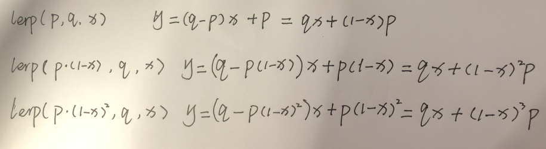
x = 0 时，y = p; x = 1 时，y = q;
lerp(p, q, x) lerp(p(1-x), q, x) lerp(p(1-x)^2, q, x) 三个函数，依次减弱 p 的效果。
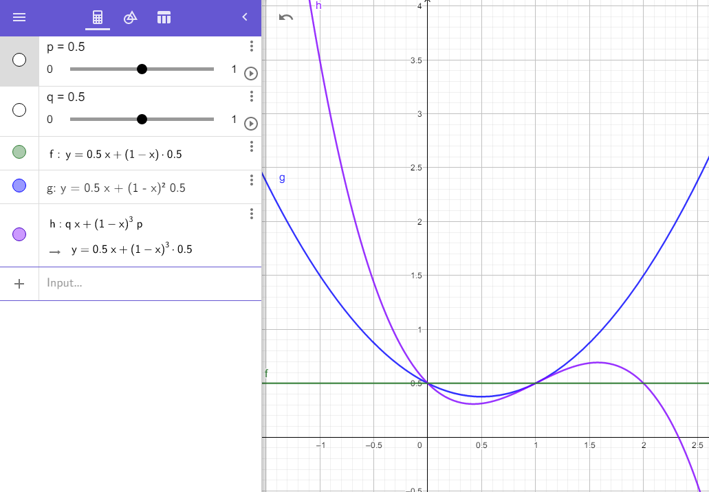
ddx ddy
ddx(var_i) 求出 var_i 变量在当前像素块 x 方向的变化量
ddy(var_i) 求出 var_i 变量在当前像素块 y 方向的变化量
fwidth
fwidth(var_i) = abs(ddx(var_i)) + abs(ddy(var_i))
smoothstep
smoothstep(a, b, c) 在 a-b 范围进行插值，c<=a 返回 0，c>=b 返回 1
t = (c-a)/(b-a)
t = saturate(t)
result = 3t^2 - 2t^3
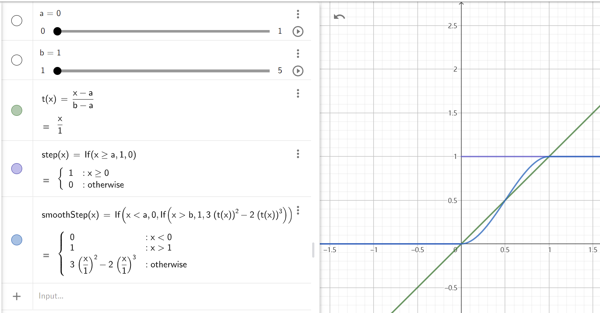
Shader Semantics
Screen space pixel position: VPOS
VPOS 输出的变量中保存的是屏幕像素点坐标，坐标值为整数值。
VPOS 和 SV_POSITION 不能同时出现在 vout 中，需要使用 fin 将两者分离。
Shader "Unlit/Screen Position" { Properties { _MainTex ("Texture", 2D) = "white" {} } SubShader { Pass { CGPROGRAM #pragma vertex vert #pragma fragment frag #pragma target 3.0 #include "UnityCG.cginc" struct appdata { float4 vertex : POSITION; float2 uv : TEXCOORD0; }; struct vout { float2 uv : TEXCOORD0; float4 outpos : SV_POSITION; }; struct fin { float2 uv : TEXCOORD0; UNITY_VPOS_TYPE screenPos : VPOS; }; #define vert_out vout #define frag_in fin vert_out vert(appdata i) { vert_out o; o.uv = i.uv; o.outpos = UnityObjectToClipPos(i.vertex); return o; } sampler2D _MainTex; fixed4 frag (frag_in i) : SV_Target { // screenPos.xy will contain pixel integer coordinates. // return i.screenPos.x < _ScreenParams.x/2 ? 0 : 1; // use them to implement a checkerboard pattern that skips rendering // 4x4 blocks of pixels // checker value will be negative for 4x4 blocks of pixels // in a checkerboard pattern i.screenPos.xy = floor(i.screenPos.xy * 0.25) * 0.5; float checker = -frac(i.screenPos.r + i.screenPos.g); // clip HLSL instruction stops rendering a pixel if value is negative clip(checker); // for pixels that were kept, read the texture and output it fixed4 c = tex2D (_MainTex, i.uv); return c; } ENDCG } } }
Face orientation: VFACE
Shader "Unlit/Face Orientation" { Properties { _ColorFront ("Front Color", Color) = (1,0.7,0.7,1) _ColorBack ("Back Color", Color) = (0.7,1,0.7,1) } SubShader { Pass { Cull Off // turn off backface culling CGPROGRAM #pragma vertex vert #pragma fragment frag #pragma target 3.0 float4 vert (float4 vertex : POSITION) : SV_POSITION { return UnityObjectToClipPos(vertex); } fixed4 _ColorFront; fixed4 _ColorBack; fixed4 frag (fixed facing : VFACE) : SV_Target { // VFACE input positive for frontbaces, // negative for backfaces. Output one // of the two colors depending on that. return facing > 0 ? _ColorFront : _ColorBack; } ENDCG } } }
Unity 定义的变量
_WorldSpaceLightPos0 世界空间 Light 位置
_LightColor0 Light 颜色
_WorldSpaceCameraPos 世界坐标摄像机位置
_LightTexture0 Light 没有使用 Cookie 时，该变量存储衰减贴图。使用了 Cookie 时，存储 Cookie 贴图。 (Directional Light 没有衰减贴图)
_LightTextureB0 Light 使用了 Cookie 时，该变量存储衰减贴图。 (Directional Light 没有衰减贴图)
unity_WorldToShadow float4x4[4] 用于 spot lights 或 方向光的 4 级级联阴影
_LightShadowData // 参考有道笔记 UnitySourceCode.md
_ProjectionParams / x=1 or -1 y=near z=far w=1/far
_ScreenParams / x=widthPixels y=heightPixels z=1.0+1.0/width w=1.0+1.0/height
_ZBufferParams / 用于线性化 ZBuffer 中的值，
/ x=1-far/near
/ y=far/near
/ z=x/far=(1-far)/(near*far)
// w=y/far=(1/near)
double zc0, zc1; // OpenGL would be this: // zc0 = (1.0 - m_FarClip / m_NearClip) / 2.0; // zc1 = (1.0 + m_FarClip / m_NearClip) / 2.0; // D3D is this: zc0 = 1.0 - m_FarClip / m_NearClip; zc1 = m_FarClip / m_NearClip; // now set _ZBufferParams with (zc0, zc1, zc0/m_FarClip, zc1/m_FarClip);
unity_SpecCube0_ProbePosition 第一个反射探针的位置，如果场景中不存在反射探针，则默认传递环境反射(Lighting / Environment Reflections / Source 下可以设置环境反射)的数据，环境反射。
unity_SpecCube0_BoxMin 第一个反射探针对应的 Box 在世界空间中坐标最小值，反射探针为环境反射时，该值为 (Infinity, Infinity, Infinity, 1)
unity_SpecCube0_BoxMax 第一个反射探针对应的 Box 在世界空间中坐标最大值，反射探针为环境反射时，该值为 (-Infinity, -Infinity, -Infinity, 1)
unity_SpecCube0_BoxMin.w 存储了第一个反射探针和第二个反射探针的插值比例，1 表示全部使用第一个反射探针，0 表示全部使用第二个反射探针.(只有将 Renderer 的 reflectionProbeUsage 属性设置为 BlendProbesAndSkybox 时，反射探针才会和 Skybox 进行混合)
unity_SpecCube0_HDR.r 存储了反射探针的强度，对应反射探针的 Runtime setting/Intensity 和 Lighting/Scene/EnvironmentReflections/IntensityMultiplier(IntensityMultiplier 只是 Intensity 的系数，所以 FrameDebug 中看到的值和该值并不同)
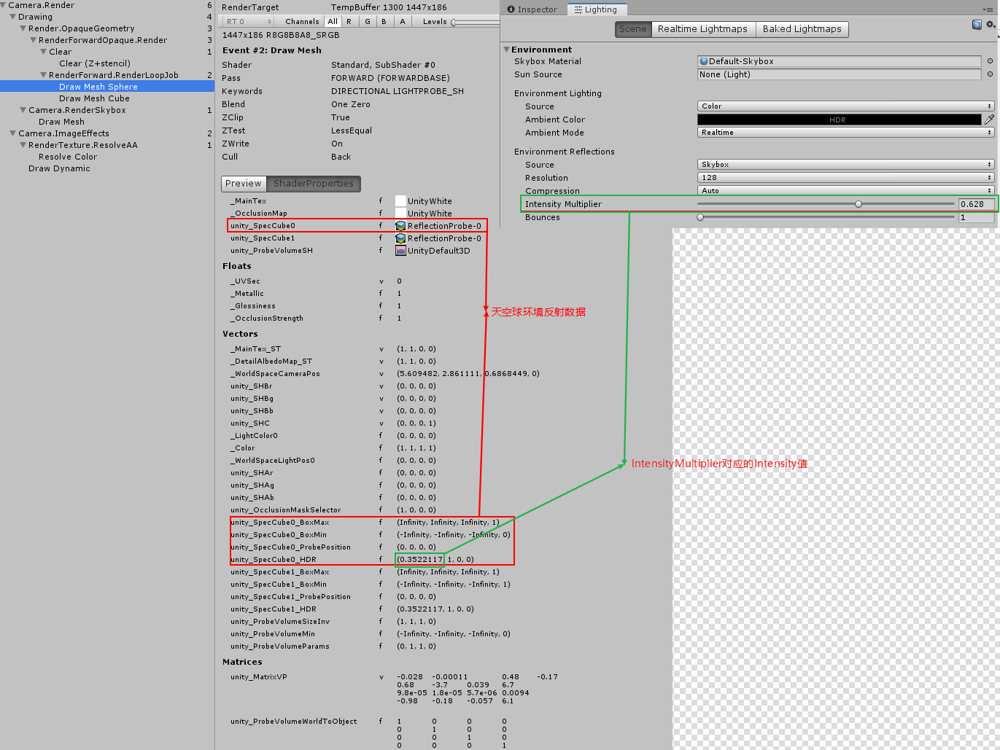
https://docs.unity3d.com/Manual/SL-UnityShaderVariables.html
- _ZBufferParams values? https://forum.unity.com/threads/_zbufferparams-values.39332/
Unity Shader 定义的宏
UNITY_COMPILER_HLSL 使用 HLSL 编译时，定义该宏(for D3D or GLCore/GLES3/GLES platforms)
UNITY_COMPILER_HLSL2GLSL 使用 hlsl2glsl 编译时，定义该宏
UNITY_COMPILER_CG 使用 NVIDIA 的 Cg
https://docs.unity3d.com/Manual/SL-BuiltinMacros.html
https://docs.unity3d.com/Manual/SL-ShadingLanguage.html
UNITY_ENABLE_REFLECTION_BUFFERS TODO-How? 延迟渲染模式下，延迟渲染反射球时会设置该变量开启。延迟渲染模式下，默认该变量是开启的，在 Graphics Settings 中将 DeferredReflections 选项选为 NoSupport 即可关闭。
https://docs.unity3d.com/ScriptReference/Rendering.BuiltinShaderDefine.html
UNITY_USE_NATIVE_HDR 查看 2019 版本的源代码发现相关代码被注释掉了，UNITY_USE_NATIVE_HDR 应该永远都不会被开启
Unity Shader Compiler
- Windows & Microsoft platforms (DX11, DX12 and Xbox One) all use Microsoft’s HLSL compiler (currently d3dcompiler_47).
- OpenGL Core , OpenGL ES 3, OpenGL ES 2.0 and Metal use Microsoft’s HLSL followed by bytecode translation into GLSL or Metal, using HLSLcc.
- OpenGL ES 2.0 can use source level translation via hlsl2glslfork and glsl optimizer. This is enabled by adding #pragma prefer_hlsl2glsl gles
- Other console platforms use their respective compilers (e.g. PSSL on PS4).
- Surface Shaders use Cg 2.2 and MojoShader for code generation analysis step.
Unity shader 预编译命令
D3D11 汇编命令
| 命令 | 说明 | 示例 |
|---|---|---|
| mul result opt1 opt2 | opt1 乘 opt2 保存到 result | |
| add result opt1 opt2 | opt1 加 opt2 保存到 result | |
| mad result opt1 opt2 opt3 | opt1 乘 opt2 再加 opt3 保存结果到 result | |
| mov result opt1 | 将 opt1 数据保存到 result | |
| dcl_sampler s0, mode_default | 创建贴图采样对象 s0 | |
| dcl_resource_texture2d(float,float,float,float) t0 | 创建 2D 贴图资源 t0 | |
| sample result.xyzw, uv.xyxx, t0.xyzw, s0 | 使用 s0 采样器以 uv 为贴图坐标，对贴图资源 t0 进行采样将结果保存到 result 中 |
Combining Textures
Linear Color Space
Linear Color Space 原理
Gamma space 是指经过 gamma 矫正的颜色。gamma 矫正是对光照亮度的调整。最简单的方式是提升原始值某次幂，如 \(originalValue^{gamma}\) 。
gamma=1 表示没有改变。gamma=2 表示对原始值求平方。
这种转换原本是为了适应非线性的 CRT 显示器的。一个附加的好处是这种转换刚好和我们眼睛对不同光强度的敏感程度相一致。人眼对不同的暗的颜色要比不同的亮的颜色更加敏感。所以使用更多位数字存储暗颜色是很有意义的，求幂运算可以实现该需求，它会将比较小的值扩展到一个更大的范围，同时将较大的值压缩到一个小的范围。
运用最广泛的图片颜色格式是 sRGB.
- Encoding with gamma 1/2.2 即 \(originalValue^{\frac{1}{2.2}} = originalValue^{0.45}\)
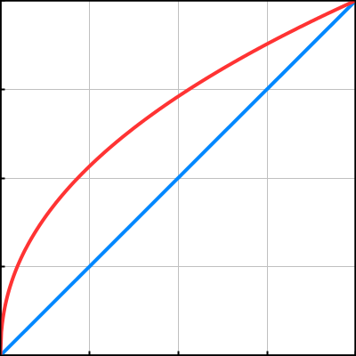 - Decoding with gamma 2.2 即 \(originalValue^{2.2}\)
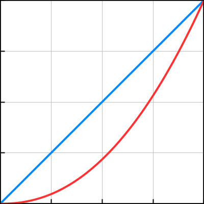 - 伽马矫正函数图示
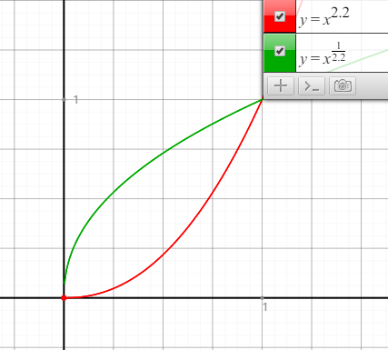
横坐标为编码前的颜色值，纵坐标为编码后的颜色值。蓝色的线表示线性编码前后颜色值不变。红色的线表示 Gamma 编码前后颜色值变大。以 0.5 为分界线，Gamma 编码后，[0-0.5] 被扩展到了 [0-0.7297…] [0.5-1] 被压缩到了 [0.7297… - 1]。Gamma 编码的图片要比 Linear 编码的图片亮度高。
下面的 HTML 可用于 GammaToLinear 转换
<!DOCTYPE html> <html> <body> <h2>颜色转换</h2> <form action="" id="originColor"> TD 颜色 R: <input type="text" id="oR" value ="128" size="4"> G: <input type="text" id="oG" value ="128" size="4"> B: <input type="text" id="oB" value ="64" size="4"> </form> <br> <form action="" id="newColor"> Qin 颜色 R: <input type="text" id="nR" value ="" size="4" disabled> G: <input type="text" id="nG" value ="" size="4" disabled> B: <input type="text" id="nB" value ="" size="4" disabled> </form> <br> <button type="button" onclick='convertColor()'>转换</button> </body> <script type="text/javascript"> function convertColor() { var r = document.getElementById("oR").value / 255; var g = document.getElementById("oG").value / 255; var b = document.getElementById("oB").value / 255; //window.alert("test = " + r + b + g); document.getElementById("nR").value = Math.round(Math.pow(r, 1/2.2) * 255); document.getElementById("nG").value = Math.round(Math.pow(g, 1/2.2) * 255); document.getElementById("nB").value = Math.round(Math.pow(b, 1/2.2) * 255); } </script> </html>
// GammaToLinearSpace(col.rgb); 下面代码是 GammaToLinearSpace 的汇编码 void main() { u_xlat0 = texture2D(_MainTex, vs_TEXCOORD0.xy); u_xlat1.xyz = u_xlat0.xyz * vec3(0.305306017, 0.305306017, 0.305306017) + vec3(0.682171106, 0.682171106, 0.682171106); u_xlat1.xyz = u_xlat0.xyz * u_xlat1.xyz + vec3(0.0125228781, 0.0125228781, 0.0125228781); u_xlat0.xyz = u_xlat0.xyz * u_xlat1.xyz; SV_Target0 = u_xlat0; return; } // LinearToGammaSpace(col.rgb); 下面代码是 LinearToGammaSpace 的汇编代码 void main() { u_xlat0 = texture2D(_MainTex, vs_TEXCOORD0.xy); u_xlat16_1.xyz = max(u_xlat0.xyz, vec3(0.0, 0.0, 0.0)); u_xlat16_2.xyz = log2(u_xlat16_1.xyz); u_xlat16_2.xyz = u_xlat16_2.xyz * vec3(0.416666657, 0.416666657, 0.416666657); u_xlat16_2.xyz = exp2(u_xlat16_2.xyz); u_xlat16_2.xyz = u_xlat16_2.xyz * vec3(1.05499995, 1.05499995, 1.05499995) + vec3(-0.0549999997, -0.0549999997, -0.0549999997); u_xlat0.xyz = max(u_xlat16_2.xyz, vec3(0.0, 0.0, 0.0)); SV_Target0 = u_xlat0; return; }
// 下面代码是 图片Gamma和Linear转换工具 using System.Collections; using System.Collections.Generic; using UnityEngine; using UnityEditor; public class LinearGammaConvert : MonoBehaviour { static List<string> _assetPathList = new List<string>(); [MenuItem("Assets/Tools/ImageLinearToGamma")] public static void LinearToGamma() { _assetPathList.Clear(); GetSelectionPathList(_assetPathList); foreach(var path in _assetPathList) { ConvertBetweenLinearGamma(path, true); } _assetPathList.Clear(); } [MenuItem("Assets/Tools/ImageGammaToLinear")] public static void GammaToLinear() { _assetPathList.Clear(); GetSelectionPathList(_assetPathList); foreach(var path in _assetPathList) { ConvertBetweenLinearGamma(path, false); } _assetPathList.Clear(); } static void GetSelectionPathList(List<string> pathList) { if(Selection.objects!=null) { foreach(var obj in Selection.objects) { var path = AssetDatabase.GetAssetPath(obj); if(!string.IsNullOrEmpty(path)) { pathList.Add(path); } } } } static void ConvertBetweenLinearGamma(string imgPath, bool isToGamma) { if (string.IsNullOrEmpty(imgPath)) return; var textureImportor = AssetImporter.GetAtPath(imgPath) as TextureImporter; if (textureImportor == null) return; textureImportor.isReadable = true; textureImportor.sRGBTexture = !isToGamma; textureImportor.textureCompression = TextureImporterCompression.Uncompressed; textureImportor.SaveAndReimport(); var texture = AssetDatabase.LoadAssetAtPath<Texture2D>(imgPath); float gammaValue = isToGamma ? 0.4545f : 2.2f; var pixels = texture.GetPixels(); for(var i=0; i<pixels.Length; i++) { pixels[i].r = Mathf.Pow(pixels[i].r, gammaValue); pixels[i].g = Mathf.Pow(pixels[i].g, gammaValue); pixels[i].b = Mathf.Pow(pixels[i].b, gammaValue); } texture.SetPixels(pixels); texture.Apply(); System.IO.File.WriteAllBytes(imgPath, texture.EncodeToTGA()); } }
DetailTex 叠加到 MainTex 上为什么需要乘二？
MainTex 颜色范围为[0-1] DetailTex 颜色范围也为[0-1], 如果将 DetailTex 制作为灰度图并且颜色值取 0.5，那么 MainTex*DetailTex*2 可以保证图片亮度不会变化。DetailTex 颜色值小于 0.5 的地方就会减低颜色亮度，大于 0.5 的地方就会提高颜色亮度。
但是，当 Unity 引擎切换到线性空间，乘二是不正确的。DetailTex 转化为线性空间时，0.5 的 DetailTex 颜色值会变为 \(0.5^{2.2}=0.2176\) ,乘二后为 0.4352, 所以颜色亮度会减低。最好的解决方案是当 Unity 引擎切换到线性空间时，应该乘 \(frac{1}{0.5^{2.2}}=frac{1}{0.2176}=4.5956\)
Unity 中 unity_ColorSpaceDouble 用来处理不同的颜色空间乘不同的值。
SetVector SetColor
GammaSpace 下，SetVector SetColor 效果没有差别。下图为设置颜色值为(0.5, 0, 0)
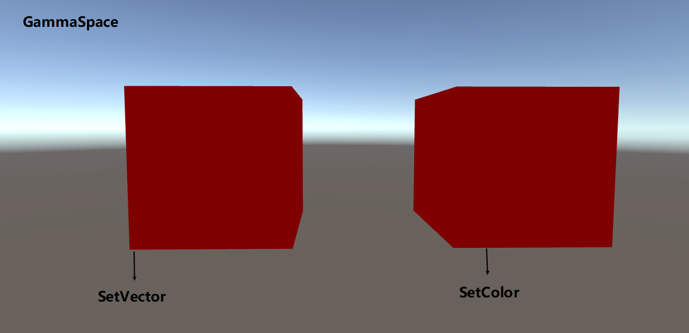
LinearSpace 下，SetVector SetColor 效果会有明显差别。下图为设置颜色值为(0.5, 0, 0)
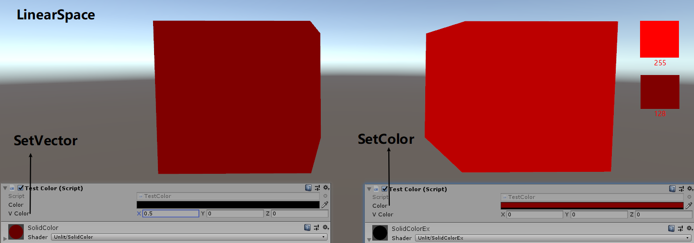
编辑器中设置的值和 Shader Property List 中设置的值是相同的。
线性空间下，通过 SetColor 传入的值被认为是经过 Gamma=1/2.2=0.4545 编码的值，Unity 引擎会对该值进行 Gamma=2.2 的编码(对 Gamma=1/2.2 进行解码)，从而将 Gamma 空间的值转换为线性空间。所以，SetVector(0.5^2.2, 0, 0, 0) 和 SetColor(0.5, 0, 0, 0)的效果是等价的。
参考资料
- Gamma 空间是什么，为什么我们需要它 https://blog.csdn.net/qq_18229381/article/details/78053018
The First Light
normal 从物体空间到世界空间的变换
// obj to world i.normal = mul(transpose((float3x3)unity_WorldToObject), v.normal); inline float3 UnityObjectToWorldNormal( in float3 norm ) { #ifdef UNITY_ASSUME_UNIFORM_SCALING return UnityObjectToWorldDir(norm); #else // 改变左乘 右乘顺序 等价于 矩阵转置 // mul(IT_M, norm) => mul(norm, I_M) => {dot(norm, I_M.col0), dot(norm, I_M.col1), dot(norm, I_M.col2)} return normalize(mul(norm, (float3x3)unity_WorldToObject)); #endif }
Tags LightMode=ForwardBase
定义该 Tags 才可以在 shader 中访问场景中主方向光的信息。
BlinnPhong
视角不逆光时的显示效果如下：
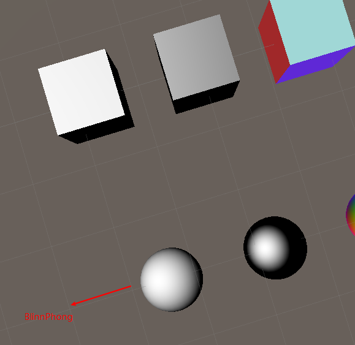
视角逆光时会有显示错误。错误如下图：
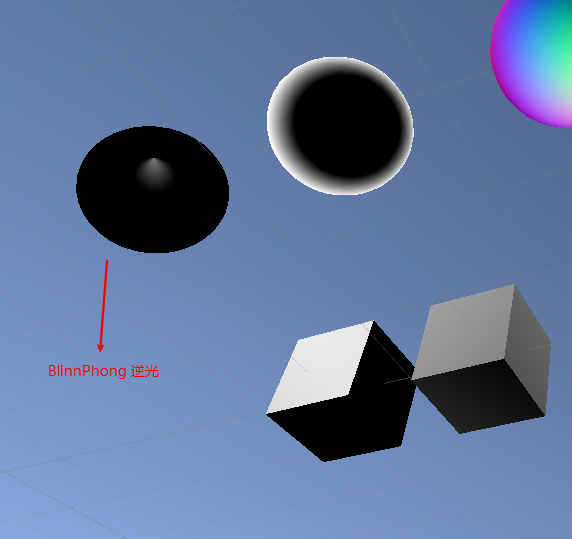
Energy Conservation
// Unity 实现的能量守恒 UnityStandardUtils.cginc half SpecularStrength(half3 specular) { #if (SHADER_TARGET < 30) // SM2.0: instruction count limitation // SM2.0: simplified SpecularStrength return specular.r; // Red channel - because most metals are either monocrhome or with redish/yellowish tint #else return max (max (specular.r, specular.g), specular.b); #endif } // Diffuse/Spec Energy conservation inline half3 EnergyConservationBetweenDiffuseAndSpecular (half3 albedo, half3 specColor, out half oneMinusReflectivity) { oneMinusReflectivity = 1 - SpecularStrength(specColor); #if !UNITY_CONSERVE_ENERGY return albedo; #elif UNITY_CONSERVE_ENERGY_MONOCHROME return albedo * oneMinusReflectivity; #else return albedo * (half3(1,1,1) - specColor); #endif }
Specular / Metallic Workflow
Specular Workflow
Specular Workflow 中将 Specular Color 的强度提高来实现金属材质。将 Specular Color 的强度减弱来实现非金属材质。
// 默认是 Specular Workflow #ifndef UNITY_SETUP_BRDF_INPUT #define UNITY_SETUP_BRDF_INPUT SpecularSetup #endif inline FragmentCommonData SpecularSetup (float4 i_tex) { half4 specGloss = SpecularGloss(i_tex.xy); half3 specColor = specGloss.rgb; half smoothness = specGloss.a; half oneMinusReflectivity; half3 diffColor = EnergyConservationBetweenDiffuseAndSpecular (Albedo(i_tex), specColor, /*out*/ oneMinusReflectivity); FragmentCommonData o = (FragmentCommonData)0; o.diffColor = diffColor; o.specColor = specColor; o.oneMinusReflectivity = oneMinusReflectivity; o.smoothness = smoothness; return o; } // Diffuse/Spec Energy conservation inline half3 EnergyConservationBetweenDiffuseAndSpecular (half3 albedo, half3 specColor, out half oneMinusReflectivity) { oneMinusReflectivity = 1 - SpecularStrength(specColor); #if !UNITY_CONSERVE_ENERGY return albedo; #elif UNITY_CONSERVE_ENERGY_MONOCHROME return albedo * oneMinusReflectivity; #else // 该情况下，如果 specColor 不是灰度图，diffuse 颜色会显示异常 return albedo * (half3(1,1,1) - specColor); #endif } half SpecularStrength(half3 specular) { #if (SHADER_TARGET < 30) // SM2.0: instruction count limitation // SM2.0: simplified SpecularStrength return specular.r; // Red channel - because most metals are either monocrhome or with redish/yellowish tint #else return max (max (specular.r, specular.g), specular.b); #endif }
Metallic Workflow
Metallic Workflow 中通过金属度来实现金属和非金属材质。
// 在自己的 shader 中定义 UNITY_SETUP_BRDF_INPUT = MetallicSetup 来指定使用 Metallic 流程 CGINCLUDE #define UNITY_SETUP_BRDF_INPUT MetallicSetup ENDCG inline FragmentCommonData MetallicSetup (float4 i_tex) { half2 metallicGloss = MetallicGloss(i_tex.xy); half metallic = metallicGloss.x; half smoothness = metallicGloss.y; // this is 1 minus the square root of real roughness m. half oneMinusReflectivity; half3 specColor; half3 diffColor = DiffuseAndSpecularFromMetallic (Albedo(i_tex), metallic, /*out*/ specColor, /*out*/ oneMinusReflectivity); FragmentCommonData o = (FragmentCommonData)0; o.diffColor = diffColor; o.specColor = specColor; o.oneMinusReflectivity = oneMinusReflectivity; o.smoothness = smoothness; return o; } inline half3 DiffuseAndSpecularFromMetallic (half3 albedo, half metallic, out half3 specColor, out half oneMinusReflectivity) { specColor = lerp (unity_ColorSpaceDielectricSpec.rgb, albedo, metallic); oneMinusReflectivity = OneMinusReflectivityFromMetallic(metallic); return albedo * oneMinusReflectivity; } // 常量定义 #ifdef UNITY_COLORSPACE_GAMMA #define unity_ColorSpaceGrey fixed4(0.5, 0.5, 0.5, 0.5) #define unity_ColorSpaceDouble fixed4(2.0, 2.0, 2.0, 2.0) #define unity_ColorSpaceDielectricSpec half4(0.220916301, 0.220916301, 0.220916301, 1.0 - 0.220916301) #define unity_ColorSpaceLuminance half4(0.22, 0.707, 0.071, 0.0) // Legacy: alpha is set to 0.0 to specify gamma mode #else // Linear values #define unity_ColorSpaceGrey fixed4(0.214041144, 0.214041144, 0.214041144, 0.5) #define unity_ColorSpaceDouble fixed4(4.59479380, 4.59479380, 4.59479380, 2.0) #define unity_ColorSpaceDielectricSpec half4(0.04, 0.04, 0.04, 1.0 - 0.04) // standard dielectric reflectivity coef at incident angle (= 4%) #define unity_ColorSpaceLuminance half4(0.0396819152, 0.458021790, 0.00609653955, 1.0) // Legacy: alpha is set to 1.0 to specify linear mode #endif inline half OneMinusReflectivityFromMetallic(half metallic) { // We'll need oneMinusReflectivity, so // 1-reflectivity = 1-lerp(dielectricSpec, 1, metallic) = lerp(1-dielectricSpec, 0, metallic) // store (1-dielectricSpec) in unity_ColorSpaceDielectricSpec.a, then // 1-reflectivity = lerp(alpha, 0, metallic) = alpha + metallic*(0 - alpha) = // = alpha - metallic * alpha half oneMinusDielectricSpec = unity_ColorSpaceDielectricSpec.a; return oneMinusDielectricSpec - metallic * oneMinusDielectricSpec; }
Multi Lights
Light Coord
#ifdef POINT # define DECLARE_LIGHT_COORDS(idx) unityShadowCoord3 _LightCoord : TEXCOORD##idx; # define COMPUTE_LIGHT_COORDS(a) a._LightCoord = mul(unity_WorldToLight, mul(unity_ObjectToWorld, v.vertex)).xyz; # define LIGHT_ATTENUATION(a) (tex2D(_LightTexture0, dot(a._LightCoord,a._LightCoord).rr).r * SHADOW_ATTENUATION(a)) #endif #ifdef SPOT # define DECLARE_LIGHT_COORDS(idx) unityShadowCoord4 _LightCoord : TEXCOORD##idx; # define COMPUTE_LIGHT_COORDS(a) a._LightCoord = mul(unity_WorldToLight, mul(unity_ObjectToWorld, v.vertex)); # define LIGHT_ATTENUATION(a) ( (a._LightCoord.z > 0) * UnitySpotCookie(a._LightCoord) * UnitySpotAttenuate(a._LightCoord.xyz) * SHADOW_ATTENUATION(a) ) #endif #ifdef DIRECTIONAL # define DECLARE_LIGHT_COORDS(idx) # define COMPUTE_LIGHT_COORDS(a) # define LIGHT_ATTENUATION(a) SHADOW_ATTENUATION(a) #endif #ifdef POINT_COOKIE # define DECLARE_LIGHT_COORDS(idx) unityShadowCoord3 _LightCoord : TEXCOORD##idx; # define COMPUTE_LIGHT_COORDS(a) a._LightCoord = mul(unity_WorldToLight, mul(unity_ObjectToWorld, v.vertex)).xyz; # define LIGHT_ATTENUATION(a) (tex2D(_LightTextureB0, dot(a._LightCoord,a._LightCoord).rr).r * texCUBE(_LightTexture0, a._LightCoord).w * SHADOW_ATTENUATION(a)) #endif #ifdef DIRECTIONAL_COOKIE # define DECLARE_LIGHT_COORDS(idx) unityShadowCoord2 _LightCoord : TEXCOORD##idx; # define COMPUTE_LIGHT_COORDS(a) a._LightCoord = mul(unity_WorldToLight, mul(unity_ObjectToWorld, v.vertex)).xy; # define LIGHT_ATTENUATION(a) (tex2D(_LightTexture0, a._LightCoord).w * SHADOW_ATTENUATION(a)) #endif #define UNITY_LIGHTING_COORDS(idx1, idx2) DECLARE_LIGHT_COORDS(idx1) UNITY_SHADOW_COORDS(idx2) #define LIGHTING_COORDS(idx1, idx2) DECLARE_LIGHT_COORDS(idx1) SHADOW_COORDS(idx2) // vertex shader 中，计算_LightCoord #define UNITY_TRANSFER_LIGHTING(a, coord) COMPUTE_LIGHT_COORDS(a) UNITY_TRANSFER_SHADOW(a, coord) #define TRANSFER_VERTEX_TO_FRAGMENT(a) COMPUTE_LIGHT_COORDS(a) TRANSFER_SHADOW(a) #endif
Light Attenuation
#ifdef POINT sampler2D_float _LightTexture0; unityShadowCoord4x4 unity_WorldToLight; #define UNITY_LIGHT_ATTENUATION(destName, input, worldPos) \ unityShadowCoord3 lightCoord = mul(unity_WorldToLight, unityShadowCoord4(worldPos, 1)).xyz; \ fixed shadow = UNITY_SHADOW_ATTENUATION(input, worldPos); \ // 按照距离的平方衰减 fixed destName = tex2D(_LightTexture0, dot(lightCoord, lightCoord).rr).r * shadow; #endif #ifdef SPOT sampler2D_float _LightTexture0; unityShadowCoord4x4 unity_WorldToLight; sampler2D_float _LightTextureB0; inline fixed UnitySpotCookie(unityShadowCoord4 LightCoord) { // 采样时从齐次坐标系转换到欧拉坐标系 // 偏移 0.5 这样灯光坐标系原点就和图片中心点对应了 return tex2D(_LightTexture0, LightCoord.xy / LightCoord.w + 0.5).w; } inline fixed UnitySpotAttenuate(unityShadowCoord3 LightCoord) { // 使用RenderDoc 截取_LightTextureB0 对应的图片资源，发现其为1024x1的从1到0衰减的图片 return tex2D(_LightTextureB0, dot(LightCoord, LightCoord).xx).r; } #if !defined(UNITY_HALF_PRECISION_FRAGMENT_SHADER_REGISTERS) #define DECLARE_LIGHT_COORD(input, worldPos) unityShadowCoord4 lightCoord = mul(unity_WorldToLight, unityShadowCoord4(worldPos, 1)) #else #define DECLARE_LIGHT_COORD(input, worldPos) unityShadowCoord4 lightCoord = input._LightCoord #endif #define UNITY_LIGHT_ATTENUATION(destName, input, worldPos) \ DECLARE_LIGHT_COORD(input, worldPos); \ fixed shadow = UNITY_SHADOW_ATTENUATION(input, worldPos); \ fixed destName = (lightCoord.z > 0) * UnitySpotCookie(lightCoord) * UnitySpotAttenuate(lightCoord.xyz) * shadow; #endif #ifdef DIRECTIONAL #define UNITY_LIGHT_ATTENUATION(destName, input, worldPos) fixed destName = UNITY_SHADOW_ATTENUATION(input, worldPos); #endif #ifdef POINT_COOKIE samplerCUBE_float _LightTexture0; unityShadowCoord4x4 unity_WorldToLight; sampler2D_float _LightTextureB0; #if !defined(UNITY_HALF_PRECISION_FRAGMENT_SHADER_REGISTERS) #define DECLARE_LIGHT_COORD(input, worldPos) unityShadowCoord3 lightCoord = mul(unity_WorldToLight, unityShadowCoord4(worldPos, 1)).xyz #else #define DECLARE_LIGHT_COORD(input, worldPos) unityShadowCoord3 lightCoord = input._LightCoord #endif #define UNITY_LIGHT_ATTENUATION(destName, input, worldPos) \ DECLARE_LIGHT_COORD(input, worldPos); \ fixed shadow = UNITY_SHADOW_ATTENUATION(input, worldPos); \ // 使用RenderDoc 截取_LightTextureB0 对应的图片资源，发现其为1024x1的从1到0衰减的图片 fixed destName = tex2D(_LightTextureB0, dot(lightCoord, lightCoord).rr).r * texCUBE(_LightTexture0, lightCoord).w * shadow; #endif #ifdef DIRECTIONAL_COOKIE sampler2D_float _LightTexture0; unityShadowCoord4x4 unity_WorldToLight; #if !defined(UNITY_HALF_PRECISION_FRAGMENT_SHADER_REGISTERS) #define DECLARE_LIGHT_COORD(input, worldPos) unityShadowCoord2 lightCoord = mul(unity_WorldToLight, unityShadowCoord4(worldPos, 1)).xy #else #define DECLARE_LIGHT_COORD(input, worldPos) unityShadowCoord2 lightCoord = input._LightCoord #endif #define UNITY_LIGHT_ATTENUATION(destName, input, worldPos) \ DECLARE_LIGHT_COORD(input, worldPos); \ fixed shadow = UNITY_SHADOW_ATTENUATION(input, worldPos); \ fixed destName = tex2D(_LightTexture0, lightCoord).w * shadow; #endif
Point Light
half3 lightVector = _WorldSpaceLightPos0.xyz - i.worldPos; light.dir = normalize(lightVector); // 分母中加 1 是为了避免物体到光源距离小于 1 时，光照强度被放大 half attenuation = 1 / (1 + dot(lightVector, lightVector)); light.color = _LightColor0.rgb * attenuation;
Mixing Lights
通过增加 shader 变体来实现对混合灯光的支持。
#pragma multi_compile DIRECTIONAL POINT
Cookies
Spot Light 默认支持 Cookie，Spot Light 的形状是通过 Cookie 来实现。SpotLight 的 Cookie 贴图的 Wrap 模式采用 Clamp。
Direcional 默认不支持 Cookie，需要通过 shader 变体开启支持。其 Cookie 贴图的 Wrap 模式采用 Repeat。
Point 默认不支持 Cookie，需要通过 shader 变体开启支持。其 Cookie 贴图是 Cube 贴图，Wrap 模式采用 Clamp。
// 下面代码等价于 #pragma multi_compile_fwdadd #pragma multi_compile DIRECTIONAL POINT DIRECTIONAL_COOKIE POINT_COOKIE
- multi_compile_fwdbase 变体 https://www.cnblogs.com/sifenkesi/p/9942272.html
Vertex Lights
灯光数量增加后，drawcall 数量会成倍增加。Unity 可以设置逐像素光照的数量。如果将超出数量限制的光照直接不进行计算，会导致明显的显示错误，可以采用更廉价的顶点光照来代替像素光照。
Unity 在 Base Pass 中实现顶点光照。引擎会寻找包含 VERTEXLIGHT_ON 关键字的 Base Pass 着色器。
顶点光照只支持 点光源，方向光和聚光灯都能在顶点着色器中计算。
在 Light 的 RenderMode 属性中，可以设置重要类型，Important 类型的光照总是逐像素光照，Not Important 类型的光照永远不会被当作逐像素光照，Auto 类型的光照其重要性由引擎来决定。
// UnityCG.cginc // 该函数返回了4个点光源对于当前顶点的综合光照颜色 // 在顶点中计算 4 个点光源光照，当光源数目不足 4 个时，计算消耗依然是 4 个光照的计算量 // Used in ForwardBase pass: Calculates diffuse lighting from 4 point lights, with data packed in a special way. float3 Shade4PointLights ( float4 lightPosX, float4 lightPosY, float4 lightPosZ, float3 lightColor0, float3 lightColor1, float3 lightColor2, float3 lightColor3, float4 lightAttenSq, float3 pos, float3 normal) { // to light vectors float4 toLightX = lightPosX - pos.x; float4 toLightY = lightPosY - pos.y; float4 toLightZ = lightPosZ - pos.z; // squared lengths float4 lengthSq = 0; lengthSq += toLightX * toLightX; lengthSq += toLightY * toLightY; lengthSq += toLightZ * toLightZ; // don't produce NaNs if some vertex position overlaps with the light lengthSq = max(lengthSq, 0.000001); // NdotL float4 ndotl = 0; ndotl += toLightX * normal.x; ndotl += toLightY * normal.y; ndotl += toLightZ * normal.z; // correct NdotL float4 corr = rsqrt(lengthSq); ndotl = max (float4(0,0,0,0), ndotl * corr); // attenuation lightAttenSq 用于改进顶点光照的效果 float4 atten = 1.0 / (1.0 + lengthSq * lightAttenSq); float4 diff = ndotl * atten; // final color float3 col = 0; col += lightColor0 * diff.x; col += lightColor1 * diff.y; col += lightColor2 * diff.z; col += lightColor3 * diff.w; return col; }
Spherical Harmonics
相关数学概念
- 球谐函数 是拉普拉斯方程的球坐标系形式解的角度部分。拉普拉斯方程在球坐标系中的表达式分离变量之后，角度部分的偏微分方程称为球函数方程。
- 球坐标系 球坐标系是三维坐标系的一种，用以确定三维空间中点、线、面以及体的位置，它以坐标原点为参考点，由方位角、仰角和距离构成。球坐标系在地理学、天文学中都有着广泛应用。
- 拉普拉斯方程 拉普拉斯方程为二阶偏微分方程。
- 勒让德方程
- 勒让德多项式
- 偏微分方程 包含未知函数的偏导数(或偏微分)的方程。方程中所出现未知函数偏导数的最高阶数，称为该方程的阶。在数学、物理及工程技术中应用最广泛的，是二阶偏微分方程，习惯上把这些方程称为数学物理方程。
- 偏导数 在数学中，一个多变量的函数的偏导数，就是它关于其中一个变量的导数而保持其他变量恒定（相对于全导数，在其中所有变量都允许变化）。
- 参考资料
- https://zh.wikipedia.org/wiki/%E7%90%83%E8%B0%90%E5%87%BD%E6%95%B0
- https://baike.baidu.com/item/%E7%90%83%E8%B0%90%E5%87%BD%E6%95%B0
- https://baike.baidu.com/item/%E7%90%83%E5%9D%90%E6%A0%87%E7%B3%BB
- https://baike.baidu.com/item/Legendre%E5%A4%9A%E9%A1%B9%E5%BC%8F
- https://baike.baidu.com/item/%E6%8B%89%E6%99%AE%E6%8B%89%E6%96%AF%E6%96%B9%E7%A8%8B
- https://baike.baidu.com/item/%E5%81%8F%E5%BE%AE%E5%88%86%E6%96%B9%E7%A8%8B
- https://baike.baidu.com/item/%E5%81%8F%E5%AF%BC%E6%95%B0
- 球谐函数是什么？https://www.zhihu.com/question/26405495
- Unity 渲染教程（五）：多个光源 http://gad.qq.com/program/translateview/7173934
- UnityShader——球谐光照 https://blog.csdn.net/NotMz/article/details/78339913
- 球谐光照（spherical harmonic lighting）解析 https://gameinstitute.qq.com/community/detail/123183 (该篇文章讲解通俗易懂，有道笔记中做了备份)
- 球谐光照 (一)从拉普拉斯方程到球谐函数 https://zhuanlan.zhihu.com/p/66989673
- https://zh.wikipedia.org/wiki/%E7%90%83%E8%B0%90%E5%87%BD%E6%95%B0
原理概述
球谐函数背后的思想是你可以只用一个连续函数来描述所有入射光在某个点的效果，这个函数定义在球的表面。
通常来说，这个函数是用球面坐标表示的。但是也可以使用 3D 坐标，这样我们就可以使用物体的 normal 向量对函数进行采样了。
为了创建这样的函数，你必须在所有方向上对光照强度进行采样，然后将结果转换为单个连续的函数。为了达到完美模拟，你必须为表面的每个点做这样的工作。这当然是无法做到的，所以我们只能做到近似效果。
首先，我们只从对象本地原点的角度定义函数。光照条件在随物体表面变化不大时效果还是可以的。小物体，或者光照比较弱或光照离物体很远时满足这种情况。幸运的是，这恰好是那些不值得逐像素计算的光照或者顶点光照。
其次，我们必须近似函数自身。你可以将任何连续的函数分解为多个不同频率的函数。这些被称为波段。对于任意一个函数，你可能需要无数个波段来模拟。
Spherical Harmonics Bands
第一个基带：使用一个常量颜色值是最简单近似灯光的方式。光照在各个方向上都是相同的。使用单个子函数表示，这个子函数为一个常量值。
第二个基带：第二个基带引入了线性方向光，对于每一个轴向，其描述了最多的光照来自哪儿。使用三个函数表示，每个函数包含一个我们法线的坐标值，并乘上一个常量。
第三个基带：第三个基带更加复杂，它有 5 个函数组成。这些函数都是二次方的，他们包含了两个法线坐标的乘积。
| l band NO | sub func count |
|---|---|
| 0 | 1 |
| 1 | 3 |
| 2 | 5 |
| 3 | 7 |
| 4 | 9 |
下表为最大阶数 n 下，对应所有基带的子函数的个数
| n | n^2 |
|---|---|
| 1 | 1=1 |
| 2 | 1+3=4 |
| 3 | 1+3+5=9 |
| 4 | 1+3+5+7=16 |
下图列出了各个基带的子函数，每一项都需要再乘上 \(\frac{1}{2\sqrt{\pi}}\)
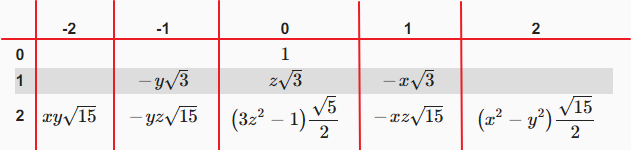
因此我们可以使用 9 个因子来近似表示任何一种光照情况，考虑到颜色有 RGB 三个分量，一共需要使用 3*9=27 个因子。
下图为 unity 中传递给 shader 的球谐数据:
- unity_SHAr.rgba 存储了光照 r 分量的第一个基带和第二个基带的参数因子，unity_SHBr.rgba + unitySHC.r 存储了光照 r 分量的第三个基带的参数因子
- unity_SHAg.rgba 存储了光照 g 分量的第一个基带和第二个基带的参数因子，unity_SHBg.rgba + unitySHC.g 存储了光照 g 分量的第三个基带的参数因子
- unity_SHAb.rgba 存储了光照 b 分量的第一个基带和第二个基带的参数因子，unity_SHBb.rgba + unitySHC.b 存储了光照 b 分量的第三个基带的参数因子
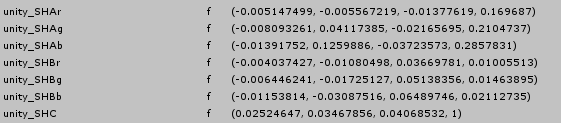
ShadeSH9
// normal should be normalized, w=1.0 half3 SHEvalLinearL0L1 (half4 normal) { half3 x; // Linear (L1) + constant (L0) polynomial terms x.r = dot(unity_SHAr,normal); x.g = dot(unity_SHAg,normal); x.b = dot(unity_SHAb,normal); return x; } // normal should be normalized, w=1.0 half3 SHEvalLinearL2 (half4 normal) { half3 x1, x2; // 4 of the quadratic (L2) polynomials half4 vB = normal.xyzz * normal.yzzx; x1.r = dot(unity_SHBr,vB); x1.g = dot(unity_SHBg,vB); x1.b = dot(unity_SHBb,vB); // Final (5th) quadratic (L2) polynomial half vC = normal.x*normal.x - normal.y*normal.y; x2 = unity_SHC.rgb * vC; return x1 + x2; } // normal should be normalized, w=1.0 // output in active color space half3 ShadeSH9 (half4 normal) { // Linear + constant polynomial terms half3 res = SHEvalLinearL0L1 (normal); // Quadratic polynomials res += SHEvalLinearL2 (normal); # ifdef UNITY_COLORSPACE_GAMMA res = LinearToGammaSpace (res); # endif return res; }
环境光和 LightProbe
环境光和 LightProbe 都使用了球谐光照。在 Unity 中叠加到了间接光照的 diffuse 中。
环境光对应一组球谐系数。每个 LightProbe 也对应存储一组球谐系数。全局照明系统会烘培环境光探针，即使用球谐参数保存环境光参数，但是当几何体使用了光照探针和 Lightmaps 时，并不会应用环境光探针，因为环境光影响在光照探针和 Lightmaps 中已经存在了。只有当不存在光照探针和 Lightmap 时，才会使用环境光探针。
// Should SH (light probe / ambient) calculations be performed? // - 静态和动态lightmaps开启时，不执行SH计算。When both static and dynamic lightmaps are available, no SH evaluation is performed // - 静态和动态lightmaps关闭时，一定执行SH计算。 When static and dynamic lightmaps are not available, SH evaluation is always performed // - 对于低级LOD，静态lightmap和LightProbe实时全局照明可以合并在一起。 For low level LODs, static lightmap and real-time GI from light probes can be combined together // - forwardadd,shdowcaster等Pass不需要执行SH计算。Passes that don't do ambient (additive, shadowcaster etc.) should not do SH either. #define UNITY_SHOULD_SAMPLE_SH (defined(LIGHTPROBE_SH) && !defined(UNITY_PASS_FORWARDADD) && !defined(UNITY_PASS_PREPASSBASE) && !defined(UNITY_PASS_SHADOWCASTER) && !defined(UNITY_PASS_META)) half3 ShadeSHPerPixel (half3 normal, half3 ambient, float3 worldPos) { half3 ambient_contrib = 0.0; #if UNITY_SAMPLE_FULL_SH_PER_PIXEL // Completely per-pixel #if UNITY_LIGHT_PROBE_PROXY_VOLUME if (unity_ProbeVolumeParams.x == 1.0) ambient_contrib = SHEvalLinearL0L1_SampleProbeVolume(half4(normal, 1.0), worldPos); else ambient_contrib = SHEvalLinearL0L1(half4(normal, 1.0)); #else ambient_contrib = SHEvalLinearL0L1(half4(normal, 1.0)); #endif ambient_contrib += SHEvalLinearL2(half4(normal, 1.0)); ambient += max(half3(0, 0, 0), ambient_contrib); #ifdef UNITY_COLORSPACE_GAMMA ambient = LinearToGammaSpace(ambient); #endif #elif (SHADER_TARGET < 30) || UNITY_STANDARD_SIMPLE // Completely per-vertex // nothing to do here. Gamma conversion on ambient from SH takes place in the vertex shader, see ShadeSHPerVertex. #else // L2 per-vertex, L0..L1 & gamma-correction per-pixel // Ambient in this case is expected to be always Linear, see ShadeSHPerVertex() #if UNITY_LIGHT_PROBE_PROXY_VOLUME if (unity_ProbeVolumeParams.x == 1.0) ambient_contrib = SHEvalLinearL0L1_SampleProbeVolume (half4(normal, 1.0), worldPos); else ambient_contrib = SHEvalLinearL0L1 (half4(normal, 1.0)); #else ambient_contrib = SHEvalLinearL0L1 (half4(normal, 1.0)); #endif ambient = max(half3(0, 0, 0), ambient+ambient_contrib); // include L2 contribution in vertex shader before clamp. #ifdef UNITY_COLORSPACE_GAMMA ambient = LinearToGammaSpace (ambient); #endif #endif return ambient; } inline UnityGI UnityGI_Base(UnityGIInput data, half occlusion, half3 normalWorld) { UnityGI o_gi; ResetUnityGI(o_gi); // Base pass with Lightmap support is responsible for handling ShadowMask / blending here for performance reason #if defined(HANDLE_SHADOWS_BLENDING_IN_GI) half bakedAtten = UnitySampleBakedOcclusion(data.lightmapUV.xy, data.worldPos); float zDist = dot(_WorldSpaceCameraPos - data.worldPos, UNITY_MATRIX_V[2].xyz); float fadeDist = UnityComputeShadowFadeDistance(data.worldPos, zDist); data.atten = UnityMixRealtimeAndBakedShadows(data.atten, bakedAtten, UnityComputeShadowFade(fadeDist)); #endif o_gi.light = data.light; o_gi.light.color *= data.atten; // 此处调用 ShadeSHPerPixel 方法计算环境光 /LightProbe的球谐光照，将结果存储到indirectLight.diffuse中 #if UNITY_SHOULD_SAMPLE_SH o_gi.indirect.diffuse = ShadeSHPerPixel(normalWorld, data.ambient, data.worldPos); #endif #if defined(LIGHTMAP_ON) // Baked lightmaps half4 bakedColorTex = UNITY_SAMPLE_TEX2D(unity_Lightmap, data.lightmapUV.xy); half3 bakedColor = DecodeLightmap(bakedColorTex); #ifdef DIRLIGHTMAP_COMBINED fixed4 bakedDirTex = UNITY_SAMPLE_TEX2D_SAMPLER (unity_LightmapInd, unity_Lightmap, data.lightmapUV.xy); o_gi.indirect.diffuse += DecodeDirectionalLightmap (bakedColor, bakedDirTex, normalWorld); #if defined(LIGHTMAP_SHADOW_MIXING) && !defined(SHADOWS_SHADOWMASK) && defined(SHADOWS_SCREEN) ResetUnityLight(o_gi.light); o_gi.indirect.diffuse = SubtractMainLightWithRealtimeAttenuationFromLightmap (o_gi.indirect.diffuse, data.atten, bakedColorTex, normalWorld); #endif #else // not directional lightmap o_gi.indirect.diffuse += bakedColor; #if defined(LIGHTMAP_SHADOW_MIXING) && !defined(SHADOWS_SHADOWMASK) && defined(SHADOWS_SCREEN) ResetUnityLight(o_gi.light); o_gi.indirect.diffuse = SubtractMainLightWithRealtimeAttenuationFromLightmap(o_gi.indirect.diffuse, data.atten, bakedColorTex, normalWorld); #endif #endif #endif #ifdef DYNAMICLIGHTMAP_ON // Dynamic lightmaps fixed4 realtimeColorTex = UNITY_SAMPLE_TEX2D(unity_DynamicLightmap, data.lightmapUV.zw); half3 realtimeColor = DecodeRealtimeLightmap (realtimeColorTex); #ifdef DIRLIGHTMAP_COMBINED half4 realtimeDirTex = UNITY_SAMPLE_TEX2D_SAMPLER(unity_DynamicDirectionality, unity_DynamicLightmap, data.lightmapUV.zw); o_gi.indirect.diffuse += DecodeDirectionalLightmap (realtimeColor, realtimeDirTex, normalWorld); #else o_gi.indirect.diffuse += realtimeColor; #endif #endif o_gi.indirect.diffuse *= occlusion; return o_gi; }
Bumpiness
高度图转 normal map 的方法
方案 1
- 通过高度求出每一点的斜率。该斜率就是该点的 tangent。分别求出 u/v 方向的 tangent。
- 将 tangent 绕 z 轴旋转 90 度，就是 normal。
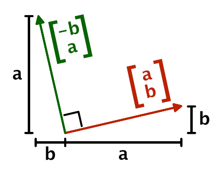
// 利用 u 方向高度变化来求 normal float2 delta = float2(_HeightMap_TexelSize.x, 0); float h1 = tex2D(_HeightMap, i.uv); float h2 = tex2D(_HeightMap, i.uv + delta); // scale normal with 1/delta.x 第一种形式消除了除法，而且改善了精度 // i.normal = float3(delta.x, h2 - h1, 0); <==> i.normal = float3(1, (h2 - h1)/delta.x, 0); i.normal = float3(delta.x, h2 - h1, 0); // 调换 x 和 y 将 tangent 转化为 normal i.normal = float3(h2 - h1, delta.x, 0); // 放大y减弱normal效果 i.normal = float3(h2 - h1, 1, 0); // 也可以利用 v 方向高度来变化求 normal.实现方法相同
下图为使用该方式计算 normal 的效果图
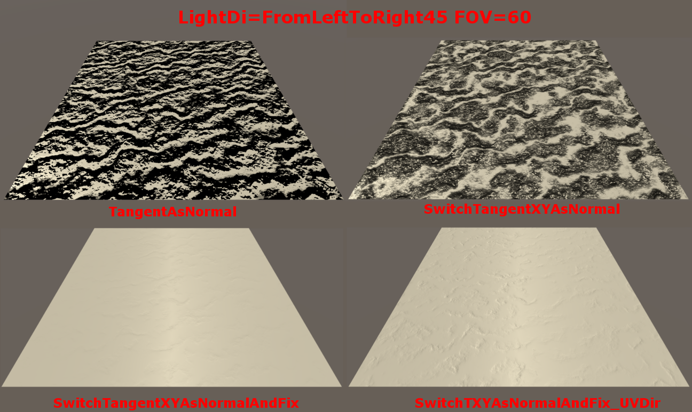
方案 2
- 通过高度求出每一点的斜率。该斜率就是该点的 tangent。分别求出 u/v 方向的 tangent。
- 将 u/v 方向的 tangent 进行叉乘生成 normal。
下面是向量叉乘公式:
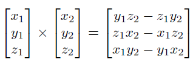
此处 tangent 向量叉乘优化：
float2 du = float2(_HeightMap_TexelSize.x * 0.5, 0); float u1 = tex2D(_HeightMap, i.uv - du); float u2 = tex2D(_HeightMap, i.uv + du); float3 tu = float3(1, u2 - u1, 0); float2 dv = float2(0, _HeightMap_TexelSize.y * 0.5); float v1 = tex2D(_HeightMap, i.uv - dv); float v2 = tex2D(_HeightMap, i.uv + dv); float3 tv = float3(0, v2 - v1, 1); i.normal = cross(tv, tu); i.normal = normalize(i.normal);
Normal 向量的插值
Normal 贴图的 Filter，以及顶点的 Normal 向量在传递到片段着色器过程中的插值 都会导致 normal 向量不再是单位向量，所以需要重新单位化。
Normal 贴图存储惯例
Normal 贴图通用的惯例是将向上的方向存储到 z 分量.所以，在 shader 中采样出来 normal 向量后需要调换 y 分量和 z 分量。
DXT5nm 存储 normal 贴图
其只存储了 normal 的 x，y 分量，丢弃掉了 z 分量。z 分量通过计算得到 \(z=\sqrt{1-x^2-y^2}\) .
x 分量存储在 A 通道，y 分量存储在 G 通道。R 通道和 B 通道没有使用。
DXT5 按照 4x4 个像素为一个块进行压缩。R 占用 5 位，B 占用 5 位，G 占用 6 位，A 占用 8 位。RGB 公用一个查找表，A 单独使用一个查找表。所以将 x 分量存储到 A 通道可以保持 x 分量和 y 分量的独立性。
手机平台不支持 DXT5nm 格式，在手机平台 unity 仍然使用通用的 rgb 进行编码。
缩放 Normal
只需要在单位化 normal 前，对 normal 的 x 分量和 z 分量进行缩放，就可以强化和弱化 y 分量。
Blending Normals
回顾使用高度图生成 normal 贴图的方法，可以知道，如果希望 normal 效果叠加，其实就是将高度叠加，也就是斜率叠加。
normal 贴图中存储的值为:(s 表示单位化过程中，对各个分量的缩放)
所以叠加 MainNormalTex 和 DetailNormalTex 的高度后得到的 normal 为
Whiteout Blending : 对上面得到的 normal 乘 \(M_zD_z\) ，然后丢弃掉对 x 和 y 分量的缩放、这样可以强化 X 和 Y 分量
Shadows
方向光阴影
开启屏幕空间阴影
- 开启关闭的方法
- 关闭 在 ProjectSetting/Graphic 中，将 Screen Space Shadows 设置为 No Support，Tier 中取消勾选 Cascaded Shadows 。
- 开启 在 ProjectSetting/Graphic 中，将 Screen Space Shadows 设置为 Built-in shader，Tier 中勾选 Cascaded Shadows 。
- 关闭 在 ProjectSetting/Graphic 中，将 Screen Space Shadows 设置为 No Support，Tier 中取消勾选 Cascaded Shadows 。
- Rendering to Depth Texture
Unity 绘制场景中物体将其深度写入到 DepthTexture
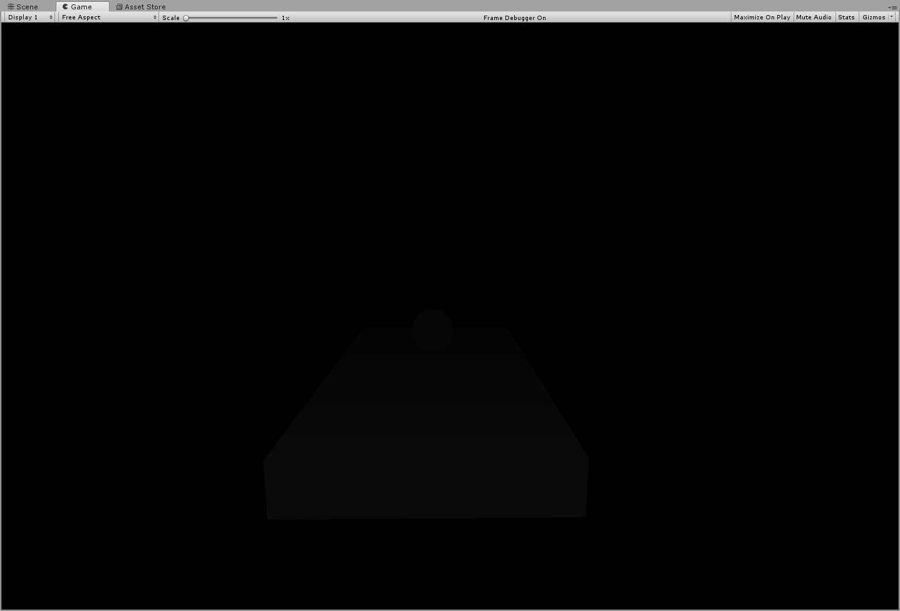
- Rendering To Shadow Maps
Unity 在光源位置对场景进行绘制，将物体深度写入到 Shadowmap
开启 shadow cascades 后，会多次绘制阴影。开启 2 级会绘制两次，开启 4 级会绘制 4 次。
下图为第一个方向光视角下开启 4 级 cascades 阴影渲染的阴影贴图：
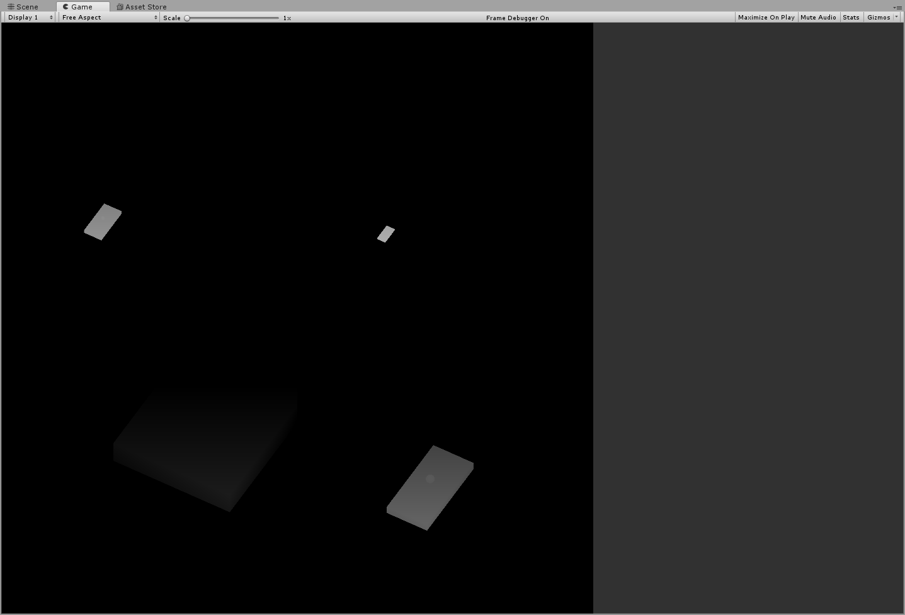
下图为第二个方向光视角下开启 4 级 cascades 阴影渲染的阴影贴图：
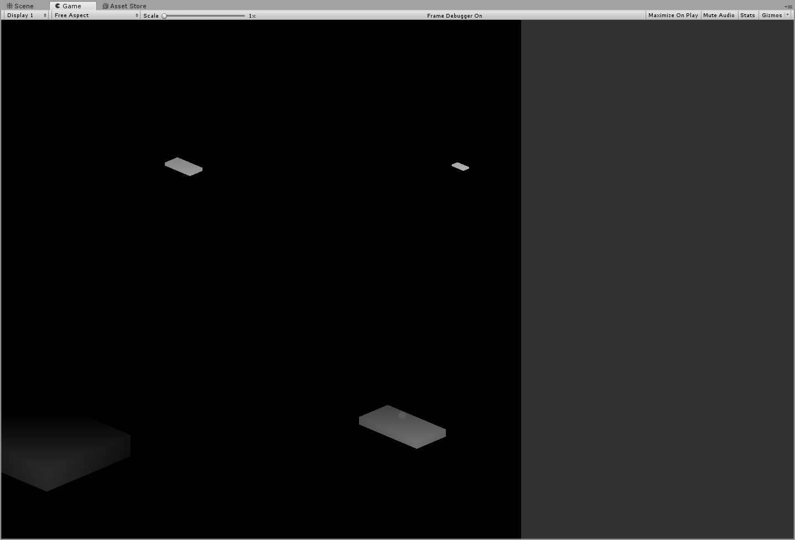
- Collecting Shadows
Unity 使用 Hidden/Internal-ScreenSpaceShadows shader 绘制一个全屏的矩形，以前面得到的 DepthTexture 和 Shadowmap 为输入，对于每一个片段通过比较对应的场景摄像机的深度和光照摄像机的深度得出屏幕空间的阴影贴图。
在这个过程中，Unity 通过 Filtering 来实现软阴影。
下图为第一个方向光对应的屏幕空间阴影贴图：
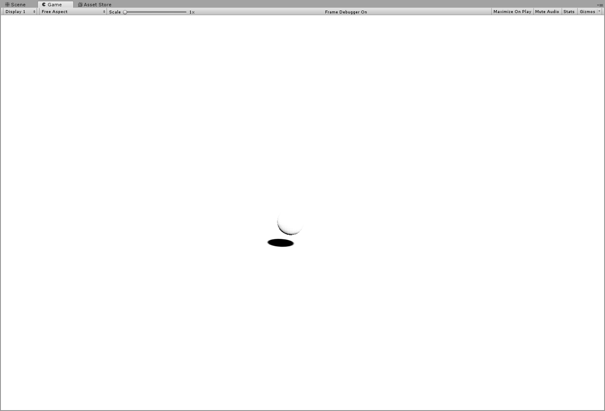
下图为第二个方向光对应的屏幕空间阴影贴图：
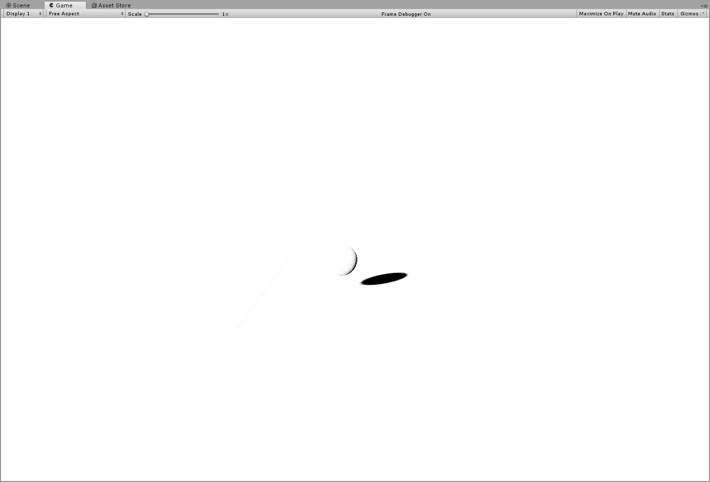
- 最终结果
下图为两个方向光绘制场景时对应的 drawcall：
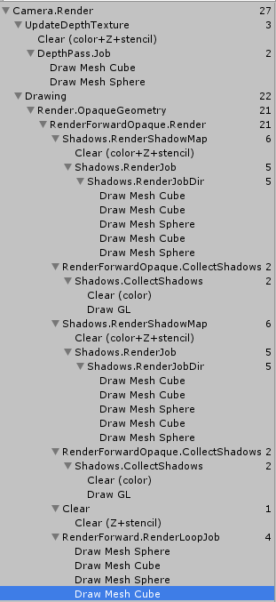
下图为绘制结果：
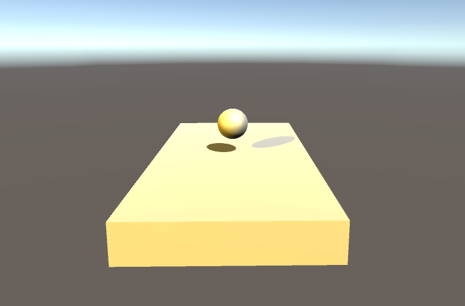
关闭屏幕空间阴影
ShadowQuality
减低 ShadowDistance 可以提高阴影精度，但是会缩小阴影范围。
设置投影类型 QualitySettings.shadowProjection = ShadowProjection.CloseFit; 可以提高阴影精度。
开启 Cascade。
ForwardAddPass 阴影支持
// 方案1 fwd pass 中添加如下命令 #pragma multi_compile_fwdadd_fullshadows // 方案2 // 2.1 fwd pass 中修改Tag // 2.2添加 DIRECTIONAL SHADOWS_SCREEN变体 Tags { "LightMode" = "ForwardAdd" "SHADOWSUPPORT"="true" } // ... #pragma multi_compile _ DIRECTIONAL #pragma multi_compile _ SHADOWS_SCREEN
Spot Light Shadow
相关宏定义
| 宏定义 | DrawCall | 说明 |
|---|---|---|
| UNITY_NO_SCREENSPACE_SHADOWS | 开启屏幕空间阴影 | |
| SHADOWS_DEPTH | Shadows.RenderJob ShadowCaster | Directional 和 Spot 生成阴影贴图写入深度的宏定义 |
| SHADOWS_CUBE | Shadows.RenderJob ShadowCaster | PointLight 生成阴影贴图写入深度的宏定义 |
| SHADOWS_SCREEN | RenderForward ForwardBasePass | 主 Directional 开启阴影对应的宏定义 |
| SHADOWS_SCREEN DIRECTIONAL | RenderForward ForwardAddPass | 第二个 Directional 开启阴影对应的宏定义 |
| SHADOWS_DEPTH SPOT | RenderForward ForwardAddPass | Spot 开启阴影对应的宏定义 |
| SHADOWS_CUBE POINT | RenderForward ForwardAddPass | Point 开启阴影对应的宏定义 |
- DIRECTIONAL SPOT POINT 3 个对应 Light 组件上的 LightType 的设置
- SHADOWS_SCREEN SHADOWS_DEPTH SHADOWS_CUBE 对应物体 Renderer 组件上的 ReceiveShadow 设置
参考资料
- Signed Distance Field Shadow in Unity https://zhuanlan.zhihu.com/p/37918356
- Unity 平面阴影(王者荣耀阴影实现) https://zhuanlan.zhihu.com/p/42781261
Reflection
Environment Mapping
缺少 Indirect Specular Lighting
在 shader 中组合了 diffuse specular ambient 后，感觉应该可以创建出看上去真实的画面了，然而物体表面依然暗淡，闪耀的表面效果看起来不正确。闪耀的表面应该像镜子，特别是表面为金属时。（完美的镜面反射会反射所有光照，所以其不存在 diffuse.光滑度越高、金属度越高，材质越接近完美镜面。）
下图为 Metallic Smoothness 取不同值时的渲染效果:
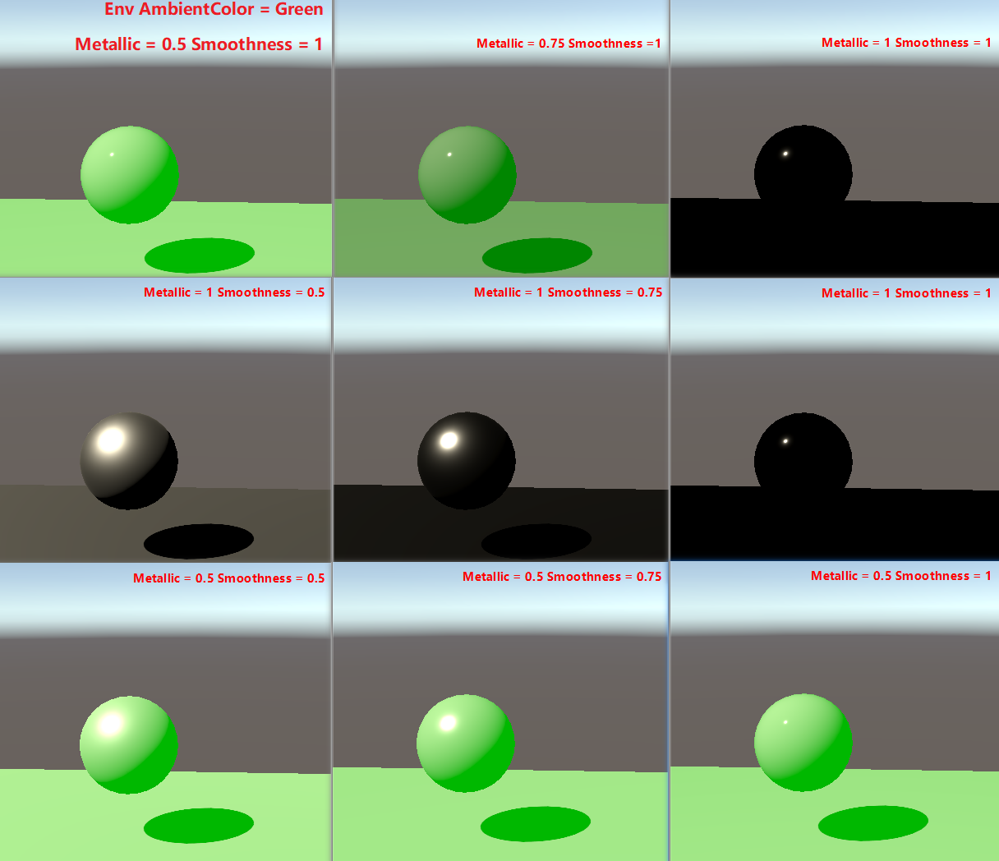
上图 metallic=1 时，env ambient 几乎对渲染没有任何影响，这是因为金属度越高反射率越大，反射率越大其漫反射部分就越少(参考 PhysicalTheory.org 中 金属和非金属放射光的差异 的描述)，所以 ambient 对于 metallic=1 的材质几乎没有任何影响。
上图 metallic=1 Smoothness=1 时，几乎是一个黑色的球，只能看到一个很小的高光，这个很小的高光是表面将直接光源反射到了朝向我们的方向(朝向摄像机的方向)。之所以渲染结果是黑球，是因为 shader 中只包含了直接光照和间接光照的 diffuse（也就是 ambient），为了反射环境，需要添加间接光照的高光反射，即 indirectLight.specular。
Indirect Specular Lighting 特点
视线和法线夹角越大，Fresnel 反射越强。表面越光滑 Fresnel 反射越强。
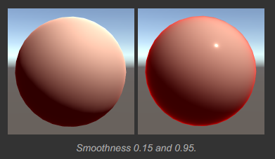
因为 Fresnel 间接反射来源于间接光照(上图中直接光照颜色为白色，间接光照的高光直接设置为了红色)，所以它产生的效果独立于直接光照，因此上图中即使处于阴影部分的边缘处 Fresnel 反射依然很强，其独立于直接光源的阴影。
UnityIndirect CreateIndirectLight (Interpolators i) { UnityIndirect indirectLight; indirectLight.diffuse = 0; indirectLight.specular = 0; #if defined(VERTEXLIGHT_ON) indirectLight.diffuse = i.vertexLightColor; #endif #if defined(FORWARD_BASE_PASS) indirectLight.diffuse += max(0, ShadeSH9(float4(i.normal, 1))); // 间接高光颜色设置为了红色 indirectLight.specular = float3(1, 0, 0); #endif return indirectLight; }
Imperfect Reflections
模糊的反射是通过环境贴图的 mipmap 来实现的。
Metals VS Nonmetals
金属和非金属表面都可以产生清晰的反射，但是他们看起来是不同的。镜面反射在闪耀的电介质材质(非金属)上效果会很强，但是镜面反射并不会主导电介质材质(非金属)的外观，他们仍然表现出大量的可见的 diffuse 反射。
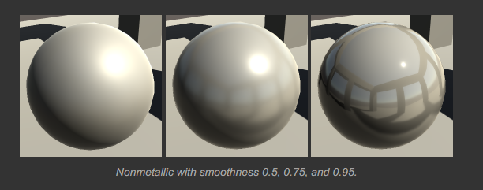
金属会改变镜面反射的颜色，但是非金属则不会。这对于镜面高光和环境镜面反射都适用。下图中金属的镜面高光颜色为红色，非金属是白色。
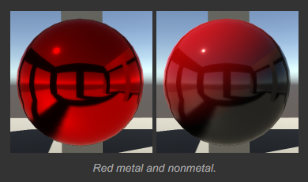
Mirrors and Shadows
间接反射是独立于表面的直接照明的。这在其阴影区域会更加明显。对于非金属，这会让表面更亮一些，你依然可以看到直接光照导致的阴影。
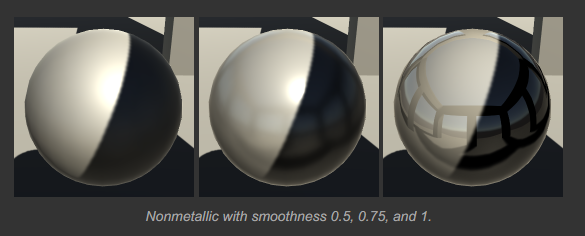
同样的规则适用于金属。但是，金属的间接反射起主导作用。因此，直接光照和阴影会随着光泽度增加而消失。完美镜面上不存在阴影。
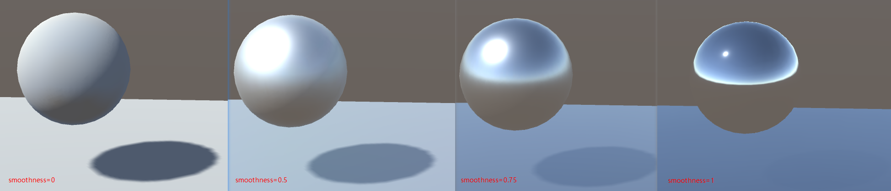
现实世界中很少有完美的镜面。现实世界中的材质都是由金属和非金属混合而成的，可以通过调节金属度来模拟不完美的镜面材质。
Box Projection
ReflectionProbe 的 Box 区域是和世界坐标轴对齐的，它不受旋转和缩放影响。
BoxProjection 原理如下图所示：
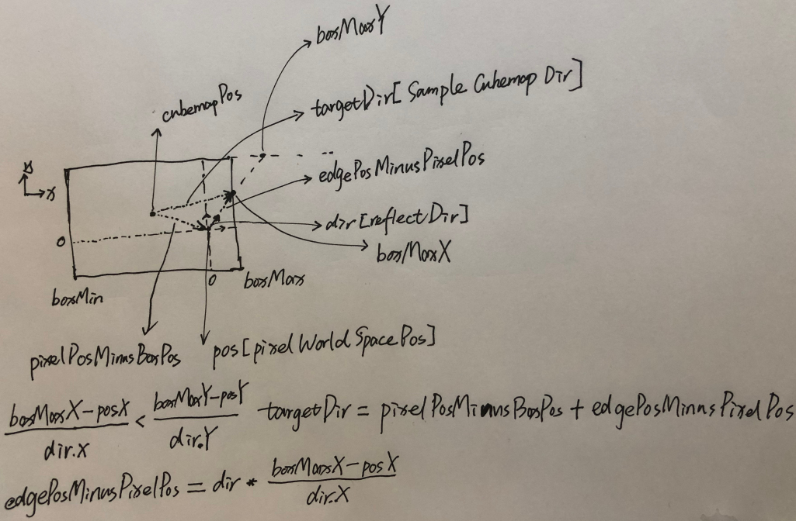
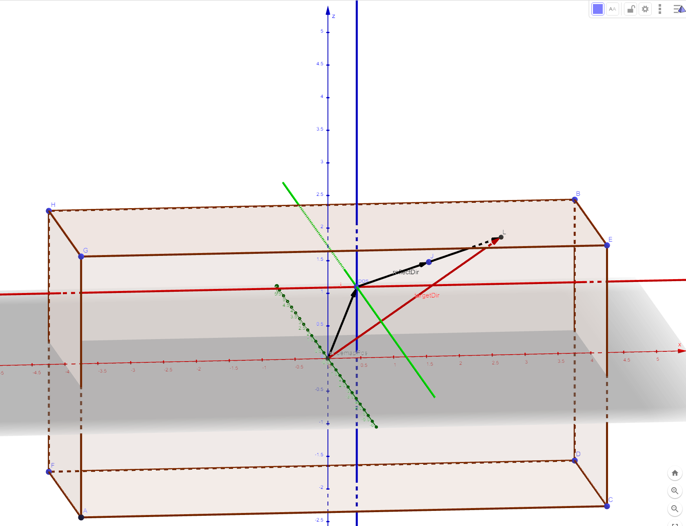
./UnityCatLikeCoding/01_08re_box_projection.ggb
BoxProjection 对应代码实现如下：
half3 BoxProjection(half3 dir, half3 pos, half4 cubemapPos, half3 boxMin, half3 boxMax) { // cubemapPos.w 控制 BoxProjection 是否生效 // UNITY_BRANCH 用于开启真正的分支 UNITY_BRANCH if (cubemapPos.w > 0) { half3 factors = ((dir > 0 ? boxMax : boxMin) - pos) / dir; half realFactor = min(min(factors.x, factors.y), factors.z); return dir * realFactor + (pos - cubemapPos); } return dir; }
- 关于 UNITY_BRANCH https://forum.unity.com/threads/correct-use-of-unity_branch.476804/
- HLSL branch flatten https://docs.microsoft.com/zh-cn/windows/win32/direct3dhlsl/dx-graphics-hlsl-if
Blending Reflection Probes
只有将 Renderer 的 reflectionProbeUsage 属性设置为 BlendProbesAndSkybox 时，反射探针才会和 Skybox 进行混合
public enum ReflectionProbeUsage { Off = 0, // 关闭反射探针 BlendProbes = 1, // 反射探针只和反射探针进行混合 BlendProbesAndSkybox = 2, // 反射探针可以和 skybox 进行混合 Simple = 3 // 只使用其中一个反射探针或 skybox，不进行混合 }
// 混合反射探针的逻辑 UnityIndirect CreateIndirect(v2f i, half3 viewDir) { UnityIndirect indirect; indirect.diffuse = 0; indirect.specular = 0; #if defined(FORWARD_BASE_PASS) indirect.diffuse += max(0, ShadeSH9(half4(i.worldNormal, 1))); half roughness = 1 - _Smoothness; roughness *= 1.7 - 0.7 * roughness; half3 reflectDir = reflect(-viewDir, i.worldNormal); half3 reflectDir1 = BoxProjection(reflectDir, i.worldPos, unity_SpecCube0_ProbePosition, unity_SpecCube0_BoxMin, unity_SpecCube0_BoxMax); half4 envColor = UNITY_SAMPLE_TEXCUBE_LOD(unity_SpecCube0, reflectDir1, roughness*UNITY_SPECCUBE_LOD_STEPS); envColor.rgb = DecodeHDR(envColor, unity_SpecCube0_HDR); UNITY_BRANCH if (unity_SpecCube0_BoxMin.a < 0.9999) { half3 reflectDir2 = BoxProjection(reflectDir, i.worldPos, unity_SpecCube1_ProbePosition, unity_SpecCube1_BoxMin, unity_SpecCube1_BoxMax); half4 envColor2 = UNITY_SAMPLE_TEXCUBE_SAMPLER_LOD(unity_SpecCube1, unity_SpecCube0, reflectDir2, roughness*UNITY_SPECCUBE_LOD_STEPS); // DecodeHDR 中代码处理了 intensity 逻辑 envColor2.rgb = DecodeHDR(envColor2, unity_SpecCube1_HDR); envColor = lerp(envColor2, envColor, unity_SpecCube0_BoxMin.a); } //indirect.specular = half3(1, 0, 0); indirect.specular = envColor.rgb; #endif return indirect; }
Bouncing Reflections
在 Lighting/Scene/Environment Reflections 下可以设置 Bounces 的次数。
Lighting/Scene 下的数据记录在当前打开的场景文件中，每个场景的数据可以不同。
EnvironmentLighting/IntensityMultiplier 当 EnvironmentLighting/Source 为 Skybox 时，该调节项控制天空球光照亮度.
EnvironmentReflections/Source 指定使用天空球作为环境反射源，还是自定义环境反射源。
EnvironmentReflections/IntensityMultiplier 控制反射源在场景中提供反射的因子，值为 1 时符合物理规律。
ComplexMaterials & More Complexity
Emission
[NoScaleOffset] _EmissionMap ("Emission", 2D) = "black" {} _Emission ("Emission", Color) = (0, 0, 0) #pragma shader_feature _EMISSION_MAP sampler2D _EmissionMap; float3 _Emission; float3 GetEmission (Interpolators i) { #if defined(FORWARD_BASE_PASS) #if defined(_EMISSION_MAP) return tex2D(_EmissionMap, i.uv.xy) * _Emission; #else return _Emission; #endif #else return 0; #endif } float4 MyFragmentProgram (Interpolators i) : SV_TARGET { //… float4 color = UNITY_BRDF_PBS( albedo, specularTint, oneMinusReflectivity, GetSmoothness(i), i.normal, viewDir, CreateLight(i), CreateIndirectLight(i, viewDir) ); color.rgb += GetEmission(i); return color; }
Smoothness & Metallic Map
将 MetallicMap 和 SmoothnessMap 存储到一张 DXT5 格式的贴图中 ，Metallic Map 放到贴图 r 通道, Smoothness Map 放到贴图 a 通道。等价于使用两张 DXT1 格式贴图分别存储。因为 DXT5 分开对 RGB 和 A 通道进行压缩。
Occlusion
[NoScaleOffset] _OcclusionMap ("Occlusion", 2D) = "white" {} _OcclusionStrength("Occlusion Strength", Range(0, 1)) = 1 #pragma shader_feature _OCCLUSION_MAP sampler2D _OcclusionMap; float _OcclusionStrength; float GetOcclusion (Interpolators i) { #if defined(_OCCLUSION_MAP) return lerp(1, tex2D(_OcclusionMap, i.uv.xy).g, _OcclusionStrength); #else return 1; #endif } // Occlusion 同时影响直接光照阴影和间接光照阴影时，Occlusion效果会过强 // 因为Occlusion是基于物体形状的而不是特定光照的，其只影响间接光照会更合理一些。凹痕越深的地方，各个方向的间接光照减弱越多，而直接光照照进凹痕时，还是可以加将其照亮。 UnityLight CreateLight (Interpolators i) { //… UNITY_LIGHT_ATTENUATION(attenuation, i, i.worldPos); // 通过将Occlusion和atten相乘来影响直接光照阴影 attenuation *= GetOcclusion(i); light.color = _LightColor0.rgb * attenuation; light.ndotl = DotClamped(i.normal, light.dir); return light; } UnityIndirect CreateIndirectLight (Interpolators i, float3 viewDir) { //… #if defined(FORWARD_BASE_PASS) //… float occlusion = GetOcclusion(i); // 通过将Occlusion和间接光照的diffuse、specular相乘来影响间接光照阴影 indirectLight.diffuse *= occlusion; indirectLight.specular *= occlusion; #endif return indirectLight; }
Transparency
Cutout
- clip 操作对于移动平台的 TBDR 来说消耗比较大，通过添加 _RENDERING_CUTOUT ShaderFeature，对于不需要 clip 的材质可以提升渲染性能。
- 修改 cutout 材质的渲染队列，让其在不透明(Opaque)物体之后绘制，这样如果 cutout 材质对应的物体被不透明物体遮挡了，就可以避免对 cutout 物体的绘制，从而提高性能。
Semitransparent
- 半透明物体需要采用 Blend SrcAlpha OneMinusSrcAlpha 的混合方式，这样才能将半透明物体后面的物体透出来。
- 半透明物体不能写深度缓冲区，否则半透明物体叠加在一起时，深度测试会剔除掉物体的一部分，导致渲染结果不正确。
RenderType tag
下面是 Unity 内置 shader 的 Shader replacement tags, 在使用替换的 shader 进行渲染时，需要使用为 shader 设置的"RenderType" tag。
- Opaque: most of the shaders (Normal , Self Illuminated, Reflective, terrain shaders).
- Transparent: most semitransparent shaders (Transparent, Particle, Font, terrain additive pass shaders).
- TransparentCutout: masked transparency shaders (Transparent Cutout, two pass vegetation shaders).
- Background: Skybox shaders.
- Overlay: GUITexture, Halo, Flare shaders.
- TreeOpaque: terrain engine tree bark.
- TreeTransparentCutout: terrain engine tree leaves.
- TreeBillboard: terrain engine billboarded trees.
- Grass: terrain engine grass.
- GrassBillboard: terrain engine billboarded grass.
Fading vs Transparency
- Fade Mode
Fade Mode 中，使用的混合模式为 Blend SrcAlpha OneMinusSrcAlpha，几何体的颜色会依据 alpha 值降隐，漫反射和高光反射都会降隐。这种效果对于玻璃是不合适的，玻璃是全透明的，但是依然有清晰的高光和反射。 Transparent Mode
Transparent Mode 中，使用的混合模式为 Blend One OneMinusSrcAlpha, albedo 会乘 alpha 值，因此漫反射会根据 alpha 值降隐，高光反射会影响到透明度。这种模式适用于玻璃。
光线被反射后，透过半透明物体的光线会对应减少，如果所有光线都被反射，则不透明度为 1，如果没有光线被反射，则不透明度为原始值。y=kx+b 两个方程两个未知数，即可求出最终的 alpha 值。
#if defined(_RENDERING_TRANSPARENT) albedo *= alpha; alpha = 1 - oneMinusReflectivity + alpha * oneMinusReflectivity; #endif
Semitransparent Shadows
Cutout Shadow
透贴的阴影只需要在 ShadowCaster Pass 的片段着色器中使用 clip(alpha - _Cutoff)指令将对应的片段剔除就可以了。
Transparenct Shadow
使用 Dithering 技术来实现半透明阴影。依据 alpha 值 clip 投影表面，从而模拟出半透明阴影。下图为使用这种技术实现的阴影效果：
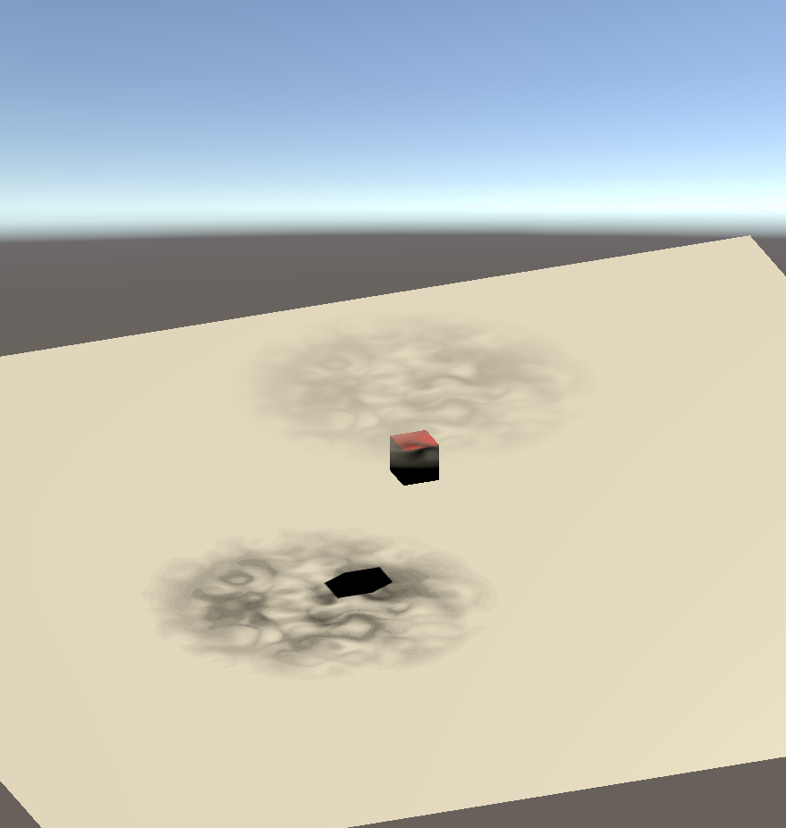
_DitherMaskLOD Unity 使用的 Dither 贴图的模式如下，其一共包含 16 种模式，每个模式中的小像素块是 4x4 的像素块。开始是一个全空的模式(下图最右边)，依次向左每个模式填充一个像素块，直到模式中有 7 个像素块被填充。然后图案翻转，直到所有像素被填充。
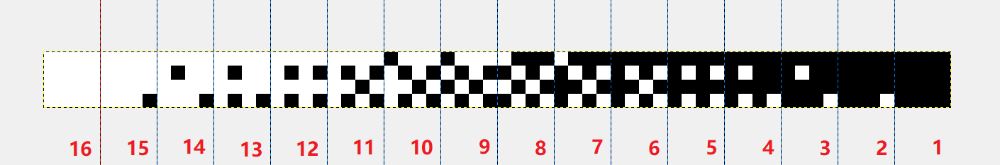
// 采样 _DitherMaskLOD 用到的uv.z的范围为[0, 1] 因为一共有16种模式，所以uv.z = 0 对应第一种模式uv.z = 1.0/16.0 = 0.0625 对应第二种模式 uv.z = 0.9375 对应第15中模式 // alpha*0.9375 当alpha越小选取的模式越靠右边，取样得到的dither值为0的概率越大，当alpha越大选取的模式越靠左边，取样得到的dither值为1的概率越大，从而模拟了半透明的阴影 float3 uv = float3(i.vpos.xy, alpha*0.9375); float dither = tex3D(_DitherMaskLOD, uv); clip(dither - 0.01);
Deferred Shading
Forward Path vs Deferred Path
DrawCall 对比
当场景中只有一个方向光时，Forward Path 和 Deferred Path 的 DrawCall 数目相差不多，Forward Path 因为需要单独生成 DepthTexture，在开始的 DepthPass 中多出了 48 个 DrawCall
场景中有两个方向光时，Forward Path 比 Deferred Path 多出了很多 DrawCall。
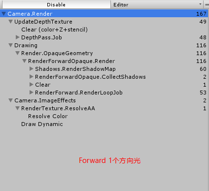
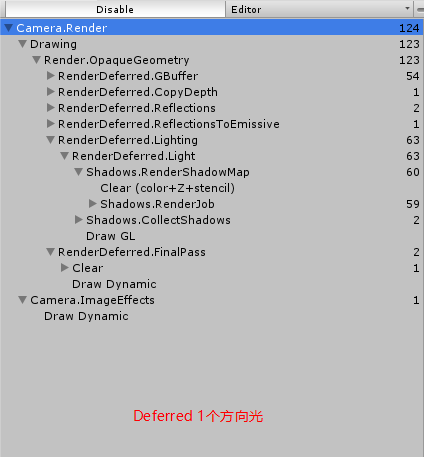
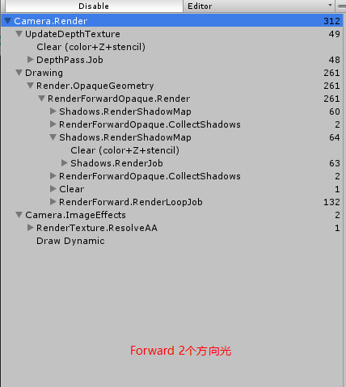
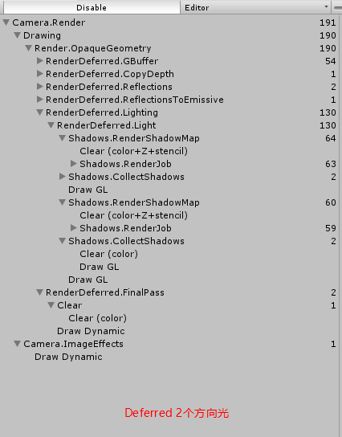
GBuffer 内容
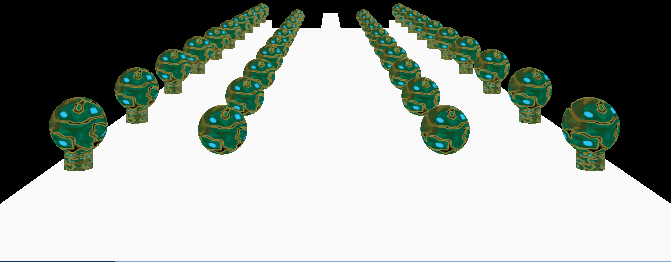
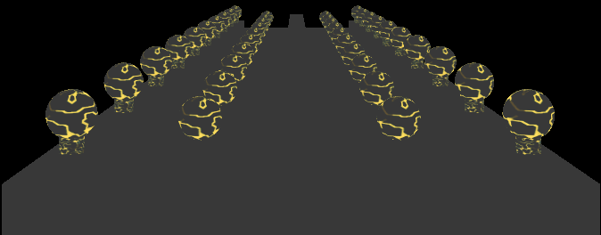
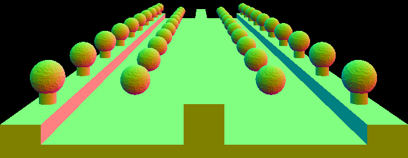
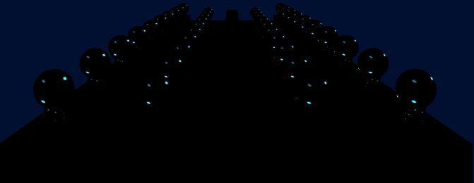
Rendering Lights
- Directional Lights
因为方向光影响所有物体，通过渲染一个覆盖整个视图的四边形来计算方向光的渲染。Unity 默认使用 Internal-DeferredShading.shader 来渲染这个四边形。(每个方向光使用一个四边形计算一次，多个方向光计算多次)
下图中使用了两个方向光，其中渲染了两次：
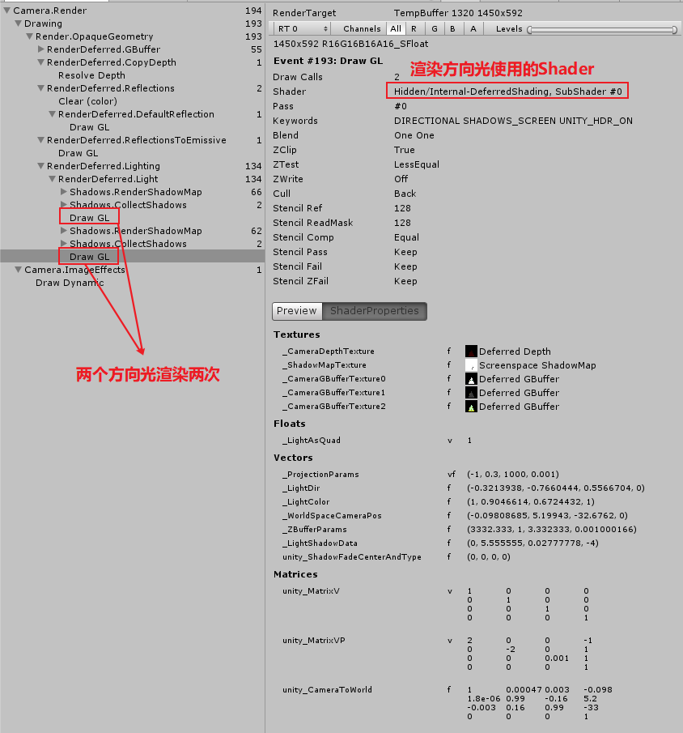
- Spot Lights
spot light 不会影响所有物体，使用一个棱锥体可以表示 Spot light 照亮的体积，所以通过渲染一个棱锥体来执行 Spot Light 的渲染，这样只有棱锥体可见区域会被渲染。如果棱锥体完全被其他物体遮挡，则不需要渲染该 spot light。如果棱锥体的任何一个片段被渲染，将会执行该 spot light 的光照计算。
只有真的有物体在 spot light 照亮的体积中时，光照计算才是有意义的。在棱锥体后面的几何体是不需要渲染的，因为 spot light 照不到该几何体。
为了避免渲染不必要的片段，首先使用 Internal-StencilWrite.shader 渲染棱锥体，该 Pass 会写入模板缓冲区，用来标识哪些片段需要渲染。不过当棱锥体和摄像机近平面交叉时不能使用该技术，因为此时近平面外的正面被摄像机剔除，只有反面写入了模板值。
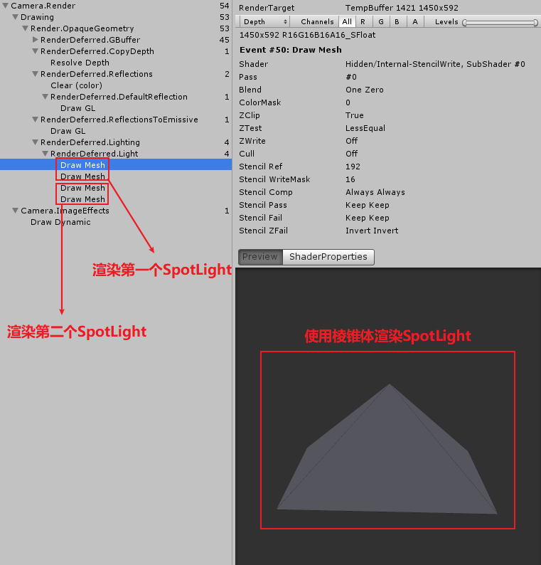
- Point lights
point light 和 spot light 类似，只是使用球体来表示 point light 照亮的体积。
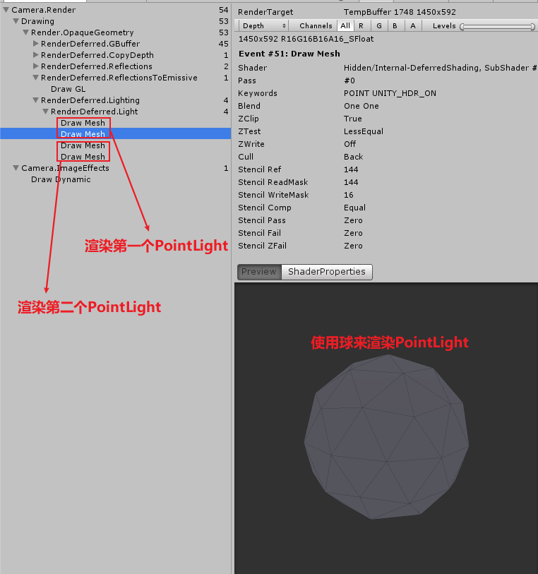
- Q&A
- 渲染灯光对应的物体时，为什么需要关闭正反面剔除？
- 因为需要利用正反面分两次写入模板缓冲区，详细解释可以参考 http://ogldev.atspace.co.uk/www/tutorial37/tutorial37.html
- 因为需要利用正反面分两次写入模板缓冲区，详细解释可以参考 http://ogldev.atspace.co.uk/www/tutorial37/tutorial37.html
- 渲染灯光对应的物体时，为什么需要关闭正反面剔除？
Light Range
延迟渲染中，Unity 默认使用 LDR(Low Dynamic Range)渲染场景，此时颜色值被写入到 ARGB32 格式的贴图中，Unity 使用对数运算来编码颜色从而扩大存储的颜色范围。Final Deferred Pass 会将这些颜色值转化为正常范围的颜色值。可以在 Camera 中可以设置是否开启 HDR。
col.xyz += GetEmissive(i); #if defined(DEFERRED_PASS) output.gBuffer0.rgb = albedo; output.gBuffer0.a = GetOcclusion(i); output.gBuffer1.rgb = specColor; output.gBuffer1.a = smoothness; output.gBuffer2 = float4(normal * 0.5 + 0.5, 1); #if !defined(UNITY_HDR_ON) // 使用指数-对数运算来编码解码颜色 // exp2(-col.rgb) = 2^{-col.rgb} col.rgb = exp2(-col.rgb); #endif output.gBuffer3 = col; #else //return indirect.specular.rgbr; output.color = col; #endif // DEFFERRED_PASS return output;
下图为不开启和开启 HDR 对于的 RenderTarget 贴图格式：
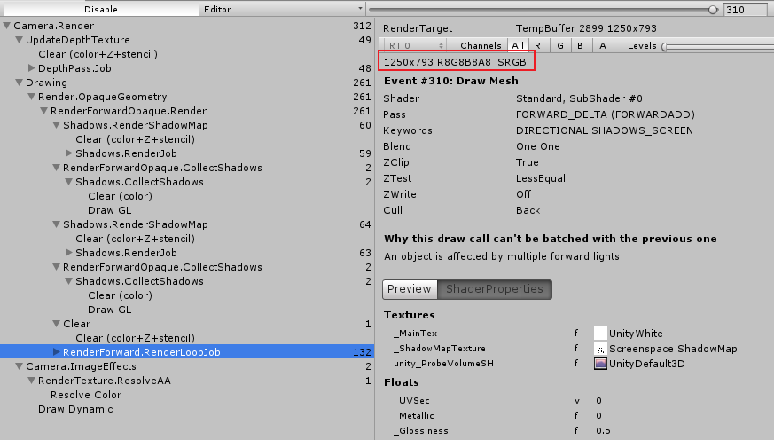
Mixing Rendering Modes
场景中一部分物体使用的 shader 不支持延迟渲染模式时，引擎会先执行延迟渲染，将支持延迟渲染的物体绘制出来，然后再执行前向渲染，将其他不支持延迟渲染的物体绘制出来。
Unity 的延迟渲染不支持半透明物体，半透明物体需要 Forward rendering 阶段来渲染(因为半透明物体意味着需要将半透明物体叠在其后面的物体上，每多一个半透物体重叠就额外需要一整套 GBuffer 来存储对应半透明物体的渲染数据)。
Support Deferred Path
创建 deferred pass
延迟渲染需要 GPU 支持 MRT(multiple render targets).
Pass { Tags { // 表示该Pass用于延迟渲染 "LightMode" = "Deferred" } CGPROGRAM #pragma target 3.0 // 如果GPU不支持MRT则排除当前Pass #pragma exclude_renderers nomrt // 延迟渲染不支持 _RENDERING_FADE和 _RENDERING_TRANSPARENT #pragma shader_feature _ _RENDERING_CUTOUT #pragma shader_feature _METALLIC_MAP #pragma shader_feature _ _SMOOTHNESS_ALBEDO _SMOOTHNESS_METALLIC #pragma shader_feature _NORMAL_MAP #pragma shader_feature _OCCLUSION_MAP #pragma shader_feature _EMISSION_MAP #pragma shader_feature _DETAIL_MASK #pragma shader_feature _DETAIL_ALBEDO_MAP #pragma shader_feature _DETAIL_NORMAL_MAP #pragma vertex MyVertexProgram #pragma fragment MyFragmentProgram #define DEFERRED_PASS #include "MyDeferred.cginc" ENDCG }
deferred pass frag output
struct FragmentOutput { // 延迟渲染需要将数据保存到多个RenderTarget #if defined(DEFERRED_PASS) float4 gBuffer0 : SV_Target0; float4 gBuffer1 : SV_Target1; float4 gBuffer2 : SV_Target2; float4 gBuffer3 : SV_Target3; #else float4 color : SV_Target; #endif };
gbufer0123
FragmentOutput output; #if defined(DEFERRED_PASS) #if !defined(UNITY_HDR_ON) color.rgb = exp2(-color.rgb); #endif // GBuffer0.rgb 记录albedo output.gBuffer0.rgb = albedo; // GBuffer0.a记录Occlusion output.gBuffer0.a = GetOcclusion(i); // GBuffer1.rgb 记录了 specularColor output.gBuffer1.rgb = specularTint; // GBuffer1.a 记录了Smoothness output.gBuffer1.a = GetSmoothness(i); // GBuffer2中记录了normal output.gBuffer2 = float4(i.normal * 0.5 + 0.5, 1); // GBuffer3中记录了Emissive 和 environment ambient，后续光照计算得到的颜色都会叠加到GBuffer3中 output.gBuffer3 = color; #else output.color = ApplyFog(color, i); #endif return output;
- 为什么自己写的 DeferredPass GBuffer0 中输出了高光颜色，GBuffer1 中颜色比较暗?
FrameDebug 发现 MetallicMap 的贴图使用了 Unity 的默认贴图，进一步检查发现 shader 属性列表中定义的属性名称和 shader 中使用的名称不一致。
support LDR
#if defined(DEFERRED_PASS) output.gBuffer0.rgb = albedo; output.gBuffer0.a = GetOcclusion(i); output.gBuffer1.rgb = specColor; output.gBuffer1.a = smoothness; output.gBuffer2 = float4(normal * 0.5 + 0.5, 1); #if !defined(UNITY_HDR_ON) col.rgb = exp2(-col.rgb); #endif output.gBuffer3 = col; #else //return indirect.specular.rgbr; output.color = col; #endif // DEFFERRED_PASS return output;
- Tone mapping 进化论 https://zhuanlan.zhihu.com/p/21983679
- Tone Mapping 与 Gamma Correction https://zhuanlan.zhihu.com/p/79203830
Deferred Reflections
Unity 内置的屏幕空间反射
延迟渲染时，反射球会被渲染，反射球被投影到和反射球体积有交叉的几何体上。因此，反射球的反射不会扩展到反射球体积之外。反射球的渲染类似于灯光的渲染，只是反射球是使用正方体渲染的。
多个反射球按照顺序渲染，首先 skybox 被渲染，会覆盖整个视图。然后，各个反射球被渲染，每个反射球只会覆盖其体积内的表面。多个反射球体积有重叠时，重叠区域内，先绘制的反射球会被后绘制的反射球覆盖。
默认情况下，体积大的反射球会先绘制，这样体积小的反射球就可以覆盖体积大的反射球。你可以通过修改反射球的 Importance 属性值来调整它的绘制顺序。

延迟渲染使用非屏幕空间反射
关闭延迟渲染的屏幕空间反射后，Unity 会采用前向渲染的方式计算反射，将反射效果写入 GBuffer3 中。
Fog
Forward Fog
在 LightSetting 可以设置雾相关的属性。
- ForwardPath 中为什么天空盒子不受雾效果的影响？
雾效果是在 Standard Shader 中的片段着色器中，对片段颜色进行修改来实现的。Unity 的天空盒并没有使用 Standard Shader 进行渲染，所以其不受雾影响。
Linear Fog
线性模式的雾可以设置雾生效的最小距离和最大距离。离摄像机距离小于最小距离时没有雾的效果，在最小距离到最大距离雾的效果逐渐增加到最大，大于最大距离时显示最大雾的效果（即物体完全呈现雾的颜色）
LinearFog 计算公式 \(f = \frac{fogEnd - fogCoor}{fogEnd-fogStart}\)
Exponential Fog
一次指数模式的雾。
ExponentialFog 计算公式 \(f = 2^{-fogCoor*fogDensity}\)
Exponential Squared Fog
二次指数模式的雾。
ExponentialSquaredFog 计算公式 \(f = 2^{-(fogCoor*fogDensity)^{2}}\)
Depth-Based Fog
Unity Shader 使用裁剪空间坐标的 w 分量作为 Fog Coordinate，裁剪空间坐标的 w 分量为投影变换前摄像机坐标系下坐标的 z 分量。这种计算雾的方式也称为基于深度的雾计算。
基于深度的雾计算比基于距离的雾计算效率更高。基于距离的雾比基于深度的雾效果要好，基于深度的雾在摄像机旋转视角时，雾效会变化。下图说明了其中的原理：


代码实现
- ApplyFog
v2f vert (appdata v) { v2f o; UNITY_INITIALIZE_OUTPUT(v2f, o); o.pos = UnityObjectToClipPos(v.vertex); o.uv.xy = TRANSFORM_TEX(v.uv, _MainTex); o.uv.zw = TRANSFORM_TEX(v.uv, _DetailTex); o.worldNormal = mul(v.normal, (float3x3)unity_WorldToObject); o.worldPos = mul(unity_ObjectToWorld, v.vertex); // 基于深度的雾 #if FOG_DEPTH // OpenGL clip space z range = [-near, far] o.worldPos.w = o.pos.z; #endif float3 tangentWorld = UnityObjectToWorldDir(v.tangent.xyz); float3x3 tangentToWorld = MCreateTangentToWorldPerVertex(o.worldNormal, tangentWorld, v.tangent.w); o.tangentToWorld[0] = tangentToWorld[0]; o.tangentToWorld[1] = tangentToWorld[1]; o.tangentToWorld[2] = tangentToWorld[2]; ComputeVertexLightColor(o); #if defined(UNITY_NO_SCREENSPACE_SHADOWS) TRANSFER_SHADOW(o); #else UNITY_TRANSFER_SHADOW(o, 0); #endif COMPUTE_LIGHT_COORDS(o); return o; } float4 ApplyFog(float color, v2f i) { float viewDistance = length(_WorldSpaceCameraPos - i.worldPos); #if FOG_DEPTH viewDistance = UNITY_Z_0_FAR_FROM_CLIPSPACE(i.worldPos.w); #endif UNITY_CALC_FOG_FACTOR_RAW(viewDistance); // 多光源支持 只需要对第一个光源叠加雾的颜色就可以了，其他光源只根据雾的强度进行减弱。 float3 fogColor = 0; #if defined(FORWARD_BASE_PASS) fogColor = unity_FogColor.rgb; #endif return lerp(fogColor, color, unityFogFactor); }
- UNITY_Z_0_FAR_FROM_CLIPSPACE(coord) 将 zclip space z value map to [0, far]
#if defined(UNITY_REVERSED_Z) #if UNITY_REVERSED_Z == 1 //D3d with reversed Z => z clip range is [near, 0] -> remapping to [0, far] //max is required to protect ourselves from near plane not being correct/meaningfull in case of oblique matrices. #define UNITY_Z_0_FAR_FROM_CLIPSPACE(coord) max(((1.0-(coord)/_ProjectionParams.y)*_ProjectionParams.z),0) #else //GL with reversed z => z clip range is [near, -far] -> should remap in theory but dont do it in practice to save some perf (range is close enough) #define UNITY_Z_0_FAR_FROM_CLIPSPACE(coord) max(-(coord), 0) #endif #elif UNITY_UV_STARTS_AT_TOP //D3d without reversed z => z clip range is [0, far] -> nothing to do #define UNITY_Z_0_FAR_FROM_CLIPSPACE(coord) (coord) #else //Opengl => z clip range is [-near, far] -> should remap in theory but dont do it in practice to save some perf (range is close enough) #define UNITY_Z_0_FAR_FROM_CLIPSPACE(coord) (coord) #endif
- 为什么此处不需要将 Z 值线性化？而从深度缓存区取出的深度值需要线性化？
ClipSpace 的 Z 值(OpenGL Clip Space Z Range=[-near,far])没有经过透视除法，所以其 Z 值本身就是线性的;
深度缓冲区中的 Z 值（Depth Buffer Z Range=[0, 1]）经过了透视除法，其值不是线性的(10%近处的场景占用了 0-0.9 范围的深度)。
- Depth Testing https://learnopengl.com/Advanced-OpenGL/Depth-testing
- linear Depth Buffer(线性深度缓冲区) https://www.cnblogs.com/pulas/archive/2012/02/07/2341462.html
- Depth Testing https://learnopengl.com/Advanced-OpenGL/Depth-testing
- 为什么此处不需要将 Z 值线性化？而从深度缓存区取出的深度值需要线性化？
- UNITY_CALC_FOG_FACTOR_RAW 实现了前面的计算公式
#if defined(FOG_LINEAR) // factor = (end-z)/(end-start) = z * (-1/(end-start))+(end/(end-start)) #define UNITY_CALC_FOG_FACTOR_RAW(coord) float unityFogFactor = \ (coord) * unity_FogParams.z + unity_FogParams.w #elif defined(FOG_EXP) // factor = exp(-density*z) #define UNITY_CALC_FOG_FACTOR_RAW(coord) float unityFogFactor = \ unity_FogParams.y * (coord); \ unityFogFactor = exp2(-unityFogFactor) #elif defined(FOG_EXP2) // factor = exp(-(density*z)^2) #define UNITY_CALC_FOG_FACTOR_RAW(coord) float unityFogFactor = \ unity_FogParams.x * (coord); \ unityFogFactor = exp2(-unityFogFactor*unityFogFactor) #else #define UNITY_CALC_FOG_FACTOR_RAW(coord) float unityFogFactor = 0.0 #endif // x = density / sqrt(ln(2)), useful for Exp2 mode // y = density / ln(2), useful for Exp mode // z = -1/(end-start), useful for Linear mode // w = end/(end-start), useful for Linear mode float4 unity_FogParams;
Deferred Fog
Shader Source Code
Shader "Custom/DeferredFog" { CGINCLUDE #include "UnityCG.cginc" sampler2D _MainTex; sampler2D _CameraDepthTexture; float3 _FrustumCorners[4]; struct VertexData { float4 vertex : POSITION; }; struct Interpolators { float4 pos : SV_POSITION; float2 uv : TEXCOORD0; #if defined(FOG_DISTANCE) float3 ray; #endif }; Interpolators VertexProgram (VertexData v) { Interpolators i; i.pos = float4(v.vertex.xy, 0.0, 1.0); // 直接通过三角形顶点坐标求的uv坐标 i.uv = (v.vertex + 1) * 0.5; #if UNITY_UV_STARTS_AT_TOP i.uv= i.uv * float2(1.0, -1.0) + float2(0.0, 1.0); #endif #if defined(FOG_DISTANCE) // 将 i.uv 映射为数组的索引值 i.ray = _FrustumCorners[i.uv.x+2*i.uv.y] #endif return i; } float4 FragmentProgram (Interpolators i) : SV_Target { float depth = SAMPLE_DEPTH_TEXTURE(_CameraDepthTexture, i.uv); depth = Linear01Depth(depth); // 为了和Forward Path中深度雾计算一直需要减掉near , 参考 UNITY_Z_0_FAR_FROM_CLIPSPACE 函数中的处理 // _ProjectionParams // x=1 or -1 y=near z=far w=1/far #if defined(FOG_DISTANCE) float viewDistance = length(depth * i.ray); #else float viewDistance = depth * _ProjectionParams.z - _ProjectionParams.y; #endif UNITY_CALC_FOG_FACTOR_RAW(viewDistance); unityFogFactor = saturate(unityFogFactor); // 天空盒深度值为1，通过下面判断，让雾不影响天空盒 if (depth > 0.9999) { unityFogFactor = 1; } float3 color = tex2D(_MainTex, i.uv).rgb; float3 foggedColor = lerp(unity_FogColor.rgb, color, unityFogFactor); return float4(foggedColor, 1); } ENDCG SubShader { Cull Off ZWrite Off ZTest Always Pass { CGPROGRAM #pragma vertex VertexProgram #pragma fragment FragmentProgram #pragma multi_compile_fog ENDCG } Pass { CGPROGRAM #define FOG_DISTANCE #pragma vertex VertexProgram #pragma fragment FragmentProgram #pragma multi_compile_fog ENDCG } } }
Depth-Based Fog
Distance Based Fog
从摄像机原点向远平面发射一条射线，如果从原点到远平面之间有物体，这射线最先接触的物体的交点到摄像机原点的距离就是我们要求的距离。
从摄像机原点 O 到远平面交点 F 的射线(向量 OF)和从原点 O 到最先接触物体的交点 I 的射线(向量 OI)之间的关系为 \(OF=depth*OI\) ,其中 depth 为交点 I 对应的深度值。
在 vertex shader 中设置每个顶点对应的 \(ray=\overrightarrow{OF}\) ,在 fragment shader 中就会得到各个像素对应的 OF 向量。
Deferred Lights
Light Shader
两个 Pass
DeferredShading 需要两个 Pass。第一个 Pass 执行光照计算，第二个 Pass 处理 LDR 模式下的颜色解码。
当 HDR 没开启时，光照数据是按照指数-对数运算编码解码的，前面的 DeferredShading 使用指数运算进行了编码，此时需要使用对数运算进行解码。
Avoiding the Sky
当 HDR 没有开启时，SceneView 中天空盒会显示不正确(Unity 2020.1.4f1 版本)，在第二个 Pass 中使用 StencilBuffer 作为 Mask，从而避免对数运算解码对天空盒对应的像素进行操作。
Pass { Cull Off ZTest Always ZWrite Off Stencil { Ref [_StencilNonBackground] ReadMask [_StencilNonBackground] CompBack Equal CompFront Equal } // ....... }
Directional Lights
使用正交投影矩阵渲染一个矩形。具体实现参考有道云笔记 Unity Source Code.md
读取 G-Buffer 数据使用的 UV
struct Interpolators { float4 pos : SV_POSITION; float4 uv : TEXCOORD0; }; Interpolators VertexProgram (VertexData v) { Interpolators i; i.pos = UnityObjectToClipPos(v.vertex); // 读取G-Buffer数据使用的UV i.uv = ComputeScreenPos(i.pos); return i; }
像素对应的世界坐标位置
从原始透视摄像机到近平面四个角的射线存储在绘制四边形的 normal 中。
struct VertexData { float4 vertex : POSITION; float3 normal : NORMAL; }; struct Interpolators { float4 pos : SV_POSITION; float4 uv : TEXCOORD0; float3 ray : TEXCOORD1; }; Interpolators VertexProgram (VertexData v) { Interpolators i; i.pos = UnityObjectToClipPos(v.vertex); i.uv = ComputeScreenPos(i.pos); i.ray = v.normal; return i; } fixed4 frag (v2f i) : SV_Target { float2 uv = i.uv.xy / i.uv.w; float depth = SAMPLE_DEPTH_TEXTURE(_CameraDepthTexture, uv); depth = Linear01Depth(depth); float3 rayToFarPlane = i.ray * _ProjectionParams.z / i.ray.z; float3 viewPos = rayToFarPlane * depth; // 求像素对应的世界坐标位置，unity_CameraToWorld矩阵为原始透视摄像机到世界空间的转换矩阵 float3 worldPos = mul(unity_CameraToWorld, float4(viewPos, 1)).xyz; // ...... }
Supporting LDR
HDR 模式下，DeferredShading 只需要一个 Pass，该 Pass 的 Blend 模式设置为 Blend One One。直接将光照效果叠在之前计算的 Emission 等之上。
LDR 模式下，DeferredShading 需要两个 Pass：
第一个 Pass 执行光照计算，计算所得的颜色为 exp2(-lightingResult)，该值需要和之前 GBuffer 存储的颜色 exp2(-emissionGBuffer)组合起来，因此其 Blend 模式设置为 Blend DstColor Zero。
第二个 Pass 对颜色进行解码，其 Blend 模式设置为 Blend One Zero。
Spotlights
因为方向光可以影响到所有的物体，因此通过绘制全屏的矩形来实现方向光照明。SpotLight 只会影响其锥形范围内的物体，通常不需要为整个屏幕像素计算 SpotLight，通过绘制一个包含了 SpotLight 的金字塔来实现 SpotLight 照明。
像素对应的世界坐标位置
unity_v2f_deferred vert_deferred (float4 vertex : POSITION, float3 normal : NORMAL) { unity_v2f_deferred o; o.pos = UnityObjectToClipPos(vertex); o.uv = ComputeScreenPos(o.pos); // 从透视摄像机原点到像素对应的顶点的射线 // TODO Unity Camera Space和OpenGL惯例相同，即Camera的forward方向为Z轴的负方向，因此，此处需要反向 // https://docs.unity3d.com/ScriptReference/Camera-worldToCameraMatrix.html o.ray = UnityObjectToViewPos(vertex) * float3(-1,-1,1); // normal contains a ray pointing from the camera to one of near plane's // corners in camera space when we are drawing a full screen quad. // Otherwise, when rendering 3D shapes, use the ray calculated here. o.ray = lerp(o.ray, normal, _LightAsQuad); return o; }
Q&A
为什么 DeferredShading 中 Directional 对应的顶点数据不是摄像机近平面四个角，或者是摄像机和四个角连线上的点？
参考有道云笔记 Unity Source Code.md，可以看出 Directional 对应的四边形的顶点 Position 数据为(0,0,nearPlane) (0,1,nearPlane) (1,1,nearPlane) (1,0,nearPlane)。绘制该矩形使用的矩阵为正交矩阵。这四个顶点经过正交矩阵变换后就是屏幕上 4 个角的点，nearPlane 对应 4 个角经过透视投影变换后也为屏幕上 4 个角的点。
为什么 DeferredShading 中片段着色器返回 0，依然可以渲染出物体？
DeferredShading 为了不覆盖之前 ColorBuffer 中的内容，其混合模式使用了 Blend One One, 所以当 DeferredShading 返回 0 时，其实显示的是之前绘制的内容。
为什么 Forward Path 和 Deferred Path 中计算 SpotLight Cookie 的方法不同？
// ForwardShading fixed UnitySpotCookie(float4 lightCoord) { // 此处uv需要偏移0.5 return tex2D(_LightTextureB, lightCoord.xy / lightCoord.w + 0.5).w; } // DeferredShading #if defined(SPOT) float4 uvCookie = mul(unity_WorldToLight, float4(worldPos, 1)); uvCookie.xy /= uvCookie.w; // 此处uv不需要偏移0.5 Unity在引擎层计算unity_WorldToLight时考虑了uv的偏移，此处就不需要进行计算了。 atten *= tex2Dbias(_LightTexture0, float4(uvCookie.xy, 0, -8)).w; atten *= uvCookie.w < 0; #if defined(SHADOWS_DEPTH) shadowed = true; sAtten = CalcSAtten(sFade, worldPos); #endif #else // ...... #endif
Static Lighting
Lightmapping 光照贴图
简介
计算光照是比较昂贵的开销。虽然延迟渲染允许我们使用很多灯光，但是阴影依然是一个限制因素。如果我们的场景是动态的，我们无法避免这些计算。但是如果灯光和场景不会改变，我们就可以计算一次灯光后重用它。这样我们就可以放置很多灯光在场景中，而不需要在运行时渲染这些灯光。我们也可以使用区域灯光，这种灯光只能在烘培光照贴图的情况下使用。
Unity 中使用光照贴图的步骤
- 把灯光的模式从 Realtime 切换为 Baked
灯光一共有三种模式
- Realtime 实时灯光
- Baked 烘培灯光
- Mixed 混合灯光(既用于实时光照计算，又用于烘培光照计算)
- Realtime 实时灯光
- 在 Lighting Setting 中勾选 Baked Global Illumination.设置 Lighting Mode 为 Baked Indirect
Lighting Mode 一共有三种模式
- 将场景中固定不变的物体标记为 Lightmap Static
MeshRenderer 组件的 Inspector 窗口中有一个 Lightmap Static 勾选框，其修改的就是 Lightmap Static 标记
当场景中只有 Baked 模式的灯光时，光照贴图提供的光照要比实时光照效果暗一些。这是因为烘培的光照贴图只有 diffuse 光照，没有 specular 光照。specular 光照依赖于视角，即 specular 和摄像机方向相关，通常来说摄像机是可变的，所以无法在光照贴图中包含摄像机相关信息。这种限制意味着，光照贴图适用于微弱的光照和不闪亮(黯淡)的表面，不适用于强烈的光照和闪耀的表面。如果你需要 specular 光照，你必须使用实时光照。所以通常你需要混合使用烘培和实时光照。
- Light=Baked LightingMode=BakedIndirect（LightingSetting 中 LightingMode=BakedIndirect，场景中的灯光使用 Baked 模式）
lightmapper 会将直接光和间接光都烘培到光照贴图中。此时，引擎向 shader 中传递的_LightColor0 值为(0,0,0,0)，所以实时调节灯光强度，不会有效果。
这种模式下，无论场景中有多少灯光，运行时，只渲染一次物体。此时场景中没有实时光，此时不需要渲染阴影贴图，观察到的阴影效果是光照贴图中的颜色信息造成的。
- Light=Mixed LightingMode=BakedIndirect（LightingSetting 中 LightingMode=BakedIndirect，场景中的灯光使用 Mixed 模式）
lightmapper 只会将间接光烘培到光照贴图中，所以该模式下的光照贴图比 Baked 模式下的要暗。此时，引擎会将正确的_LightColor0 传给 shader，所以实时调节灯光强度，会有效果（只会对直接光照有效果）。
此时场景中有实时光，此时需要渲染阴影贴图，并且静态物体和动态物体都需要绘制阴影贴图。
Lightmapping Settings
Lightmapper 有两种
- Enlighten
- Progressive 该方式会增量式生成 lightmaps，会优先生成当前 scene view 可见的物体的 lightmap，这对于编辑是比较方便的。
Directional Mode 有两种
- Directional Mode
- Non-Direction
Ambient Occlusion : 它是间接光照在角落和褶皱处的阴影。它是一种人为增强效果，可以提升深度感。Ambient Occlusion 单单基于表面的隐藏程度，其不会考虑光照的真实路径。所以，和自发光表面结合使用时，会有明显错误。
Indirect Light
烘培光照会考虑光照在多个表面的弹射，光子的每次弹射，都会损失一些能量，并且会被交互的材质修改颜色。Unity 在烘培间接光照时，都会考虑这些因素。
Transparency
对于单面透明物体，需要创建 Lightmap Parameters，将 IsTransparent 参数指定为 True，将 Lightmap Parameters 指定给单面透明物体。半透明物体会让间接光照通过，而不透明物体会阻挡间接光照。
使用光照贴图
// 当使用lightmaps后，unity 将不会包含顶点光照计算 #pragma multi_compile _ LIGHTMAP_ON VERTEXLIGHT_ON struct appdata { float4 vertex : POSITION; float2 uv : TEXCOORD0; float3 normal : NORMAL; float4 tangent: TANGENT; // lightmap uv float2 uv1 : TEXCOORD1; }; struct v2f { float4 uv : TEXCOORD0; float4 pos : SV_POSITION; float3 worldNormal : TEXCOORD1; float3 tangentToWorld[3] : TEXCOORD2; float3 worldPos : TEXCOORD5; UNITY_SHADOW_COORDS(6) DECLARE_LIGHT_COORDS(7) #ifdef VERTEXLIGHT_ON float3 vertexLightColor : TEXCOORD8; #elif defined(LIGHTMAP_ON) // lightmapUV float2 lightmapUV : TEXCOORD8; #endif }; v2f vert (appdata v) { v2f o; UNITY_INITIALIZE_OUTPUT(v2f, o); // ...... #if defined(LIGHTMAP_ON) // 因为 lightmap的transformation没有被定义为unity_Lightmap_ST，所以无法使用TRANSFORM_TEX宏 o.lightmapUV = v.uv1 * unity_LightmapST.xy + unity_LightmapST.zw; #endif return o; } UnityIndirect CreateIndirectLight (Interpolators i, float3 viewDir) { // ...... #if defined(VERTEXLIGHT_ON) indirectLight.diffuse = i.vertexLightColor; #endif #if defined(FORWARD_BASE_PASS) || defined(DEFERRED_PASS) #if defined(LIGHTMAP_ON) // lightmap 和顶点光照不会同时出现 indirectLight.diffuse = 0; // DecodeLightmap 会处理光照贴图不同格式 indirectLight.diffuse = DecodeLightmap(UNITY_SAMPLE_TEX2D(unity_Lightmap, i.lightmapUV)); #else indirectLight.diffuse += max(0, ShadeSH9(float4(i.normal, 1))); #endif // ...... #endif return indirectLight; }
创建光照贴图
lightmapper 默认规则
lightmapper 不会使用实时渲染管线，所以它并不会使用我们的自己的 shader 来渲染 lightmap。
lightmapper 会通过材质的 RenderType 来决定怎样对待物体表面:
- RenderType="Opaque" 不透明物体
- RenderType="Transparent" 半透明物体
- RenderType="TransparentCutout" 透贴型物体
当没有贴图时，lightmapper 会通过材质的_Color 属性值的 a 分量来确定透明度，所以不能使用_MainColor _Tint 等属性名
当有贴图时，lightmapper 会通过材质的_MainTex 贴图的 a 分量来确定透明度，所以不能使用_DiffuseTex _Albedo 等属性名
lightmapper 会通过材质的 _Cutoff 属性值，作为透贴门槛值，所以不能使用_AlphaCutoff 等属性名
通过 Meta Pass 将 Albedo 和 Emission 传递给 lightmapper
Pass { Name "META-MyLightmapping" Tags { // LightMode 必须为 Meta "LightMode"="Meta" } Cull Off CGPROGRAM #include "MyStaticLighting_Lightmapping.cginc" //#include "MyStaticLighting_Lightmapping_Test.cginc" #pragma vertex vert #pragma fragment frag #pragma shader_feature _EMISSION #pragma shader_feature _METALLICMAP_ON #pragma shader_feature _SMOOTHNESSMAP_ALBEDO _SMOOTHNESSMAP_METALLIC #pragma shader_feature _ALBEDODETAIL_ON ENDCG } #ifndef MY_STATICLIGHTING_LIGHTMAPPING #define MY_STATICLIGHTING_LIGHTMAPPING #include "UnityPBSLighting.cginc" #include "UnityMetaPass.cginc" struct appdata { float4 vertex : POSITION; float2 uv : TEXCOORD0; float2 uv1 : TEXCOORD1; }; struct v2f { float4 pos : SV_POSITION; float4 uv : TEXCOORD0; }; //#define _MainTex _MainTexM //#define _MainTex_ST _MainTexM_ST float4 _Color; sampler2D _MainTex; float4 _MainTex_ST; float _Cutoff; sampler2D _DetailTex; float4 _DetailTex_ST; sampler2D _DetailMask; float3 _EmissionColor; sampler2D _EmissiveMap; fixed _Smoothness; fixed _Metallic; sampler2D _MetallicSmoothnessMap; v2f vert(appdata v) { v2f o; UNITY_INITIALIZE_OUTPUT(v2f, o); o.pos = UnityMetaVertexPosition(v.vertex, v.uv1.xy, v.uv1.xy, unity_LightmapST, unity_LightmapST); //v.vertex.xy = v.uv1 * unity_LightmapST.xy + unity_LightmapST.zw; //v.vertex.z = v.vertex.z > 0 ? 0.0001 : 0; //o.pos = UnityObjectToClipPos(v.vertex); o.uv.xy = TRANSFORM_TEX(v.uv, _MainTex); o.uv.zw = TRANSFORM_TEX(v.uv, _DetailTex); return o; } float GetAlpha(v2f i) { return tex2D(_MainTex, i.uv.xy).a * _Color.a; } float GetDetailMask(v2f i) { return tex2D(_DetailMask, i.uv.zw); } float3 GetAlbedo(v2f i) { float3 albedo = tex2D(_MainTex, i.uv.xy); albedo *= _Color; #if defined(_ALBEDODETAIL_ON) float3 detailAlbedo = tex2D(_DetailTex, i.uv.zw); albedo = lerp(albedo, albedo*detailAlbedo*unity_ColorSpaceDouble, GetDetailMask(i)); #endif return albedo; } float3 GetEmissive(v2f i) { float3 emissive = 0; #if defined(_EMISSION) emissive = tex2D(_EmissiveMap, i.uv); if (dot(emissive, emissive) < 0.001) { emissive = _EmissionColor; } else { emissive = emissive * _EmissionColor; } #endif return emissive; } float GetMetallic(v2f i) { #if defined(_METALLICMAP_ON) return tex2D(_MetallicSmoothnessMap, i.uv.xy).r * _Metallic; #else return _Metallic; #endif } float GetSmoothness(v2f i) { #if defined(_SMOOTHNESSMAP_METALLIC) && defined(_METALLICMAP_ON) return tex2D(_MetallicSmoothnessMap, i.uv.xy).a * _Smoothness; #elif defined(_SMOOTHNESSMAP_ALBEDO) return tex2D(_MainTex, i.uv.xy).a * _Smoothness; #else return _Smoothness; #endif } float4 frag(v2f i) : SV_TARGET { UnityMetaInput o; //o.Emission = float3(0, 0, 1); o.Emission = GetEmissive(i); //o.Albedo = float3(1, 0, 0); float oneMinusReflectivity; o.Albedo = DiffuseAndSpecularFromMetallic(GetAlbedo(i), GetMetallic(i), o.SpecularColor, oneMinusReflectivity); // 越粗糙的表面提供的间接光照会越多, 越粗糙的表面会越多反射Specular光照出去 float roughness = SmoothnessToRoughness(GetSmoothness(i)) * 0.5; o.Albedo += o.SpecularColor * roughness; //o.Albedo = GetAlbedo(i); o.SpecularColor = 0; return UnityMetaFragment(o); } #endif
Directional Lightmaps 具有方向的光照贴图
简介
lightmapper 只使用了顶点的几何数据，它没有考虑法线贴图数据。光照贴图的精度太低了，无法捕捉到传统法线贴图提供的细节。这意味着静态光照将会比较平。

上面两张图是，使用法线贴图的情况下，实时光照和烘培光照的效果对比。可以看到在烘培光照中，法线贴图的影响几乎没有，画面中微弱的法线效果来自环境反射。
方向性
将 Directional Mode 设置为 Directional，就可以让法线贴图和烘培的光照协同工作。 在 Lighting/Lightmapping Settings/DirecionalMode 中，可以设置 Directional Mode = Directional。
Directional Mode=Directional 时，unity 会生成两张光照贴图，一张就像之前一样的光照强度贴图，用于存储光照强度。新的另一张为光照方向贴图，用于存储最多的烘培光照的来源方向。
下图为 NonDirectional 和 Directional 模式的对比：
使用烘培的方向贴图
// 开启烘培方向贴图的宏定义 #pragma multi_compile _ DIRLIGHTMAP_COMBINED UnityIndirect CreateIndirect(v2f i, half3 viewDir, float smoothness) { float occlusion = GetOcclusion(i); UnityIndirect indirect; #ifdef VERTEXLIGHT_ON indirect.diffuse = i.vertexLightColor; #else indirect.diffuse = 0; #endif indirect.specular = 0; #if defined(FORWARD_BASE_PASS) || defined(DEFFERRED_PASS) #if defined(LIGHTMAP_ON) //indirect.diffuse = UNITY_SAMPLE_TEX2D(unity_Lightmap, i.lightmapUV); indirect.diffuse = DecodeLightmap(UNITY_SAMPLE_TEX2D(unity_Lightmap, i.lightmapUV)); #if defined(DIRLIGHTMAP_COMBINED) // 采样烘培的方向贴图 float4 lightmapDir = UNITY_SAMPLE_TEX2D_SAMPLER(unity_LightmapInd, unity_Lightmap,i.lightmapUV); // 使用Half Lambert计算Diffuse indirect.diffuse = DecodeDirectionalLightmap(indirect.diffuse, lightmapDir, GetNormal(i)); #endif #else // 叠加环境光 indirect.diffuse += max(0, ShadeSH9(half4(i.worldNormal, 1))); #endif // ...... #endif return indirect; } inline half3 DecodeDirectionalLightmap (half3 color, fixed4 dirTex, half3 normalWorld) { // In directional (non-specular) mode Enlighten bakes dominant light // direction in a way, that using it for half Lambert and then dividing // by a "rebalancing coefficient" gives a result close to plain diffuse // response lightmaps, but normalmapped. // Note that dir is not unit length on purpose. Its length is // "directionality", like for the directional specular lightmaps. half halfLambert = dot(normalWorld, dirTex.xyz - 0.5) + 0.5; return color * halfLambert / max(1e-4h, dirTex.w); }
Light Probes
Lightmaps 只对静态物体起作用，对动态物体不起作用。这会导致动态物体无法融入烘培光照的场景。Unity 使用 LightProbe 来存储其所在点的烘培光照信息，LightProbe 没有使用贴图存储光照信息，其使用 Spherical Harmonics 存储这些信息。
场景中的动态物体会使用 LightProbe 存储的烘培光照信息来取代全局的环境数据。
为什么 SceneView 中不显示 LightProbe？
SceneView 下 Gizmos/3D Icon 被缩放到最小了。
为什么 LightProb 对于动态物体不生效？
两个 LightProb 是无作用的，需要让 LightProbe 形成网才能生效。
Q&A
使用 lightmap 时，顶点着色器中传入的 lightmap uv 是如何求得的？又是如何传入顶点着色器的？
- 关于 3D 模型的二套 UV https://zhuanlan.zhihu.com/p/83322397
什么错误导致 lightmap 中不包含 Emission 颜色？
- 缺乏 Meta Pass
Meta Pass 的 Fragment 没有按照如下方式输出
float4 frag (v2f i) : SV_TARGET { UnityMetaInput surfaceData; surfaceData.Emission = GetEmissive(i); surfaceData.Albedo = GetAlbedo(i); surfaceData.SpecularColor = 0; return UnityMetaFragment(surfaceData); }
- 材质的 MaterialGlobalIlluminationFlags 没设置为 BakedEmissive
vertex 着色器函数中输出的 SV_POSITION 不正确
v2f_meta vert_test(VertexInput v) { v2f_meta o; //o.pos = UnityObjectToClipPos(v.vertex); // 这样计算得出的pos是错误的。 o.pos = UnityMetaVertexPosition(v.vertex, v.uv1.xy, v.uv2.xy, unity_LightmapST, unity_DynamicLightmapST); o.uv = TexCoords(v); return o; }
- unity lightmap 数据清除有 bug，清除 lightmap 后，隐藏一个物体，再烘培，检查数据是否正确。
lightmap 缓存极其不稳定，有时候隐藏了烘培依然不可以，需要隐藏一个其他物体再来一次。 frag 着色器的 out 标记 SV_TARGET 是否全部使用大写SV_Target 也是可以的
Deferred Path 模式下，FrameDebug 中发现没有设置 unity_Lightmap unity_LightmapInd 参数
宏定义写错了 DEFERRED_PASS 写成了 DEFFERRED_PASS。导致采样 unity_Lightmap unity_LightmapInd 的代码没有执行到，所以引擎没将图片传给 GPU。
Mixed Lighting
烘培光照贴图的优缺点
缺点
- 无法烘培高光
- 烘培光照只能通过 LightProbe 对动态物体产生影响
- 烘培光照无法生成实时阴影
优点
- 烘培光照包含间接光照，实时光照不包含间接光照。间接光照可以极大提升场景的真实感。
Baking Indirect Light
实时光照和烘培光照各有优缺点，通过下面方式可以将实时光照和烘培光照结合使用。
- Lighting/Mixed Lighting/Lighting Mode 设置为 Baked Indirect
- 场景中 Light 组件 Mode 选择 Mixed
这样设置时，烘培光照贴图时会发生两个变化：
- lightmapper 只会将间接光照存储到光照贴图中，所以此时的光照贴图比之前要暗一些。
- lightmap 只用于为静态物体提供间接光照，静态物体的直接光照也由场景中灯光实时提供；动态物体间接光由 light probe 提供，直接光照由场景中灯光实时提供。
注意:
在上面的设置下，静态物体也需要实时画阴影贴图。这种模式相当于实时光照的工作再加上光照贴图实现的间接光照，所以这种模式是比较消耗性能的。
Using a Shadowmask
- Lighting/Mixed Lighting/Lighting Mode 设置为 Shadowmask
- 场景中 Light 组件 Mode 选择 Baked
这样设置时，并不会生产 shadowmask，此时相当于完全烘培 （相当于 Light=Baked LightingMode=BakedIndirect 设置下的烘培）。
- Lighting/Mixed Lighting/Lighting Mode 设置为 Shadowmask
- 场景中 Light 组件 Mode 选择 Mixed
这样设置时，间接光照和 mixed lights 的阴影 attenuation 都会存储到光照贴图中，阴影会存储到单独的一张 shadowmask 贴图中。
如果只有 1 盏灯那么 shadowmask 只会占 r 通道，shadowmask 最多 4 个通道，所以最多可以支持 4 盏灯。
这种模式比 MixedLight+BakedIndirect 的优势在于静态物体不需要实时画阴影。
Sampling the Shadowmask
float GetShadowFade(v2f i, float atten) { #if HANDLE_SHADOWS_BLENDING_IN_GI float viewZ = dot(_WorldSpaceCameraPos - i.worldPos, UNITY_MATRIX_V[2].xyz); float shadowFadeDistance = UnityComputeShadowFadeDistance(i.worldPos, viewZ); float sFade = UnityComputeShadowFade(shadowFadeDistance); float bakedAtten = UnitySampleBakedOcclusion(i.lightmapUV, i.worldPos); return UnityMixRealtimeAndBakedShadows(atten, bakedAtten, sFade); #else return atten; #endif } // unity_OcclusionMaskSelector 该向量只有一个分量会被设置为1，用于匹配当前被渲染的灯光 fixed UnitySampleBakedOcclusion (float2 lightmapUV, float3 worldPos) { #if defined (SHADOWS_SHADOWMASK) #if defined(LIGHTMAP_ON) fixed4 rawOcclusionMask = UNITY_SAMPLE_TEX2D_SAMPLER(unity_ShadowMask, unity_Lightmap, lightmapUV.xy); #else fixed4 rawOcclusionMask = UNITY_SAMPLE_TEX2D(unity_ShadowMask, lightmapUV.xy); #endif return saturate(dot(rawOcclusionMask, unity_OcclusionMaskSelector)); #else return 1.0; #endif } inline half UnityMixRealtimeAndBakedShadows (half realtimeShadowAttenuation, half bakedShadowAttenuation, half fade) { // 无实动态阴影时，直接使用烘培的attenuation #if !defined(SHADOWS_DEPTH) && !defined(SHADOWS_SCREEN) && !defined(SHADOWS_CUBE) return bakedShadowAttenuation; #endif #if defined (SHADOWS_SHADOWMASK) #if defined (LIGHTMAP_SHADOW_MIXING) realtimeShadowAttenuation = saturate(realtimeShadowAttenuation + fade); return min(realtimeShadowAttenuation, bakedShadowAttenuation); #else // shadowFadeDistance范围内，使用sFadeFactor在实时阴影和烘培阴影之间插值 // 超出shadowFadeDistance后，直接使用烘培的attenuation return lerp(realtimeShadowAttenuation, bakedShadowAttenuation, fade); #endif #else //no shadowmask 没有使用shadowmask时，使用实时阴影atten+shadowFadeFactor return saturate(realtimeShadowAttenuation + fade); #endif }
Support Deferred Path
DeferredShading 中将 ShadowMask 写入到 GBuffer4 中
DeferredLighting 中读取 GBuffer4 内容，对直接光照进行衰减
// DeferredShading (MixedLighting.shader) struct frag_output { #if defined(DEFERRED_PASS) float4 gBuffer0 : SV_Target0; float4 gBuffer1 : SV_Target1; float4 gBuffer2 : SV_Target2; float4 gBuffer3 : SV_Target3; #if defined(SHADOWS_SHADOWMASK) && (UNITY_ALLOWED_MRT_COUNT>4) float4 gBuffer4 : SV_Target4; #endif #else float4 color : SV_Target; #endif }; frag_output frag (v2f i) { frag_output output; // ...... #if defined(SHADOWS_SHADOWSMASK) && (UNITY_ALLOWED_MRT_COUNT>4) float2 shadowUV = 0; #if defined(LIGHTMAP_ON) shadowUV = i.lightmapUV; #endif output.gBuffer4 = UnityGetRawBakedOcclusions(shadowUV, i.worldPos.xyz); #endif } // DeferredLighting (MixedLighting_DeferredLighting.shader) float GetShadowMaskAttenuation(float2 uv) { float atten = 1; #if defined(SHADOWS_SHADOWMASK) float4 mask = tex2D(_CameraGBufferTexture4, uv); atten = saturate(dot(mask, unity_OcclusionMaskSelector)); #endif return atten; } UnityLight CreateLight(float2 uv, float3 worldPos, float viewZ) { UnityLight light; float atten = 1; float sAtten = 1; float sFade = GetShadowFade(worldPos, viewZ); bool shadowed = false; // ...... #if defined(SHADOWS_SHADOWMASK) shadowed = true; #endif if (shadowed) { float smAtten = GetShadowMaskAttenuation(uv); sAtten = UnityMixRealtimeAndBakedShadows(sAtten, smAtten, sFade); //sAtten = saturate(sAtten + sFade); #if defined(UNITY_FAST_COHERENT_DYNAMIC_BRANCHING) && defined(SHADOWS_SOFT) #if !defined(SHADOWS_SHADOWMASK) UNITY_BRANCH if (sFade > 0.99) { sAtten = 1; } #endif #endif } light.color = _LightColor.rgb * atten * sAtten; return light; }
Distance Shadowmask Mode
Unity2017 版本之前 Distance Shadowmask 在 Lighting Setting 中设置，Unity2017 版本以及之后版本在 QualitySettings 中设置。
注意：
这种模式下，ShadowDistance 外使用 ShadowMask（相当于 ShadowMask 模式），ShadowDistance 内使用实时阴影（相当于 MixedLight+BakedIndirect，静态物体和动态物体都需要绘制阴影贴图，所以这种模式也是比较消耗性能的）。
Multiple Lights
//ForwardAdd Pass 添加如下代码，UNITY_LIGHT_ATTENUATION 就可以正确工作了 #pragma multi_compile _ SHADOWS_SHADOWMASK
Subtractive Shadows
简介
Subtractive mode 只适用于 forward path。Subtractive Mode 的理念是静态物体依然通过 lightmaps 照亮，并且同时将动态物体的阴影因素考虑进去，这是通过减低阴影区域光照贴图的亮度来实现的。这种方式不生成 Shadow Mask 贴图。
Subtractive mode 只适用于一个方向光，因此只支持主方向光的阴影。
Light Mode 为 Mixed，三种 Lighting Mode（BakedIndirect ShadowMask Subtractive）对应的 Lightmap 贴图的对比如下（由烘培 16StaticLighting_Unity 场景生成）：
Light Mode 为 Mixed，三种 Lighting Mode（BakedIndirect ShadowMask Subtractive）对应的生成阴影贴图的 drawcall：
注意： LightMode 为 Mixed，Lighting Mode 为 BakedIndirect 时，静态物体依然会绘制阴影。
实现
#if defined(LIGHTMAP_ON) && defined(SHADOWS_SCREEN) #if defined(LIGHTMAP_SHADOW_MIXING) && !defined(SHADOWS_SHADOWMASK) #define SUBTRACTIVE_LIGHTING 1 #endif #endif UnityLight CreateLight (Interpolators i) { UnityLight light; // Subtractive模式下，静态物体的直接光照都被烘培到lightmap中了，不需要计算直接光照 #if defined(DEFERRED_PASS) || SUBTRACTIVE_LIGHTING light.dir = float3(0, 1, 0); light.color = 0; #else // ...... #endif return light; } // Unity实现中对应的函数为：SubtractMainLightWithRealtimeAttenuationFromLightmap void ApplySubtractiveLighting(v2f i, inout UnityIndirect indirect) { #if SUBTRACTIVE_LIGHTING UNITY_LIGHT_ATTENUATION(attenuation, i, i.worldPos.xyz); attenuation = GetShadowFade(i, attenuation); //float ndotl = 1; //使用顶点属性插值得到的normal计算所得的阴影非常淡 发现是因为没有对插值后的normal进行单位化导致的。 //float ndotl = saturate(dot(i.worldNormal, _WorldSpaceLightPos0.xyz)); float ndotl = saturate(dot(normalize(i.worldNormal), _WorldSpaceLightPos0.xyz)); float3 needMinusLight = ndotl * _LightColor0.rgb * (1 - attenuation); float3 subtractedLight = indirect.diffuse - needMinusLight; subtractedLight = max(subtractedLight, unity_ShadowColor.rgb); // 支持ShadowStrength subtractedLight = lerp(subtractedLight, indirect.diffuse, _LightShadowData.x); // 静态物体上烘培的阴影也会显示unity_ShadowColor.rgb颜色 //indirect.diffuse = indirect.diffuse; // 只修改动态物体在静态物体上投射的阴影 indirect.diffuse = min(subtractedLight, indirect.diffuse); #endif }
总结
| Realtime | Baked | Mixed | |
|---|---|---|---|
| BakedIndirect - Dynamic Object | |||
| BakedIndirect - Static Object | |||
| Shadowmask | |||
| DistanceShadowmask | |||
| Subtractive |
Q&A
TODO 如果烘培灯光和实时灯光分开，烘培灯光的 Mode 使用 Baked，实时灯光的 Mode 使用 Realtime，这样做是否合理？
这样做是不正确的。
烘培灯光的情况下，如何解决静态物体无法在动态的物体上投影的问题？
LightMode 为 Mixed，LightingMode 为 BakedIndirect，ShadowDistance 范围内的静态物体也会绘制阴影贴图，从而可以解决该问题。
LightMode 为 Mixed，LightingMode 为 ShadowMask，ShadowMask Mode 为 Distance ShadowMask 的情况下，ShadowDistance 范围内的静态物体也会绘制阴影贴图，从而可以解决该问题。
LightMode 为 Mixed，LightingMode 为 ShadowMask，ShadowMask Mode 为 ShadowMask 的情况下，静态物体不会绘制阴影贴图，因此静态物体不会在动态物体上投影。
LightMode 为 Mixed，LightingMode 为 Substractive 的情况下，静态物体不会绘制阴影贴图，因此静态物体不会在动态物体上投影。
ERROR: Deferred Path 模式下，点击 Generate Lighting 没有烘培出光照贴图
关闭 Unity，重新打开，可以解决该问题。
Deferred Path 模式下的间接光照计算是怎样的？
indirect.diffuse DeferredPath 和 ForwardPath 计算相同，会将结果直接写入 GBuffer3 中。
indirect.specular 的计算则分是否开启屏幕空间反射，不开启时，DeferredPath 和 ForwardPath 计算相同，会将结果直接写入 GBuffer3 中。开启时，则在屏幕空间反射时计算。
Error: 阴影轮廓处有光晕
经过检查发现是计算 Normal 时有错误，在下面代码的注释中有具体说明
float3 GetNormal(v2f i) { float3 normal = float3(0, 1, 0); #if defined(_NORMAL_ON) normal.xy = tex2D(_NormalMap, i.uv).wy * 2 - 1; normal.xy *= _BumpScale; normal.z = sqrt(1 - saturate(dot(normal.xy, normal.xy))); normal = normal.xzy; #endif #if defined(_NORMALDETAIL_ON) float3 detailNormal; detailNormal.xy = tex2D(_DetailNormal, i.uv).wy * 2 - 1; detailNormal.xy *= _BumpScale; detailNormal.z = sqrt(1 - saturate(dot(detailNormal.xy, detailNormal.xy))); detailNormal = lerp(float3(0,1,0), detailNormal.xzy, GetDetailMask(i)); normal.x = normal.x + detailNormal.x; normal.y = normal.y * detailNormal.y; normal.z = normal.z + detailNormal.z; #endif normal = normalize(normal); #define __CALC_WORLDSPACE_NORMAL #if defined(__CALC_WORLDSPACE_NORMAL) float3 wTangent = i.tangentToWorld[0]; float3 wBinormal = i.tangentToWorld[1]; float3 wNormal = i.tangentToWorld[2]; // 上面代码已经将normal向上的分量从z换到了y，所以这里和wNormal相乘的应该时normal的y分量 // normal = normalize(wTangent*normal.x + wBinormal*normal.y + wNormal*normal.z); normal = normalize(wTangent*normal.x + wNormal*normal.y + wBinormal*normal.z); #endif return normal; }
Error: Subtractive 模式下动态物体的阴影很淡
void ApplySubtractiveLighting(v2f i, inout UnityIndirect indirect) { #if SUBTRACTIVE_LIGHTING UNITY_LIGHT_ATTENUATION(attenuation, i, i.worldPos.xyz); attenuation = GetShadowFade(i, attenuation); // 使用顶点属性插值得到的normal计算所得的阴影非常淡 发现是因为没有对插值后的normal进行单位化导致的。 //float ndotl = saturate(dot(i.worldNormal, _WorldSpaceLightPos0.xyz)); float ndotl = saturate(dot(normalize(i.worldNormal), _WorldSpaceLightPos0.xyz)); float3 needMinusLight = ndotl * _LightColor0.rgb * (1 - attenuation); float3 subtractedLight = indirect.diffuse - needMinusLight; indirect.diffuse = max(subtractedLight, unity_ShadowColor.rgb); #endif }
RealtimeGI ProbeVolumes LOD Groups
Realtime Globall Illumination
简介
烘培光照虽然对静态几何体(通过光照贴图)和动态几何体(通过光照探针)起作用，但是烘培光照无法处理动态光照(Realtime Mode Light)。Mixed Mode Light 可以实时调节一些参数，但是过多的调整会让没有改变的烘培间接光照变得很明显。所以，当你有一个室外的场景时，太阳是不能改变的，它不能像真实生活中一样东升西落在空中穿行，因为这需要不断改变全局照明，所以只能让场景冻结在某个时间点上。
为了让间接光照支持光照方向的实时改变，Unity 使用 Enlighten 系统来计算实时全局照明。其就像烘培间接光一样工作，不同的是 Enlighten 是在运行时计算光照贴图和光照探针的。
计算间接光需要知道光照在静态表面之间是如何弹射的，也就是需要知道哪些表面有可能会被哪些表面在哪些角度上产生影响。计算出这些关系需要很多工作，不可能在运行时完成。所以，这些数据是由编辑器计算并存储起来，运行时 Enlighten 会利用这些数据来计算光照贴图和光照探针。即使如此，实时全局照明也适用于低分辨率的光照贴图。
注意：无论是 RealtimeGI 的光照贴图，还是 BakedGI 的光照贴图，只有标记为 Lightmap 静态的物体，才会使用烘培的光照贴图。而动态的物体则使用烘培的 LightProbe 数据。
Baking Realtime GI
Realtime GI 使用自己的 lightmap 坐标，Unity 会基于光照贴图和物体的设置自动生成这些 UV 坐标，这些 UV 坐标值被存储到 Mesh 的第三套 UV 通道。
v2f vert(appdata v) { v2f o; UNITY_INITIALIZE_OUTPUT(v2f, o); // unity_LightmapST 是烘培光照贴图UV的偏移和缩放 // unity_DynamicLightmapST是动态光照贴图UV的偏移和缩放 o.pos = UnityMetaVertexPosition(v.vertex, v.uv1.xy, v.uv2.xy, unity_LightmapST, unity_DynamicLightmapST); o.uv.xy = TRANSFORM_TEX(v.uv, _MainTex); o.uv.zw = TRANSFORM_TEX(v.uv, _DetailTex); return o; } float4 UnityMetaVertexPosition (float4 vertex, float2 uv1, float2 uv2, float4 lightmapST, float4 dynlightmapST) { // 通过unity_MetaVertexControl来控制当前操作的是烘培光照GI还是动态光照GI if (unity_MetaVertexControl.x) { vertex.xy = uv1 * lightmapST.xy + lightmapST.zw; // OpenGL right now needs to actually use incoming vertex position, // so use it in a very dummy way vertex.z = vertex.z > 0 ? 1.0e-4f : 0.0f; } if (unity_MetaVertexControl.y) { vertex.xy = uv2 * dynlightmapST.xy + dynlightmapST.zw; // OpenGL right now needs to actually use incoming vertex position, // so use it in a very dummy way vertex.z = vertex.z > 0 ? 1.0e-4f : 0.0f; } return UnityObjectToClipPos(vertex); }
注意：
烘培光照贴图和实时光照贴图都会用到 meta pass。所以当开启实时 GI 时，在打包的时候 meta pass 也会被包含进去。
Sampling Realtime Lightmaps
所有的实时灯光都会对实时 GI 有贡献。但是，典型的用法是，只将主方向光作用于实时 GI，因为主方向光代表着太阳，其会在天空中移动。实时 GI 的所有功能对方向光都是有效的，实时 GI 不支持点光源和 SpotLight 的阴影。因此，当使用会投影的点光源和 SpotLight 时，最终会得到不正确的间接光照。
如果你想将某个实时光从实时 GI 中排除，只需要将该灯光的 IndirectMultiplier 设置为 0。
UnityIndirect CreateIndirect(v2f i, half3 viewDir, float smoothness) { float occlusion = GetOcclusion(i); UnityIndirect indirect; // ...... #if defined(DYNAMICLIGHTMAP_ON) // 动态Lightmap使用了和静态Lightmap不同的颜色格式，需要不同的解码 float3 dynamicLightDiffuse = DecodeRealtimeLightmap(UNITY_SAMPLE_TEX2D(unity_DynamicLightmap, i.dynamicLightmapUV)); #if defined(DIRLIGHTMAP_COMBINED) float4 dynamicLightmapDir = UNITY_SAMPLE_TEX2D_SAMPLER(unity_DynamicDirectionality, unity_DynamicLightmap,i.dynamicLightmapUV); indirect.diffuse += DecodeDirectionalLightmap(dynamicLightDiffuse, dynamicLightmapDir, GetNormal(i)); #else indirect.diffuse += dynamicLightDiffuse; #endif #endif #if !defined(LIGHTMAP_ON) && !defined(DYNAMICLIGHTMAP_ON) // 叠加环境光 indirect.diffuse += max(0, ShadeSH9(half4(i.worldNormal, 1))); #endif // ....... }
Emissive Light
public class EmissiveOscillator : MonoBehaviour { Renderer r; Material mat; void Start() { r = GetComponent<Renderer>(); mat = r.material; } void Update() { Color c = Color.Lerp(Color.white, Color.black, Mathf.Sin(Time.time * Mathf.PI) * 0.5f + 0.5f); mat.SetColor("_EmissionColor", c); // 更新实时GI // 下面代码会触发使用MetaPass渲染物体，将EmissionColor传递给Enlighten //r.UpdateGIMaterials(); // 下面代码不会触发MetaPass渲染物体，只是直接将EmissionColor传递给Enlighten DynamicGI.SetEmissive(r, c); } }
Light Probe Proxy Volumes
烘培 GI 和实时 GI 都是通过 LightProbe 作用于动态物体的。物体的位置用于插值 LightProbe 数据，插值得到的数据再应用于 GI。这对于小物体来说是可行的，但是对于大物体来说就太粗暴了。
LLPV（light probe proxy volume）可以解决该问题。其会传递给 shader 一组经过插值的 LightProbe 数据，而不是一个。这些数据会存储到一张浮点型 3D 贴图中，且该贴图需要支持线性过滤模式，只有现代图形显卡才能支持。
在 Graphics/TierSettings/EnableLightProbeProxyVolume 中开启 LightProbeProxyVolume。
#if !defined(LIGHTMAP_ON) && !defined(DYNAMICLIGHTMAP_ON) #if UNITY_LIGHT_PROBE_PROXY_VOLUME if (unity_ProbeVolumeParams.x == 1) { // Light Probe Proxy Volume 只使用了两个基带 indirect.diffuse = SHEvalLinearL0L1_SampleProbeVolume(float4(i.worldNormal, 1), i.worldPos); indirect.diffuse = max(0, indirect.diffuse); #if defined(UNITY_COLORSPACE_GAMMA) indirect.diffuse = LinearToGammaSpace(indirect.diffuse); #endif } else { // 叠加环境光 LightProbe ShadeSH9中已经处理了颜色空间的问题 indirect.diffuse += max(0, ShadeSH9(half4(i.worldNormal, 1))); } #else // 叠加环境光 LightProbe indirect.diffuse += max(0, ShadeSH9(half4(i.worldNormal, 1))); #endif #endif
LOD Groups
Baked GI and Lod Group
在烘培静态光照贴图时，使用的是 LOD0。即使在运行时显示的是 LOD1 或者是 LOD culled ，此时阴影和间接光照都是使用的烘培 LOD0 所得数据。
但是 LOD1 依然会使用 lightmap，其采样的数据和 LOD0 采样的数据并不同(分布在 lightmap 贴图的不同位置)，Unity 利用烘培的 LightProbe 来计算 LOD1 的间接光照然后写入到 Lightmap 中，所以烘培带有 LOD 的场景时，需要添加 LightProbe，否则 LOD1 的间接光照会变为黑色，从而显得很暗。
下图是，开启 LightProbe 和关闭 LightProbe 烘焙场景得到的不同效果:
Realtime GI and Lod Group
当只开启 Realtime GI 时（LightingSeting 中，勾选 RealtimeGlobalIllumination，并且取消勾选 BakedGlobalIllumination），在运行时 Lod0 依然使用实时烘培的光照贴图，而 Lod1 会使用 LightProbe 数据(运行时，选中显示 Lod1 的物体，SceneView 下可以看到其使用的 LightProbe，这里需要强调的是，即使 Lod1 是静态物体其使用的也是 LightProbe)。
在同时使用 RealtimeGI 和 BakedGI 时（LightingSeting 中，勾选 RealtimeGlobalIllumination，并且勾选 BakedGlobalIllumination），Lod0 会同时使用 Realtime Lightmap （实时光的贡献）和 Baked Lightmap（烘培光的贡献），而 Lod1 只会使用 Baked Lightmap，因为 lightmap 和球谐光照无法同时使用，Lod1 就不会受到 realtime GI 的影响。
注意：烘培和渲染 Lod 是完全独立的，如果实时 GI 比烘培 GI 更重要，可以在运行时设置 LOD1 为非 lightmap-static，这样 LOD1 就会使用 Realtime GI 的 LightProbe。
Cross-fading Between Lod Levels
#pragma multi_compile _ LOD_FADE_CROSSFADE // 4*64 大小贴图 sampler2D _DitherMaskLOD2D; void UnityApplyDitherCrossFade(float2 vpos) { vpos /= 4; // the dither mask texture is 4x4 // unity_LODFade变量存储了当前fade的总量，整个过程一共16步(fade一步的值为1/16) // quantized lod fade by 16 levels vpos.y = frac(vpos.y) * 0.0625 /* 1/16 */ + unity_LODFade.y; clip(tex2D(_DitherMaskLOD2D, vpos).a - 0.5); }
GPU Instancing
Batching Instances
简介
向 GPU 提交绘制命令会花费时间。将数据（mesh 和材质属性）提交给 GPU 也会耗费时间。
Static Batching: Unity 可以将很多静态的物体合并为一个大的静态物体，这可以减少 DrawCall，但是只有使用相同材质的物体才能以这种方式合并。这样做的代价是需要存储更多的 Mesh 数据。
Dynamic Batching: 运行时 Unity 会对动态物体执行类似于 Static Batching 一样的操作，只是其只会将很多比较小的 mesh 合并为一个大的 mesh(动态合并大物体的消耗太大了)。
GPU Instancing: 运行时通知 GPU 绘制同一个 mesh 多次，GPU Instancing 无法将不同的 mesh 或材质合并，但是其并不要求 mesh 必须为小 mesh。
- Draw call batching https://docs.unity3d.com/Manual/DrawCallBatching.html
Support GPU Instancing
- 支持 GPU Instancing
struct appdata { // 定义系统变量SV_InstanceID UNITY_VERTEX_INPUT_INSTANCE_ID float4 vertex : POSITION; float2 uv : TEXCOORD0; float3 normal : NORMAL; float4 tangent: TANGENT; float2 uv1 : TEXCOORD1; float3 uv2 : TEXCOORD2; }; vert_out vert (appdata v) { vert_out o; UNITY_INITIALIZE_OUTPUT(vert_out, o); // 求解当前实例的 Obj2World World2Obj矩阵 UNITY_SETUP_INSTANCE_ID(v); // ...... }
- Unity 对 GPU Instancing 的封装
// 定义instanceID static uint unity_InstanceID; CBUFFER_START(UnityDrawCallInfo) // Where the current batch starts within the instanced arrays. int unity_BaseInstanceID; CBUFFER_END // 系统变量名称SV_InstanceID #define UNITY_VERTEX_INPUT_INSTANCE_ID uint instanceID : SV_InstanceID; #define UNITY_SETUP_INSTANCE_ID(input) \ unity_InstanceID = input.instanceID + unity_BaseInstanceID; // Redefine some of the built-in variables / // macros to make them work with instancing. UNITY_INSTANCING_CBUFFER_START(PerDraw0) float4x4 unity_ObjectToWorldArray[UNITY_INSTANCED_ARRAY_SIZE]; float4x4 unity_WorldToObjectArray[UNITY_INSTANCED_ARRAY_SIZE]; UNITY_INSTANCING_CBUFFER_END // 使用instance数据覆盖原始定义内容 #define unity_ObjectToWorld unity_ObjectToWorldArray[unity_InstanceID] #define unity_WorldToObject unity_WorldToObjectArray[unity_InstanceID]
forward base pass, shadow pass, deferred pass 都支持 GPU Instancing.
forward add pass 不支持 GPU Instancing.
Batch Size
每个 Batch 都需要自己的矩阵数组。这些数据被发送给 GPU，然后被存储在内存缓冲区(D3D 的 ConstantBuffer,OpenGL 的 UniformBuffer)中。这些缓冲区有最大容量限制，这限制了每个 batch 的实例数量。
假设台式机每个 UniformBuffer 的大小为 64KB，一个矩阵有 16 个浮点数，每个浮点数需要 4 字节存储，每个实例需要 1 个 object-to-world 变换矩阵，如果使用了法线贴图，则还需要 1 个 world-to-object 变换矩阵(用于将法线变换到世界空间)
16*4*2 = 128Byte 64KB/128B=64*1024B/128=512
UNITY_INSTANCED_ARRAY_SIZE 默认被定义为 500, 移动平台下被定义为 250.
// 通过下面的指令可以将实例数量修改为512 #pragma instancing_options maxcount:512
- GPUInstancing https://docs.unity3d.com/Manual/GPUInstancing.html
Mixing Material Properties
所有 DrawCall Batching 都需要物体使用相同的材质。
可以通过 MaterialPropertyBlock 来修改材质属性，从而实现使用相同材质的物体可以有不同的外观，但是通过 MaterialPropertyBlock 修改材质属性，依然会导致 GPU Instancing 失败，因为不同的实例使用了不同的材质属性。
只有在 shader 中定义一个被修改属性的 buffer，Unity 才会将存储在 Material Property Block 中的属性当作数组传递到 GPU(和 Unity 在 GPUInstancing 时对变换矩阵数组的操作一样)，此时 GPU Instancing 才会生效。
MaterialPropertyBlock 支持 Color,Float,Matrix,Vector 类型的属性，如果想支持 Texture 类型，可以使用 TextureArray 然后添加一个 Index 属性将 Index 属性放到 InstancingBuffer 中。
多个属性可以组合放在同一个 Buffer 中，需要注意每个 Buffer 有尺寸限制。另外，Buffer 都是 32 位对齐的，也就是说一个 Float 占用的空间和一个 Vector 占用空间相同。可以使用多个 Buffer，但是 Buffer 的数量也是有限制的，而且 Buffer 也是有性能消耗的。当 GPUInstancing 开启后，每个被放入 Buffer 的属性都会变为一个数组，所以应该只将每个实例都不同的属性放入 Buffer。
struct appdata { // 定义系统变量 SV_InstanceID UNITY_VERTEX_INPUT_INSTANCE_ID float4 vertex : POSITION; float2 uv : TEXCOORD0; float3 normal : NORMAL; float4 tangent: TANGENT; float2 uv1 : TEXCOORD1; float3 uv2 : TEXCOORD2; }; struct vert_out { // 定义系统变量 SV_InstanceID UNITY_VERTEX_INPUT_INSTANCE_ID float4 uv : TEXCOORD0; float4 pos : SV_POSITION; float3 worldNormal : TEXCOORD1; // ...... }; struct frag_in { // 定义系统变量 SV_InstanceID UNITY_VERTEX_INPUT_INSTANCE_ID float4 uv : TEXCOORD0; // ...... }; vert_out vert (appdata v) { vert_out o; UNITY_INITIALIZE_OUTPUT(vert_out, o); UNITY_SETUP_INSTANCE_ID(v); // 将InstanceID传递到fragment UNITY_TRANSFER_INSTANCE_ID(v, o); // ....... return o; } float GetAlpha(frag_in i) { // 使用InstanceID获取当前实例的属性 float alpha = UNITY_ACCESS_INSTANCED_PROP(InstanceProperties, _Color).a; return tex2D(_MainTex, i.uv.xy).a * alpha; }
// 下面代码会将 unity_LODFade 放入Buffer，这样在设置LodFadeMode=CrossFade时，GPUInstancing不会失效 #pragma instancing_options lodfade
Parallax
参考资料
- Parallax-Mapping https://learnopengl.com/Advanced-Lighting/Parallax-Mapping
- Learn about Parallax en https://github.com/UPBGE/upbge/issues/1009
- Learn about Parallax cn https://zhuanlan.zhihu.com/p/128682162
Advanced Rendering
Flat and Wireframe Shading
Barycentric Coordinates
Q&A
为什么通过 ddx ddy 方式计算三角面的 normal 物体会完全变黑？
cross 操作需要注意向量的正反方向，将所得向量取反就可以了。
Tessellation
Q&A
ERROR: 'patchconstantfunc(function name)' attribute expected, where 'function name' is the name of the patch constant value evaluation function at ……
Unity_patchconstantfunc 改为 UNITY_patchconstantfunc 就可以了。
ERROR: 'vert': cannot convert from 'struct TessControlPoint' to 'struct appdata'
TessControlPoint 中成员使用了 float 类型，appdata 中使用的 half 类型。使用同一类型就可以了
Surface Displacement
Bloom
利用 Downsampling Upsampling 模糊图片的原理
Q&A
TODO 自定义的 Bloom 如何放到 Builtin Uber 中一起计算？在 Builtin Uber 中一起计算的好处是什么？
Depth of Field
Bokeh
CoC(Circal Of Confusion) 决定了 Bokeh 效果在每个点上的强度，Aperture 决定了 Bokeh 的形状。图片是由很多个 Aperture 形状投影到成像平面得到的。
一种创建 Bokeh 的方法是，使用每个图元的颜色为该图元渲染一个 Sprite，Sprite 的大小和不透明度都基于图元的 CoC（这种方式耗费很大，其需要大量的 Overdraw）。（该方法是将一个片段投影到多个片段上）
另一种方式是，每个片段从所有可能影响该片段的图元累加颜色，这种方法不需要额外的几何体，但是需要进行多次贴图采样。
Q&A
TODO 为什么开启 MSAA 的时候，DOF 效果会错误？
FXAA
SSAA MSAA
SSAA 通过渲染更大分辨率的画面，通过 Downsampling 来消除锯齿。
MSAA 一个片段中分配多个采样点 N，计算被覆盖的采样点个数 X，从而获得当前片段颜色和片段中原始颜色的混合比例（X/N 为当前片段颜色 N-X/N 为原始颜色）。
MSAA 跟 SSAA 不同的地方在于，SSAA 对于所有子采样点着色，而 MSAA 只对当前像素覆盖掩码不为 0 的进行着色，顶点属性在像素的中心进行插值用于在片断程序中着色。这是 MSAA 相对于 SSAA 来说最大的好处。
// GLFW FrameBuffer开启MSAA glfwWindowHint(GLFW_SAMPLES, 4); glEnable(GL_MULTISAMPLE); // Off-Screen MSAA /// CONFIG-BUFFER // configure MSAA framebuffer unsigned int framebuffer; glGenFramebuffers(1, &framebuffer); glBindFramebuffer(GL_FRAMEBUFFER, framebuffer); // create a multisampled color attachment texture unsigned int textureColorBufferMultiSampled; glGenTextures(1, &textureColorBufferMultiSampled); glBindTexture(GL_TEXTURE_2D_MULTISAMPLE, textureColorBufferMultiSampled); glTexImage2DMultisample(GL_TEXTURE_2D_MULTISAMPLE, 4, GL_RGB, SCR_WIDTH, SCR_HEIGHT, GL_TRUE); glBindTexture(GL_TEXTURE_2D_MULTISAMPLE, 0); glFramebufferTexture2D(GL_FRAMEBUFFER, GL_COLOR_ATTACHMENT0, GL_TEXTURE_2D_MULTISAMPLE, textureColorBufferMultiSampled, 0); // create a (also multisampled) renderbuffer object for depth and stencil attachments unsigned int rbo; glGenRenderbuffers(1, &rbo); glBindRenderbuffer(GL_RENDERBUFFER, rbo); glRenderbufferStorageMultisample(GL_RENDERBUFFER, 4, GL_DEPTH24_STENCIL8, SCR_WIDTH, SCR_HEIGHT); glBindRenderbuffer(GL_RENDERBUFFER, 0); glFramebufferRenderbuffer(GL_FRAMEBUFFER, GL_DEPTH_STENCIL_ATTACHMENT, GL_RENDERBUFFER, rbo); glBindFramebuffer(GL_FRAMEBUFFER, 0); // configure second post-processing framebuffer unsigned int intermediateFBO; glGenFramebuffers(1, &intermediateFBO); glBindFramebuffer(GL_FRAMEBUFFER, intermediateFBO); // create a color attachment texture unsigned int screenTexture; glGenTextures(1, &screenTexture); glBindTexture(GL_TEXTURE_2D, screenTexture); glTexImage2D(GL_TEXTURE_2D, 0, GL_RGB, SCR_WIDTH, SCR_HEIGHT, 0, GL_RGB, GL_UNSIGNED_BYTE, NULL); glTexParameteri(GL_TEXTURE_2D, GL_TEXTURE_MIN_FILTER, GL_LINEAR); glTexParameteri(GL_TEXTURE_2D, GL_TEXTURE_MAG_FILTER, GL_LINEAR); glFramebufferTexture2D(GL_FRAMEBUFFER, GL_COLOR_ATTACHMENT0, GL_TEXTURE_2D, screenTexture, 0); // we only need a color buffer glBindFramebuffer(GL_FRAMEBUFFER, 0); /// DRAW-CALL // render // ------ glClearColor(0.1f, 0.1f, 0.1f, 1.0f); glClear(GL_COLOR_BUFFER_BIT | GL_DEPTH_BUFFER_BIT); // 1. draw scene as normal in multisampled buffers glBindFramebuffer(GL_FRAMEBUFFER, framebuffer); glClearColor(0.1f, 0.1f, 0.1f, 1.0f); glClear(GL_COLOR_BUFFER_BIT | GL_DEPTH_BUFFER_BIT); glEnable(GL_DEPTH_TEST); // set transformation matrices shader.use(); glm::mat4 projection = glm::perspective(glm::radians(camera.Zoom), (float)SCR_WIDTH / (float)SCR_HEIGHT, 0.1f, 1000.0f); shader.setMat4("projection", projection); shader.setMat4("view", camera.GetViewMatrix()); shader.setMat4("model", glm::mat4(1.0f)); glBindVertexArray(cubeVAO); glDrawArrays(GL_TRIANGLES, 0, 36); // 2. now blit multisampled buffer(s) to normal colorbuffer of intermediate FBO. Image is stored in screenTexture glBindFramebuffer(GL_READ_FRAMEBUFFER, framebuffer); glBindFramebuffer(GL_DRAW_FRAMEBUFFER, intermediateFBO); glBlitFramebuffer(0, 0, SCR_WIDTH, SCR_HEIGHT, 0, 0, SCR_WIDTH, SCR_HEIGHT, GL_COLOR_BUFFER_BIT, GL_NEAREST); // 3. now render quad with scene's visuals as its texture image glBindFramebuffer(GL_FRAMEBUFFER, 0); glClearColor(1.0f, 1.0f, 1.0f, 1.0f); glClear(GL_COLOR_BUFFER_BIT); glDisable(GL_DEPTH_TEST); // draw Screen quad screenShader.use(); glBindVertexArray(quadVAO); glActiveTexture(GL_TEXTURE0); glBindTexture(GL_TEXTURE_2D, screenTexture); // use the now resolved color attachment as the quad's texture glDrawArrays(GL_TRIANGLES, 0, 6); // glfw: swap buffers and poll IO events (keys pressed/released, mouse moved etc.) // ------------------------------------------------------------------------------- glfwSwapBuffers(window); glfwPollEvents();
Q&A
参考资料
- https://learnopengl.com/Advanced-OpenGL/Anti-Aliasing
- 深入剖析 MSAA https://www.cnblogs.com/ghl_carmack/p/8245032.html
- https://en.wikipedia.org/wiki/Multisample_anti-aliasing
- https://docs.microsoft.com/zh-cn/windows/win32/direct3d11/d3d10-graphics-programming-guide-rasterizer-stage-rules
- 对多重采样（MSAA）原理的一些疑问 https://www.zhihu.com/question/58595055/answer/157756410 （如果丢失可以参考有道云笔记备份）
Triplanar Mapping
求解 Normal
TangentNormal
TangentNormalToWorldNormal WorldNormalToTangentNormal
tangentNormal 向上的方向始终为 z，worldNormal 向上的方向随不同投影面而变化。YZ 平面，worldNormal 向上方向在 x 轴方向；XZ 平面，worldNormal 向上在 y 轴方向；XY 平面，worldNormal 向上在 z 轴方向。
tangentNormalX.xyz = worldNormal.zyx worldNormal 向上的方向为 x 而不是 z，
worldNormal.xyz = tangentNormalX.zyx tangentNormalX 向上的方向为 z 而不是 x
CustomSRP
Custom Render Pipeline
架构
// CustomRenderPipelineAsset.cs 创建CustomRenderPipeline实例，提供给unity引擎 [CreateAssetMenu(menuName = "Rendering/CustomRenderPipeline")] public class CustomRenderPipelineAsset : RenderPipelineAsset { protected override RenderPipeline CreatePipeline() { return new CustomRenderPipeline(); } } // CustomRenderPipeline.cs 实现CustomRenderPipeline类功能。迭代渲染各个摄像机看到的内容 public class CustomRenderPipeline : RenderPipeline { CameraRenderer renderer = new CameraRenderer(); protected override void Render(ScriptableRenderContext context, Camera[] cameras) { foreach(var camera in cameras) { renderer.Render(context, camera); } } } // CameraRenderer.cs CameraRenderer.Editor.cs 实现CameraRenderer类功能。渲染某个摄像机看到的内容 public partial class CameraRenderer { // ...... }
CommandBuffer BeginSample EndSample
CommandBuffer 的 BeginSample 和 EndSample 方法也需要调用 context.ExecuteCommandBuffer(buffer);才能生效。
另外 CommandBuffer 的 BeginSample 和 EndSample 需要成对。
CameraClearFlags
CameraClearFlags 定义的 4 个枚举不是互相独立的，其表示了一个降量清除。例如，除了 CameraClearFlags.Nothing 以外，其他枚举都需要清除深度缓冲区。
CameraClearFlags.Skybox ==> Clear Z+Stencil
CameraClearFlags.Color ==> Clear Color+Z+Stencil
CameraClearFlags.SolidColor
public enum CameraClearFlags { Skybox = 1, Color = 2, SolidColor = 2, Depth = 3, Nothing = 4 }
Draw Calls
Write a HLSL Shader
shader 中顶点坐标为什么使用 float4 而不是使用 float3？
3D 空间的坐标点被定义为 4 维向量，并且 w 分量设置为 1，而 3D 空间的方向向量的 w 分量则被设置为 0。这样可以使用相同的变换矩阵来对点和向量进行变换，因此使用 float4 表示顶点。
假如向量为行向量，矩阵中第 4 行存储的是平移信息，3D 空间中的点变换需要平移，因此其 w 分量为 1，而 3D 空间的向量不需要平移变换，因此其 w 分量为 0。
Batching
合批是指将 DrawCall 合并，减少 CPU 和 GPU 沟通消耗的时间。
SRP batcher
最简单的方式是开启 SRP batcher。但是，选中我们的 Unlit.shader 文件，在 Inspector 面板上提示 not compatible。SRP batcher 并没有减少 draw call 的数量，其会将材质的属性缓存在 GPU，从而避免每次 draw call 都需要从 CPU 发送材质属性到 GPU，这样就减少了 CPU 和 GPU 交互的数据量，也减少了 CPU 执行每个 DrawCall 时的工作。
注意：
- SRP batcher 不会减少 draw call 数量
- SRP batcher 支持多个物体使用相同 shader 定义的不同材质，每个材质使用不同的材质属性。
- SRP batcher 支持多个物体使用相同的材质。
- SRP batcher 不支持每个物体拥有不同的材质属性，即不支持 MaterialPropertyBlock.
通过如下方式支持 SRP batcher：
// UnlitPass.hlsl CBUFFER_START(UnityPerMaterial) float4 _BaseColor; CBUFFER_END // UnityInput.hlsl CBUFFER_START(UnityPerDraw) float4x4 unity_ObjectToWorld; float4x4 unity_WorldToObject; float4 unity_LODFade; real4 unity_WorldTransformParams; CBUFFER_END // CustomRenderPipeline.cs 增加构造函数，设置启用SRP Batching public CustomRenderPipeline () { GraphicsSettings.useScriptableRenderPipelineBatching = true; }
- SRPBatcher Doc https://docs.unity3d.com/Manual/SRPBatcher.html
- SRPBatcher 加速渲染 https://connect.unity.com/p/srp-batcher-jia-su-xuan-ran
GPU Instancing
- MaterialPropertyBlock 实现多个物体使用同一个材质，而拥有不同材质属性
// PerObjectMaterialProperties.cs using UnityEngine; [DisallowMultipleComponent] public class PerObjectMaterialProperties : MonoBehaviour { static int baseColorId = Shader.PropertyToID("_BaseColor"); [SerializeField] Color baseColor = Color.white; static MaterialPropertyBlock block; private void Awake() { OnValidate(); } private void OnValidate() { if(block==null) { block = new MaterialPropertyBlock(); } block.SetColor(baseColorId, baseColor); GetComponent<Renderer>().SetPropertyBlock(block); } }
- GPU Instancing
GPU instancing 适用于每个物体具有不同材质属性的情况。其只需要为多个物体发布一个 draw call，但是这些物体必须使用相同的 mesh。CPU 会收集每个物体的变换矩阵和材质属性，并将他们放到一个数组中，然后发送给 GPU，GPU 按照数据被提供的顺序遍历进行渲染。
注意：GPU instancing 多个物体必须是相同的材质实体。不同的材质实体，就算材质属性完全相同也不能合批。
// 用于开启GPU Instancing #pragma multi_compile_instancing
Dynamic Batching
Dynamic Batching 会将多个共享相同材质的小 mesh 合并为一个大 mesh（Sphere 的 Mesh 比较大，不支持 DynamicBatching，Cube 支持）。该方法不支持每个物体具有不同材质属性的情况。
通常 GPU Instancing 要比 Dynamic Batching 要更好。Dynamic Batching 会有一些陷阱，例如当物体的 scale 不同时，合成的大 mesh 的 normal 向量不保证是归一化的。
事先被标记为 Batching-Static 的物体会执行 Static Batching，其和 Dynamic Batching 工作方式类似，除了需要更多的内存和存储空间外，其没有其他陷阱。
按照下面方式开启 Dynamic Batching:
var drawingSettings = new DrawingSettings(unlitShaderTagId, sortingSettings) { enableDynamicBatching = true, enableInstancing = false };
Transparency
Directianl Lights
Lighting
如何可视化光栅化对顶点 normal 线性插值后，normal 不再归一化？
base.rgb = abs(length(input.normalWS) - 1.0) * 10.0;
BRDF
Incoming Light : 光线方向和表面法线没有对齐时，表面接受到的入射光能量会变小。通过为入射光添加 N.L 系数可以实现该规律。
Outgoing Light : 出射光线的分布有三种类型。完美镜面反射（Specular Reflection）、模糊反射（Glossy Reflection）、漫反射（Diffuse）
由于表面光滑，Specular Reflection 会将入射光反射到同一个方向。
由于微表面朝向不同，Glossy Reflection 会将入射光反射到偏离反射方向的方向上。
光线进入物体后，Diffuse 会将入射光向各个方向等概率反射出来。
表面对光的反射是各不相同的，通常金属会将光按照 Specular Reflection 全部反射，其没有 Diffuse。电介质(非金属)也会有 Specular Reflection，不同电介质反射不同，其平均值为 0.04。
../theory/PhysicalTheory.html#orgcb98a73
Directional Shadows
Rendering Shadows
将 RT 分割为多个 Tile，设置 viewPort 来支持将多个方向光的阴影贴图画到同一个 RT 上。
Sampling Shadows
为什么要使用翻转的 ZBuffer（Reversed-ZBuffer）？
使用 0 表示深度为 0，使用 1 表示深度为最大，这样很直观。但是，反向 ZBuffer 再加上浮点型深度值可以增加深度位数的利用率，减少 ZFighting。具体原理如下文：
- 反向 Z(Reversed-Z)的深度缓冲原理 https://zhuanlan.zhihu.com/p/75517534
ConvertToAtlasMatrix 实现
// 1 执行将[-1,1]转化为[0, 1] 缩放0.5再偏移0.5 /* unity使用的列向量，矩阵需要左乘 scaleM 0.5 0 0 0 0 0.5 0 0 0 0 0.5 0 0 0 0 1 translateM 1 0 0 0.5 0 1 0 0.5 0 0 1 0.5 0 0 0 1 */ // 2 执行 atlas 的偏移和缩放 /* atlasOffsetM 1 0 0 offsetX 0 1 0 offsetY 0 0 1 0 0 0 0 1 atlasScaleM scale 0 0 0 0 scale 0 0 0 0 1 0 0 0 0 1 */ // 下面为最终组合出来的变换矩阵 // atlasScaleM * atlasOffsetM * translateM * scaleM * originM
Cascaded Shadow Maps
绘制方向光的阴影贴图时使用的是正交投影，因此阴影贴图上的一个图元对应了世界空间中固定大小的尺寸，如果该尺寸太大，会导致每个阴影贴图图元都占据多个像素，这会导致阴影边缘有锯齿，以及小的阴影会消失。该问题可以通过增加阴影贴图大小来缓解。
当使用透视投影时，场景中越远的物体会变的越小。在某个可视距离阴影贴图上的一个图元只会对应显示器上的一个像素，这是理论上最优的。越靠近摄像机我们需要越高的阴影贴图分辨率，而远处的地方低分辨率的阴影贴图也足够了。理想的情况是，我们依据阴影接受者距离摄像机的距离，动态改变阴影贴图的精度。
Cascaded Shadows maps 的理念是，将投摄阴影的物体渲染多次，这样每个光照在 atlas 上就对应了多个 Tile，这就被称为多个层级。第一个层级只会覆盖靠近摄像机的一小片区域，随后的层级会逐渐放大覆盖的区域。shader 中会采样最合适的层级。
Unity 会创建一个 culling sphere 用于确定每个层级所覆盖的区域。阴影的投影矩阵为正交矩阵，视景体为长方体，其和 Culling Sphere 比较接近，但是还包含了 Sphere 周围的空间。因此 culling 区域外的阴影也可以被看到。光的方向和 Culling Sphere 是无关的（该 CullingSphere 和摄像机位置相关），因此所有的方向光使用相同的 culling spheres。
这些 spheres 也用于确定，从哪个层级的阴影贴图进行采样。
Shadow Fade
阴影渐变原理如下：
Cascade 渐变原理如下：
Shadow Quality
- Depth Bias
buffer.SetGlobalDepthBias(50000f, 0f); ExcuteBuffer(); context.DrawShadows(ref shadowSettings); buffer.SetGlobalDepthBias(0f, 0f);
- NormalBias
不正确的自阴影是由于投影的深度贴图图元覆盖了多个片段，这导致投影体从其表面伸出来。因此如果将投影体缩小足够大小，该问题将不会出现。但是，缩放投影体会导致阴影比原来要小。
我们也可以从相反的方向来做：在采样阴影贴图时，将物体表面放大。这样我们就会采样远离表面一段距离的深度值，只要足够远就可以避免不正确的自阴影。这会稍微改变阴影的位置，可能会导致边缘的不对其以及错误的阴影，但是这点瑕疵比 Peter-Panning 要小很多。
- Shadow Pancaking
在为一个方向光渲染阴影投射体时，应该尽量将摄像机近平面往前移，这样可以增加深度精度，但是，这意味着投影体可能会不再摄像机视野内，其可能在近平面之前，这会导致该物体被裁剪，而其本不该被裁剪。
通过下面代码可以处理该问题：
Varyings ShadowCasterPassVertex(Attributes input) { Varyings output; UNITY_SETUP_INSTANCE_ID(input); UNITY_TRANSFER_INSTANCE_ID(input, output); float3 positionWS = TransformObjectToWorld(input.positionOS); // Transform World to Homogeneous Clip output.positionCS = TransformWorldToHClip(positionWS); // 渲染方向光使用的是正交投影, 将近平面前的物体移到近平面 #if UNITY_REVERSED_Z output.positionCS.z = min(output.positionCS.z, output.positionCS.w * UNITY_NEAR_CLIP_VALUE); #else output.positionCS.z = max(output.positionCS.z, output.positionCS.w * UNITY_NEAR_CLIP_VALUE); #endif float4 baseST = UNITY_ACCESS_INSTANCED_PROP(UnityPerMaterial, _BaseMap_ST); output.baseUV = input.baseUV * baseST.xy + baseST.zw; return output; }
上面的处理方式会导致新的问题，因为对于横穿近平面的物体，其只有部分顶点的数据是正确的，如果物体很大，其阴影会变形。下图展示了这种错误：
该问题可以通过支持 light 的 shadowNearPlane 来避免。也可以将大物体划分为小物体。
- Shadow pancaking https://docs.unity3d.com/Manual/ShadowPerformance.html
- Shadow pancaking https://docs.unity3d.com/Manual/ShadowPerformance.html
- PCF Shadow
扩大采样区域后会导致 Shadow Acne 再次出现。需要对应增加 normal biase。
扩大采样区域后意味着，我们可以采样到 cascade culling sphere 外面的区域。通过减小 culling sphere 半径来避免该问题。
- Blending Cascades
- Culling Bias
使用 Cascaded Shadow Maps 的一个缺点是，对于每个灯光，我们需要渲染相同的投影体多次。如果可以为高层级的 Cascade 剔除一些阴影投射体，并保证其内容总是被低层级的 Cascade 所覆盖，则会节省很多 DrawCall。如下参数可以实现该功能：
splitData.shadowCascadeBlendCullingFactor = 1f;
shadowCascadeBlendCullingFactor 会被用于和 culling sphere 半径相乘，其值必须为(0,1)范围，值越大，Unity 会剔除越多的物体，值越低，多层级之间共享的渲染对象越多。使用比较低的值，就可以让不同层级之间在重叠区域做混合。
Transparency
Q&A
FrameDebug 中有无限多个
CommandBuffer.BeginSample 和 CommandBuffer.EndSample 数量不对称会导致该问题。
ERROR: Dimensions of color surface does not match dimensions of depth surface
CameraRenderer.cs 文件中 Render 函数内，先执行 Setup 后执行 lighting.Setup 就会出现该问题。因为 lighting.Setup 执行后，RT 没有切换回摄像机 RT，从 FrameDebug 可以看出该问题。
Baked Light
Baking Static Light
光照可以被提前计算，然后将结果保存到光照贴图和 light probes 中。这种方式，有一个好处是，可以添加无法实时计算的间接光照效果。这种间接光照属于全局照明的一部分，间接光照不是直接从光源发出的光照，其为从环境或者发光表面经过间接反射照亮物体的光。
Fully-Baked Light（Light 组件的 Mode 选择 Baked，Lighting Setting 的 LightingMode 选择 BakedIndirect） 会将直接光照和间接光照都烘培到光照贴图。
环境间接光照 Intensity Multiplier 设置为 0 和 1 的对比：
GPU Instancing 和烘培
理论上来说，可以使用 TextureArray，让静态烘培物体 lightmap 不同时，依然可以 GPU Instancing。
Shadow Masks
Unity 也会将 ShadowMask 数据烘培到 LightProbes 中，通过如下方式可以采样 LightProbes 中的 ShadowMask 数据。
float4 SampleBakedShadows(float2 lightMapUV, Surface surfaceWS) { #if defined(LIGHTMAP_ON) return SAMPLE_TEXTURE2D(unity_ShadowMask, samplerunity_ShadowMask, lightMapUV); #else if (unity_ProbeVolumeParams.x) { return SampleProbeOcclusion( TEXTURE3D_ARGS(unity_ProbeVolumeSH, samplerunity_ProbeVolumeSH), surfaceWS.position, unity_ProbeVolumeWorldToObject, unity_ProbeVolumeParams.y, unity_ProbeVolumeParams.z, unity_ProbeVolumeMin.xyz, unity_ProbeVolumeSizeInv.xyz ); } else { return unity_ProbesOcclusion; } #endif }
LOD and Reflections
Complex Maps
Q&A
贴图设置中的 FadeOut Mip Maps 属性是做什么用的？
FadeOut Mip Maps 主要用于避免远处 DetailMap 有明显的 tiling 模式。
Point and Spot Lights
Lights Per Object
Unity 确定每个物体会由哪些光照所影响，并将该信息发送给 GPU。这样在渲染每个物体时，只需要计算影响该物体的光照，而忽略不影响该物体的光照。这种方案对于很多小物体组成的场景来说是很适用的，而对于大物体来说则不适用，因为如果光照只影响大物体的一小部分区域，在渲染该大物体时，依然需要对其整个表面执行光照计算。
需要注意的是，当开启 LightsPerObject 后，GPU instancing 可能会失效，因为只有受光照印象数量相同，并且索引列表匹配的物体才会被分为一组。SRP batcher 则不受影响。
Q&A
TODO 灯光的位置、方向为什么可以通过 localToWorldMatrix 矩阵获取？
// spot light Vector4 position = visibleLight.localToWorldMatrix.GetColumn(3); otherLightDirections[index] = -visibleLight.localToWorldMatrix.GetColumn(2);
Point and Spot Shadows
Q&A
TODO 解决 Spot Light Shadow Acne 问题的原理？
Unity 渲染 Point Light 阴影时会从上往下渲染，导致渲染的物体为背面，如何转化为正面渲染物体？
cullingResults.ComputePointShadowMatricesAndCullingPrimitives( light.visibleLightIndex, (CubemapFace)i, fovBias*0, out Matrix4x4 viewMatrix, out Matrix4x4 projectionMatrix, out ShadowSplitData splitData ); viewMatrix.m11 = -viewMatrix.m11; viewMatrix.m12 = -viewMatrix.m12; viewMatrix.m13 = -viewMatrix.m13;
Fov Bias 如何求解？
Fov Bias 计算原理如下：
float fovBias = Mathf.Atan(1f + bias + filterSize) * Mathf.Rad2Deg * 2f - 90f;
Post Processing
CommandBuffer.DrawProcedural
CommandBuffer.DrawProcedural 该函数会在 GPU 上执行一个 DrawCall，但是没有任何 vertex 或 index buffer。通常在 vertex shader 中，通过使用 SV_VertexID 和 SV_InstanceID 来从某些 buffer 中获取数据。
SV_VertexID 为顶点编号。
TODO 使用双线性过滤优化高斯模糊的原理是什么？
Bloom 流程
下图为迭代三次的 Boom 流程图：
Pre-FilterPass 中将大于 Threshold 的颜色筛选出来。
BlurHorizontalPass BlurVerticalPass 对上一步筛选出来的像素进行高斯模糊，BlurHorizontalPass 还执行 Downsampling 操作。
CombinePass 将模糊后的和模糊前的图片进行合并。
HDR
High Dynamic Range
HDR Post Processing
HDR 和 LDR bloom 的区别可能是非常大，也可能非常小，这取决于场景的亮度。通常 bloom 的 threshold 被设置为 1，因此只有 HDR 颜色会对 bloom 效果产生贡献。这样画面上闪耀的颜色表示其对于显示器来说太亮了。
因为 bloom 效果的原理是平均颜色，因此即使一个非常亮的像素最终可能影响一大片区域。例如，当 2x2 块的颜色值分别为 0,0,0,1 时，由于 downsampling 的平均，最终的颜色值为 0.25。但是如果是 HDR 版本的平均 0,0,0 和 10，则最终的颜色值为 2.5。
Fighting Fireflies
HDR 的一个缺点是，其会导致图片上一小片区域的亮度比其周围大很多。当这些区域的大小为一个像素或者更小时，其可以极大地改变相对大小，并在运动过程中突然出现或消失，这会导致闪烁。这些区域被称为萤火虫。当应用 bloom 时，这些区域会出现频闪。
完全消除该问题需要无限大的分辨率，这是不可能的。我们可以在 Pre-Filtering 阶段更激进地对图片进行模糊，将 fireflies 淡出。
在 PreFiltering 阶段，对周围 9 个像素点进行采样，每个采样点的颜色按照 1/(l+1)分配权重，l为该颜色的亮度(luminance)。其原理如下图所示：
因为在 Pre-Filtering 后会执行 GaussianBlur，因此前面对 9 个像素的采样可以优化为对 5 个像素的采样：
Scattering Bloom
摄像机不是完美的，其镜头无法正确聚焦所有的光。一部分光会散射到更大的区域，就如目前我们实现的 bloom 效果一样。越好的摄像机会散射越少的光。摄像机镜头对光的散射和目前实现的 additive bloom 效果的最大区别为，摄像机镜头对光的散射不会增加光照，其只会将光照 diffuse 化。人眼也不是完美的，进入人眼的光也会被散射。
Scatter Limits
在 BloomSettings 中添加 scatter 变量来控制被散射的光的量。当 scatter=0，表示完全不散射。当 scatter=1，表示完全散射。
float4 BloomCombineScatterPassFragment(Varyings input) : SV_TARGET { float3 lowRes; if (_BloomBicubicUpsampling) { lowRes = GetSourceBicubic(input.fxUV).rgb; } else { lowRes = GetSource(input.fxUV).rgb; } float3 highRes = GetSource2(input.fxUV).rgb; // scatter = 0 则不散射 scatter=1则完全散射 return float4(lerp(highRes, lowRes, _BloomIntensity), 1.0); }
Threshold
Scattering Bloom 在最终 Combine 阶段需要对 lowRes 进行补偿，因为 lowRes 中只包含了需要 Bloom 的部分(即超过 Threshold 值的颜色)。
float4 BloomScatterFinalPassFragment (Varyings input) : SV_TARGET { float3 lowRes; if (_BloomBicubicUpsampling) { lowRes = GetSourceBicubic(input.fxUV).rgb; } else { lowRes = GetSource(input.fxUV).rgb; } float3 highRes = GetSource2(input.fxUV).rgb; // 对lowRes进行补偿 lowRes += highRes - ApplyBloomThreshold(highRes); return float4(lerp(highRes, lowRes, _BloomIntensity), 1.0); }
Tone Mapping
尽管我们可以在 HDR 模式下进行渲染，但是对于常规的摄像机，其最终的 frameBuffer 总是 LDR 格式的。这使得颜色通道被裁剪为 1，实际上最终图片上的白点的值为 1。特别量的颜色最终和完全饱和的颜色看起来是没有差别的。下图的场景中，包含了多个等级的光照，以及多个发光的物体。其中最强的发光体的亮度为 8，最亮的光源光照强度为 200.
没有使用后期效果，很难看出那个物体或者那个光源是亮度最强的。下图为使用了 Bloom 后期特效后的效果：
上图中发光的物体明显是比较亮的，但是依然无法确定其相对于场景中剩余物体有多亮。调整图片的亮度使得最亮的颜色不要超过 1，这样就可以确定物体之间的相对亮度关系了。我们可以统一将整个图片变暗，但是这会导致图片中的大部分颜色变得太暗，以至于无法清晰看到。理想的情况是，我们对于很亮的颜色调节很多，而对于暗的颜色调节很少。因此，我们需要非统一的颜色调节方案。这样的颜色调节并不是光源自身的物理属性改变，而是光源被人感知的变化。例如，我们的眼睛对于暗的色调比亮的色调更加敏感。
将 HDR 转换为 LDR 的操作被称为 Tone Mapping，其源于摄影和电影的发展。传统的照片和电影也是只具有有限的亮度范围，以及非统一的光照敏感度，因此很多技术被开发出来用于执行 ToneMapping。没有唯一正确的 ToneMapping。
Reinhard
float4 ToneMappingReinhardPassFragment (Varyings input) : SV_TARGET { float4 color = GetSource(input.fxUV); color.rgb /= color.rgb + 1.0; return color; }
Neutral
Reinhard tone mapping 的 white point 理论上为无穷大。下图中对 Reinhard Tone Mapping 进行改进，可以支持配置 white point 的值。
下图为 Uncharted2 中使用的 ToneMapping：
下图为 Unity 中的 NeutralToneMap：
ACES
ACES Tonemapping 和其他模式的最大区别在于，ACES 对于特别亮的颜色会执行色域偏移，将其推向白色。
Color Grading
Color Adjustments
粗略来算，调节视频、照片和数字图片的颜色分三个步骤:
首先是颜色矫正，其目的是为了让图像匹配我们所观察到的场景，以补偿媒介的局限性。
其次是色彩分级(color grading)，其为了得到期望的外观和感觉，这种结果和原始场景不匹配，而且也不需要逼真。这两个步骤通常被合并到同一个 color grading 步骤中。
最后是色调映射（Tone Mapping），其将 HDR 颜色映射到显示器的显示范围。
对图像只使用 tone mapping，会让图像趋向更加缺乏色彩，除非图像非常明亮。ACES 稍微增加了暗颜色的对比，但是其无法代替 color grading。
Post Exposure
Post Exposure 用于模拟摄像机的曝光，但是其被用于其他后期效果之后，并在其他 color grading 效果之前。其是一个非真实感的美术工具，可用于微调曝光而不影响其他效果，例如 bloom。
Constrast Saturate
float3 ColorGradingContrast (float3 color) { color = LinearToLogC(color); // 调节对比度的算法 color = (color - ACEScc_MIDGRAY) * _ColorAdjustments.y + ACEScc_MIDGRAY; return LogCToLinear(color); } float3 ColorGradeSaturation(float3 color) { float luminance = Luminance(color); // 调节饱和度的算法 return (color - luminance) * _ColorAdjustments.w + luminance; }
调节对比度和饱和度的公式类似，saturate 为直线的斜率，saturate 的范围为(0-2)，(1-saturate)*luminance 为直线 y 轴截距。
saturate 为 0 时，最终颜色为 luminance，最终颜色只有明暗没有色彩。
saturate 为 1 时，最终颜色为 color，饱和度和明度都没有变化。
saturate 为 2 时，最终颜色为 color*2 - luminance，最终颜色的明度没有改变，色彩值翻倍。

./UnityCatLikeCoding/03_12cg_saturate.ggb
Color Filter
float3 ColorGradeColorFilter (float3 color) { // ColorFilter 的算法 return color * _ColorFilter.rgb; }
Hue Shift
White Balance
白平衡的目的，是希望在不同光线条件下，都能正确得到物体的固有色；
白平衡本质上是调节两个参数：色温和色调，色温调节蓝-黄偏色，色调调节绿-品红偏色。通过调节两个参数，来设置白点的位置，从而得到正确的色彩转换；
Split Toning
TODO 原理
Channel Mixer
TODO 原理
Shadows Midtones Highlights
TODO 原理
ACES Color Spaces
当使用 ACES tone mapping 时，为了得到更好的结果，Unity 在 ACES 颜色空间下执行大多数 color grading。
Post exposure 和 white balance 总是在线性空间下被应用。从 Constrast 开始，将 linear color 转化为 ACEScc 颜色空间。
ACEScc 使用对数颜色编码，并具有使颜色分级工具感觉更像在许多配色师喜欢的对数空间中工作时的感觉的优势。
ACEScct 类似于 ACEScc，但是在编码中添加了 “趾”，因此在使用提升操作时，响应感觉与传统的原木胶片扫描更加相似。这种准对数行为被描述为更“乳白色” 或“起雾”。ACEScct 是在 ACES 1.03 规范中添加的，它是基于许多配色师的反馈而替代 ACEScc 的。
ACEScg 利用线性颜色编码，是为 VFX / CGI 艺术家设计的，因此他们的工具表现得更传统。
unity_to_ACES 可以从 linear color 转化为 ACES 颜色空间
ACES_to_ACEScc 可以从 ACES 转化为 ACEScc 颜色空间
ACEScc_to_ACES 可以从 ACEScc 颜色空间转化为 ACES 颜色空间
ACES_to_ACEScg 可以从 ACES 颜色空间转化为 ACEScg 颜色空间
LUT
为每个像素执行所有的 color grading 步骤需要很多工作量。我们可以定义一些变体，从而只应用对内容有修改的 color grading，但是这需要很多 Keywords 或 Passes。我们可以将 color grading 烘培到一个 loopup table(LUT)中，通过对该 LUT 进行采样来执行颜色转换。这样的 LUT 为一个 3D 贴图，通常大小为 32x32x32。填充该贴图，运行时对该贴图采样比直接对整张图片执行 color grading 计算要少很多工作量。
LUT Color Matrix
- TODO LUT Texture 生成时，传入的颜色如何计算？
// Returns the default value for a given position on a 2D strip-format color lookup table // params = (lut_height, 0.5 / lut_width, 0.5 / lut_height, lut_height / lut_height - 1) real3 GetLutStripValue(float2 uv, float4 params) { uv -= params.yz; real3 color; color.r = frac(uv.x * params.x); color.b = uv.x - color.r / params.x; color.g = uv.y; return color * params.w; }
Log C LUT
前面 GetLutStripValue 生成的颜色值为(0,1)范围内的。为了支持 HDR，需要扩大该颜色范围。使用 LogCToLinear 函数来将颜色范围扩展到(0,59)
Final Pass
- TODO 如何利用 LUT Texture 计算 ColorGrading？
// 2D LUT grading // scaleOffset = (1 / lut_width, 1 / lut_height, lut_height - 1) real3 ApplyLut2D(TEXTURE2D_PARAM(tex, samplerTex), float3 uvw, float3 scaleOffset) { // Strip format where `height = sqrt(width)` uvw.z *= scaleOffset.z; float shift = floor(uvw.z); uvw.xy = uvw.xy * scaleOffset.z * scaleOffset.xy + scaleOffset.xy * 0.5; uvw.x += shift * scaleOffset.y; uvw.xyz = lerp( SAMPLE_TEXTURE2D_LOD(tex, samplerTex, uvw.xy, 0.0).rgb, SAMPLE_TEXTURE2D_LOD(tex, samplerTex, uvw.xy + float2(scaleOffset.y, 0.0), 0.0).rgb, uvw.z - shift ); return uvw; }
LUT Banding
因为 LUT 只有有限的分辨率，我们使用双线性插值对 LUT 进行采样将原本平滑的颜色转换为了线性带。通常对于 32 分辨率的 LUT，该问题是不容易被察觉到的，但是，在极其高动态范围的颜色渐变处，该问题就会明显。
将采样器从 sampler_linear_clamp 变为 sampler_point_clamp，带会变得很明显。
GPU GEMS2 LUT
- Shader Analysis
void main(in float2 sUV : TEXCOORD0, out half4 cOut : COLOR0, const uniform samplerRECT imagePlane, const uniform sampler3D lut, const uniform float3 lutSize) { // Get the image color half3 rawColor = texRECT(imagePlane, sUV).rgb; // Compute the 3D LUT lookup scale/offset factor half3 scale = (lutSize - 1.0) / lutSize; half3 offset = 1.0 / (2.0 * lutSize); // ****** Apply 3D LUT color transform! ************** // This is our dependent texture read; The 3D texture's // lookup coordinates are dependent on the // previous texture read's result cOut.rgb = tex3D(lut, scale * rawColor + offset); }
为什么在上面的代码中要对 UV 进行偏移和缩放？
具体而言，硬件纹理采样算法会从数据集的起始边界采样到结束边界。尽管在对图像数据进行纹理化处理时这是完全合理的，但不适合对数值数据集进行采样，因为它会在纹理边缘附近引入非线性值。因此，我们只在最外层样本的中心区域内进行采样。
Multiple Cameras
Combining Cameras
当两个摄像机叠加在一起，为了移除上面摄像机的天空盒子，可以使用 CameraClearFlags.Color 清除标记。但是，当摄像机使用后期特效后，CameraClearFlags 会被强制设置为 CameraClearFlags.Color，此时上面摄像机显示的内容会包含背景颜色。可以将后期效果 shader 的混合方式改为 Blend SrcAlpha OneMinusSrcAlpha 来去除背景颜色。
当 Bloom 效果在天空背景上时，Blend SrcAlpha OneMinusSrcAlpha 模式混合后 Bloom 效果会变弱。需要将混合模式调整为 Blend One OneMinusSrcAlpha。
可以使用下面方式，分别控制 RGB 和 Alpha 的混合因子：
Blend SrcFactor DstFactor, AlphaSrcFactor AlphaDstFactor
Rendering Layers
每个物体都属于唯一一个 Layer，每个 Camera 都有一个 CullingMask 属性，其可以包含多个 Layer，用来标识哪些 Layer 对该摄像机可见。
Light 也有 CullingMask，如果物体所在 Layer 没被 Light 包含，则该 Light 对该物体相当于不存在，即 Light 不会照亮物体，也不会让物体投射阴影。但是，方向光是个例外，其 CullingMask 只影响物体的阴影，而依然可以照亮物体。
使用现在的方式无法完整支持 Light 的 CullingMask，HDRP 也不支持。Unity 为 SRPs 提供了 Rendering Layers 作为一种替代方案。使用 Rendering Layers 代替 game-object layers 有两个好处：
- renderers 不必限制为只属于单个 layer，这意味着 rendering-layers 更灵活。
- rendering-layers 不会被用于做其他事情(默认的 game-object layers 也会被物理模块使用)。
注意： 只有 CullingMask 会被用于 Culling，Rendering-Layers 不会执行 Culling，因此 Renderer 的 RenderingLayer 不被摄像机包含时，依然会渲染该 Renderer 的阴影。
Particles
Unlit Particles
修改粒子发射器形状
勾选 ParticleSystem/Shape，在该分组下进行修改
粒子帧动画
勾选 ParticleSystem/TextureSheetAnimation，在该分组下进行修改
粒子渲染模式
ParticleSystem/Renderer/Render Mode
Billboard
StrechedBillboard
HBillboard
VBillboard
Mesh
None
粒子颜色变化
ParticleSystem/Color over Lifetime
自定义 Shader Vertex Steam
ParticleSystem/Renderer/Custom Vertex Streams
Fading Near Camera
当摄像机在一个粒子系统中时，粒子会非常靠近摄像机近平面，也会闯过近平面从一侧到达另一侧。Renderer/MaxParticleSize 属性可以避免单独的粒子占据屏幕上很大的空间。当粒子靠近近平面时，一旦其达到可视最大尺寸，该粒子将会停止增大。
另一种处理靠近近平面粒子的方法是，基于粒子的片段深度来淡出(fade out)粒子。这种方式对于通过代表气体效果的粒子系统时效果比较好。
Fragment Depth
下面代码用于实现求解视觉空间下的 Depth
bool IsOrthographicCamera () { return unity_OrthoParams.w; } float OrhtographicDepthBufferToLinear(float rawDepth) { #if UNITY_REVERSED_Z rawDepth = 1.0 - rawDepth; #endif return (_ProjectionParams.z - _ProjectionParams.y) * rawDepth + _ProjectionParams.y; } Fragment GetFragment(float4 positionSS) { Fragment f; f.positionSS = positionSS.xy; f.depth = IsOrthographicCamera() ? OrthographicDepthBufferToLinear(positionSS.z) : positionSS.w; return f; }
Soft Particles
当 Billboard 粒子和场景中几何体有交叉时，尖锐的转变会很不和谐而且使得 Billboard 粒子平坦的本质显得很明显。使用 Soft Particles 可以解决该问题，其原理为，当有不透明的物体在粒子后面时，将粒子淡出。可以比较粒子和之前渲染的不透明物体的视觉空间 depth 来实现该功能。
Distortion
实现热气导致的大气折射效果的原理为，根据粒子的 normal 对 uv 进行偏移，使用偏移后的 uv 对 color buffer 进行采样。
MyTest
TestReplaceShader
SetReplacementShader VS RenderWithShader
SetReplacementShader 修改相机渲染物体时对应物体的 shader
RenderWithShader 使用相机进行额外的一次渲染，渲染时修改渲染物体对应的 shader
这两个函数的参数：(Shader shader, string replacementTag)
shader 即将使用的新的 shader.
replacementTag 指定替换条件，具体分如下两种情况：
如果 replacementTag="" 表示直接使用新的 shader。
如果 replacementTag="XX" 表示，假设新 shader 的 Tag 为 Tag{ …… XX="xx" …… }，那么旧 shader 中 Tag 有相同的 XX="xx" 键值对则使用新 shader 渲染物体，否则不渲染该物体。
Q&A
Warnning: Attempting to render from camera 'Main Camera' that is currently being used to render. Create a copy of the camera (Camera.CopyFrom) if you wish to do this. UnityEngine.Camera:RenderWithShader(Shader, String)
在 OnPreRender OnPostRender 中调用 RenderWithShader 时会提示如上警告信息。这是因为引擎对相机的渲染调用还没结束，又对同一相机发出渲染的请求。
在 OnGUI 中调用 RenderWithShader 不会提示如上警告信息。
BilinearFiltering
Color BilinearFilter(Color c00, Color c10, Color c01, Color c11, float tx, float ty) { #if false Color a = c00 * (1 - tx) + c10 * tx; Color b = c10 * (1 - tx) + c11 * tx; return (a * (1 - ty) + b * ty); #else return (1 - tx) * (1 - ty) * c00 + tx * (1 - ty) * c10 + (1 - tx) * ty * c01 + tx * ty * c11; #endif }
MipMap 生成利用了将高分辨率映射为低分辨率的 Down-Sampling 操作
../graphics/PhysicallyBasedRendering.html#org2a629c9
Down-Sampling 会消耗更多性能，而且还会导致画面闪烁，因此需要使用 mipmap。
- 双线性过滤近似高斯模糊 https://blog.csdn.net/seizeF/article/details/90543797
- 图像的 down-samplig 和 up-sampling https://www.cnblogs.com/jngwl/articles/image_sampling.html
- Mipmap 生成 https://blog.csdn.net/qjh5606/article/details/89040887
SphereMapping
参考资料
- 环境贴图 http://www.twinklingstar.cn/2014/1322/environment-mapping/
- 详解球面环境映射 https://zhuanlan.zhihu.com/p/84494845
- Unity Shader-Matcap(材质捕获)使用解析 https://gameinstitute.qq.com/community/detail/128771#commit
- 详解双抛物面环境映射 https://zhuanlan.zhihu.com/p/40784734
- http://cdn.imgtec.com/sdk-documentation/Dual+Paraboloid+Environment+Mapping.Whitepaper.pdf
Unity Universal SRP
Q&A
为什么 GameView 下摄像机的后处理效果没有生效？
Camera 上的 PostProcessing 勾选框需要勾选。
Q&A
如何判断投影矩阵是否为透视投影？
正交投影没有透视除法，所以其最后一行数据为 (0,0,0,1)。因此在游戏引擎中，只要判断投影矩阵是否为正交投影矩阵，如果不是正交投影矩阵，就是透视投影矩阵。
OpenGL API 接受的矩阵需要列主序。
Unity 中矩阵是列主序的，正交投影最后一列数据为(0,0,0,1)。底层使用一个 float matrixData[16] 数组存储。
matrix[0] matrix[1] matrix[2] matrix[3]
matrix[4] matrix[5] matrix[6] matrix[7]
matrix[8] matrix[9] matrix[10] matrix[11]
matrix[12] matrix[13] matrix[13] matrix[15]
判断是否为透视投影矩阵的方法为：
bool isPerspectiveMatrix() { return matixData[3]!=0 || matrixData[7]!=0 || matrixData[11]!=0 || matrixData[15]!=1; }
FrameDebug 中显示的矩阵是行主序的：
- OpenGL 中矩阵的行主序与列主序 https://blog.51cto.com/31329846/2345432
为什么 Unity 标准材质中只有点光源可以在顶点着色器中计算？
因为 unity 就是这样实现的。其实任何光照都可以在顶点着色器中计算，在片段着色器中插值获得片段颜色。
Unity 球谐光照函数中只需要传递 normal，那么物体到光源的距离引起的光照差异是如何实现的？
为什么渲染方向光的阴影贴图时需要使用正交矩阵，而点光源需要使用透视矩阵？
对于物体来说方向光的方向都是相同的，和方向光垂直的同一平面内的点，他们对应的阴影贴图中的值应该相同，使用正交投影按照方向光方向，渲染场景中物体，将深度写入阴影贴图刚好可以满足这个要求。
点光源的情况则刚好和透视投影相对应。
为什么点光源阴影需要绘制场景 6 次？
因为点光源各个方向的光照方向都不同，必须从前后左右和上下六个方向分别绘制场景，生成 Cube 阴影贴图。
Renderer.receiveShadows 是如何控制关闭接收阴影的？
half UnityComputeForwardShadows(float2 lightmapUV, float3 worldPos, float4 screenPos) { //fade value float zDist = dot(_WorldSpaceCameraPos - worldPos, UNITY_MATRIX_V[2].xyz); float fadeDist = UnityComputeShadowFadeDistance(worldPos, zDist); half realtimeToBakedShadowFade = UnityComputeShadowFade(fadeDist); //baked occlusion if any half shadowMaskAttenuation = UnitySampleBakedOcclusion(lightmapUV, worldPos); // 说明： // Renderer.receiveShadows=false 时，Unity 引擎会取消 SHADOWS_SCREEN Keyword 的定义，从而让 shadowAttenuation=1 half realtimeShadowAttenuation = 1.0f; //directional realtime shadow #if defined (SHADOWS_SCREEN) #if defined(UNITY_NO_SCREENSPACE_SHADOWS) && !defined(UNITY_HALF_PRECISION_FRAGMENT_SHADER_REGISTERS) realtimeShadowAttenuation = unitySampleShadow(mul(unity_WorldToShadow[0], unityShadowCoord4(worldPos, 1))); #else //Only reached when LIGHTMAP_ON is NOT defined (and thus we use interpolator for screenPos rather than lightmap UVs). See HANDLE_SHADOWS_BLENDING_IN_GI below. realtimeShadowAttenuation = unitySampleShadow(screenPos); #endif #endif #if defined(UNITY_FAST_COHERENT_DYNAMIC_BRANCHING) && defined(SHADOWS_SOFT) && !defined(LIGHTMAP_SHADOW_MIXING) //avoid expensive shadows fetches in the distance where coherency will be good UNITY_BRANCH if (realtimeToBakedShadowFade < (1.0f - 1e-2f)) { #endif //spot realtime shadow #if (defined (SHADOWS_DEPTH) && defined (SPOT)) #if !defined(UNITY_HALF_PRECISION_FRAGMENT_SHADER_REGISTERS) unityShadowCoord4 spotShadowCoord = mul(unity_WorldToShadow[0], unityShadowCoord4(worldPos, 1)); #else unityShadowCoord4 spotShadowCoord = screenPos; #endif realtimeShadowAttenuation = UnitySampleShadowmap(spotShadowCoord); #endif //point realtime shadow #if defined (SHADOWS_CUBE) realtimeShadowAttenuation = UnitySampleShadowmap(worldPos - _LightPositionRange.xyz); #endif #if defined(UNITY_FAST_COHERENT_DYNAMIC_BRANCHING) && defined(SHADOWS_SOFT) && !defined(LIGHTMAP_SHADOW_MIXING) } #endif return UnityMixRealtimeAndBakedShadows(realtimeShadowAttenuation, shadowMaskAttenuation, realtimeToBakedShadowFade); }
为什么 FrameDebug 中显示 unity_SpecCube0 为 UnityBlackCube？
- 检查是否烘培了当前场景
- 检查间接光照强度
参考资料
官网
https://catlikecoding.com/
https://catlikecoding.com/unity/tutorials/rendering/
https://catlikecoding.com/unity/tutorials/advanced-rendering/
https://catlikecoding.com/unity/tutorials/custom-srp/
https://docs.unity3d.com/Manual/ScriptableRenderPipeline.html
https://docs.unity3d.com/Packages/com.unity.render-pipelines.universal@latest